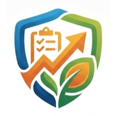

<!DOCTYPE html>
<html lang="id">
<head>
<meta charset="UTF-8"/>
<meta name="viewport" content="width=device-width,initial-scale=1.0,maximum-scale=5.0"/>
<title>Eviden Helper — PKH</title>
<meta name="description" content="Aplikasi jurnal, penyusun laporan, dan monitor eviden RHK ASN PPPK PKH — otomatis, cepat, dan siap dibagikan."/>
<meta name="theme-color" content="#0F2A52"/>
<link rel="manifest" href="manifest.json"/>
<link rel="icon" type="image/png" sizes="192x192" href="icons/icon-192.png"/>
<link rel="apple-touch-icon" href="icons/apple-touch-icon.png"/>
<meta name="mobile-web-app-capable" content="yes"/>
<meta name="apple-mobile-web-app-capable" content="yes"/>
<meta name="apple-mobile-web-app-status-bar-style" content="black-translucent"/>
<meta name="apple-mobile-web-app-title" content="Eviden Helper"/>
<script src="https://cdnjs.cloudflare.com/ajax/libs/html2pdf.js/0.10.1/html2pdf.bundle.min.js"></script>
<link rel="preconnect" href="https://fonts.googleapis.com"/>
<link href="https://fonts.googleapis.com/css2?family=Playfair+Display:wght@600;700&family=DM+Sans:wght@300;400;500;600;700&display=swap" rel="stylesheet"/>
<style>
*{box-sizing:border-box;margin:0;padding:0}
:root{
  /* Palet "soft & profesional": krem-biru pucat sebagai kanvas, aksen teal-mint.
     Teks dibuat lebih gelap/kontras dibanding versi sebelumnya agar tetap nyaman
     dibaca (terutama --txs/--txm yang dipakai untuk label & teks sekunder). */
  --bg:#F6F8FB;--surf:#ffffff;--surfhi:#F0F5FB;
  --bd:#E7EDF6;--bd2:#D6E1EF;
  --tx:#1C2534;--txs:#42506A;--txm:#67768F;
  --gold:#2FA890;--goldDim:rgba(47,168,144,0.14);--goldBd:rgba(47,168,144,0.36);
  --navy:#2C4468;--navyhi:#33507A;
}
/* ── TEMA GELAP ── diaktifkan lewat atribut data-theme="dark" di <html> (lihat setTheme()) */
[data-theme="dark"]{
  --bg:#10161F;--surf:#1A2230;--surfhi:#222C3D;
  --bd:#2C3849;--bd2:#3A4A5F;
  --tx:#EEF3FA;--txs:#C2CEE0;--txm:#8FA0B8;
  --gold:#45D6BA;--goldDim:rgba(69,214,186,0.16);--goldBd:rgba(69,214,186,0.4);
  --navy:#5C7FB0;--navyhi:#6C8FC0;
}
[data-theme="dark"] body{background:var(--bg)}
[data-theme="dark"] .card,[data-theme="dark"] .rhk-card{box-shadow:0 1px 3px rgba(0,0,0,.35)}
[data-theme="dark"] input,[data-theme="dark"] select,[data-theme="dark"] textarea{color-scheme:dark}
[data-theme="dark"] #doc-preview{background:#ffffff;color:#1C2534} /* dokumen laporan tetap kertas putih walau tema gelap aktif */
body{background:var(--bg);color:var(--tx);font-family:'DM Sans',system-ui,sans-serif;min-height:100vh;font-size:13px}
::-webkit-scrollbar{width:4px;height:4px}
::-webkit-scrollbar-thumb{background:#C3D9EE;border-radius:99px}
input,select,textarea{font-family:inherit;background:var(--surf);border:1px solid var(--bd2);color:var(--tx);border-radius:8px;padding:9px 12px;font-size:12px;outline:none;width:100%;transition:border-color .15s}
input:focus,select:focus,textarea:focus{border-color:var(--gold)}
select{appearance:none;padding-right:32px;cursor:pointer}
select option{background:var(--surf);color:var(--tx)}
textarea{resize:vertical;line-height:1.7}
input[type=date]::-webkit-calendar-picker-indicator{filter:none;cursor:pointer;opacity:.6}
input[type=range]{accent-color:var(--gold);cursor:pointer}
label.photo-slot{display:block;position:relative;background:var(--surfhi);border:1.5px dashed var(--bd2);border-radius:8px;cursor:pointer;overflow:hidden;aspect-ratio:16/9;transition:border-color .15s}
label.photo-slot:hover{border-color:var(--gold)}
label.photo-slot img{width:100%;height:100%;object-fit:cover;display:block}
label.photo-slot .ph-inner{position:absolute;inset:0;display:flex;flex-direction:column;align-items:center;justify-content:center;gap:8px;color:var(--txm)}
label.photo-slot .ph-del{position:absolute;top:6px;right:6px;background:rgba(0,0,0,.7);border:none;color:#fff;border-radius:50%;width:22px;height:22px;cursor:pointer;font-size:16px;display:flex;align-items:center;justify-content:center;line-height:1;z-index:2}
label.kop-slot{aspect-ratio:5/1}
.card{background:var(--surf);border:1px solid var(--bd);border-radius:18px;padding:20px;box-shadow:0 2px 10px rgba(43,54,72,.05)}
.sec-hd{display:flex;align-items:center;gap:8px;font-size:10px;font-weight:700;color:var(--txs);text-transform:uppercase;letter-spacing:.12em;margin-bottom:16px}
.lbl{font-size:10px;font-weight:700;color:var(--txs);text-transform:uppercase;letter-spacing:.1em;display:block;margin-bottom:5px}
.row2{display:grid;grid-template-columns:1fr 1fr;gap:10px}
.row3{display:grid;grid-template-columns:1fr 1fr 1fr;gap:8px}
.fld{display:flex;flex-direction:column;gap:12px}
.divider{height:1px;background:var(--bd);margin:14px 0}
.btn-gold{display:inline-flex;align-items:center;gap:6px;padding:8px 18px;border-radius:11px;border:none;background:linear-gradient(135deg,var(--gold),var(--navy));color:#ffffff;font-size:11px;font-weight:700;cursor:pointer;font-family:inherit;transition:opacity .15s}
.btn-gold:disabled{opacity:.65;cursor:not-allowed}
.btn-out{display:inline-flex;align-items:center;gap:6px;padding:8px 16px;border-radius:11px;border:1px solid var(--bd2);background:transparent;color:var(--txs);font-size:11px;font-weight:700;cursor:pointer;font-family:inherit}
.btn-ghost{display:inline-flex;align-items:center;gap:6px;padding:7px 12px;border-radius:11px;border:1px solid var(--goldBd);background:var(--goldDim);color:var(--gold);font-size:10px;font-weight:700;cursor:pointer;font-family:inherit}
.tab-btn{display:flex;align-items:center;gap:6px;padding:6px 14px;border-radius:7px;border:none;cursor:pointer;font-family:inherit;background:transparent;color:var(--txm);font-size:11px;font-weight:600;transition:all .15s}
.tab-btn.active{background:var(--goldDim);color:var(--gold)}
.side-tab{display:flex;align-items:center;gap:8px;width:100%;padding:9px 12px;border-radius:8px;border:none;cursor:pointer;background:transparent;color:var(--txm);font-size:11px;font-weight:600;text-align:left;transition:all .15s;border-left:2px solid transparent;font-family:inherit}
.side-tab.active{background:var(--goldDim);color:var(--gold);border-left-color:var(--gold)}
.side-tab:hover{color:var(--txs)}
.rhk-card{background:var(--surf);border:1px solid var(--bd);border-radius:18px;padding:18px;cursor:pointer;transition:all .16s;box-shadow:0 2px 10px rgba(43,54,72,.05)}
.rhk-card:hover,.rhk-card.active{border-color:var(--gold);background:var(--surfhi)}
@keyframes fadein{from{opacity:0;transform:translateY(5px)}to{opacity:1;transform:none}}
@keyframes spin{to{transform:rotate(360deg)}}
.fi{animation:fadein .22s ease}
.spin-ico{display:inline-flex;width:14px;height:14px;animation:spin .8s linear infinite}
.toast{position:fixed;bottom:20px;left:50%;transform:translateX(-50%);background:var(--surf);border:1px solid var(--goldBd);color:var(--navy);padding:10px 22px;border-radius:99px;font-size:12px;font-weight:600;z-index:999;display:flex;align-items:center;gap:8px;box-shadow:0 8px 28px rgba(43,54,72,.14);animation:fadein .22s ease;white-space:nowrap}
.toast.err{border-color:#f85149;color:#f85149}
/* A4 document */
#doc-preview{width:210mm;min-height:297mm;background:white;color:#111;padding:2cm;margin:0 auto;font-family:'Times New Roman',serif;line-height:1.5;box-shadow:0 20px 60px rgba(43,54,72,.28);border-radius:4px}
/* Margin PDF (Bagikan) sekarang mengikuti padding bawaan div ini (1.5cm 2cm) — opsi margin html2pdf diset 0 */
#doc-preview.export-mode{box-shadow:none!important;border-radius:0!important;padding-top:0!important;padding-bottom:0!important}
.doc-sec-title{font-weight:bold;margin-bottom:6px;text-align:left}
.doc-sec{margin-bottom:14px;page-break-inside:avoid;break-inside:avoid}
.doc-sec-body{margin-left:0}
/* subheading tidak boleh ditinggal sendirian di akhir halaman */
.doc-subhd{font-weight:bold;font-style:normal;text-decoration:underline;margin-bottom:2px;page-break-after:avoid;break-after:avoid}
/* paragraf isi: spasi 1,5 — justify — hanging indent untuk numbered list */
.doc-para{text-align:justify;white-space:pre-wrap;line-height:1.5;margin-bottom:6px}
.doc-num-wrap{display:table;width:100%;margin-bottom:4px}
.doc-num-no{display:table-cell;width:1.6em;vertical-align:top;font-weight:normal}
.doc-num-txt{display:table-cell;text-align:justify;line-height:1.5;vertical-align:top}
.info-table{border-collapse:collapse;border:none;width:100%}
.info-table td{border:none;padding-bottom:3px;vertical-align:top;line-height:1.5}
.info-table td:first-child{width:130px;font-weight:bold}
/* Lampiran foto: grid 2 kolom agar foto utama & pendukung berdekatan, idealnya 2 foto per halaman */
.lampiran-grid{display:flex;flex-wrap:wrap;gap:14px;justify-content:flex-start}
.lampiran-item{width:calc(50% - 7px);border:3px solid #e0e0e0;padding:6px;box-sizing:border-box;page-break-inside:avoid;break-inside:avoid;margin-bottom:14px}
.lampiran-item img{width:100%;height:10.5cm;display:block;object-fit:contain;background:#fafafa}
.lampiran-caption{font-size:.78em;margin-top:6px;font-style:normal;color:#555;text-align:center;line-height:1.4}
@media(max-width:860px){
  .lampiran-item{width:100%}
  .lampiran-item img{height:auto;max-height:14cm}
}
@media(max-width:860px){
  #sidebar{display:none!important}
  .preview-panel{display:none}

  /* Perbesar teks dasar & elemen form agar mudah dibaca di HP */
  body{font-size:15px}
  .lbl{font-size:11.5px;margin-bottom:6px}
  input,select,textarea{font-size:16px;padding:11px 13px;border-radius:10px}
  .card{padding:16px;border-radius:12px}
  .sec-hd{font-size:11px}
  .btn-gold,.btn-out,.btn-ghost{font-size:13px;padding:10px 16px;min-height:44px}
  .tab-btn{font-size:12px;padding:8px 12px}
  .rhk-card{padding:16px}
  .rhk-card p{font-size:13px!important}

  /* Header: sembunyikan tab halaman & kontrol yang berat di layar kecil (digantikan bottom-nav) */
  #app-shell > header{padding:0 12px;gap:8px}
  #app-shell > header > div:nth-child(2){display:none!important}
  #app-shell > header > div:first-child > div:last-child{display:none}
  #app-shell > header .btn-out,#app-shell > header .btn-gold{display:none!important}
  #app-shell > header .font-ctrl{display:none!important}

  main{padding:14px!important;padding-bottom:88px!important}
  .row2{grid-template-columns:1fr;gap:12px}
  .row3{grid-template-columns:1fr;gap:10px}

  /* Beri ruang di bawah agar tidak tertutup mobile bottom nav */
  #mob-nav button{padding:6px 10px;min-height:52px;justify-content:center}
  #mob-nav span{font-size:10px!important}

  #doc-preview{transform-origin:top left;box-shadow:0 10px 32px rgba(43,54,72,.22)}
}
@media(max-width:420px){
  body{font-size:14.5px}
  .btn-gold,.btn-out,.btn-ghost{font-size:12.5px}
}
@media print{
  /* Margin 2cm rata di semua sisi & semua halaman (termasuk halaman 1) — konsisten dgn padding #doc-preview di layar & margin PDF hasil Bagikan. */
  @page{size:A4;margin:2cm}
  *{-webkit-print-color-adjust:exact;print-color-adjust:exact}
  body{background:white!important;margin:0;padding:0}
  #app-shell{display:none!important}
  #print-wrap{display:block!important}
  #doc-preview{width:100%!important;min-height:unset!important;padding:0!important;margin:0!important;box-shadow:none!important;border-radius:0!important;line-height:1.5!important}
  .doc-sec{page-break-inside:avoid;break-inside:avoid}
  .doc-sec-title{page-break-after:avoid;break-after:avoid}
  .doc-subhd{page-break-after:avoid;break-after:avoid}
  p,li,.doc-num-wrap{orphans:3;widows:3}
  li{page-break-inside:avoid;break-inside:avoid}
  table{page-break-inside:avoid;break-inside:avoid}
  img{page-break-inside:avoid;break-inside:avoid;max-width:100%}
  .page-break{page-break-before:always;break-before:always}
  /* Lampiran: judul harus nempel langsung di atas foto */
  #doc-preview > div:last-child { page-break-before:always; break-before:always; }
  /* Seksi A. Pendahuluan tetap di halaman 1 bersama judul */
  .doc-pendahuluan{page-break-before:avoid;break-before:avoid}
}
.select-wrap{position:relative}
.select-wrap::after{content:'›';position:absolute;right:10px;top:50%;transform:translateY(-50%) rotate(90deg);pointer-events:none;color:var(--txm);font-size:14px}
</style>
</head>
<body>
<div id="root"></div>
<div id="print-wrap" style="display:none"></div>

<script type="module">
// ── DATA ──────────────────────────────────────
const P2K2 = {
  "Modul 1: Pendidikan & Pengasuhan Anak":["Sesi 1: Menjadi Orang Tua yang Lebih Baik","Sesi 2: Memahami Perilaku Anak","Sesi 3: Cara Anak Usia Dini Belajar","Sesi 4: Membantu Anak Sukses di Sekolah"],
  "Modul 2: Ekonomi & Keuangan":["Sesi 5: Mengelola Keuangan Keluarga","Sesi 6: Cermat Meminjam dan Menabung","Sesi 7: Memulai Usaha"],
  "Modul 3: Kesehatan & Gizi":["Sesi 8: Gizi & Layanan Ibu Hamil","Sesi 9: Gizi untuk Ibu Menyusui & Balita","Sesi 10: Kesakitan Anak & Kebersihan Lingkungan"],
  "Modul 4: Perlindungan Anak":["Sesi 11: Pencegahan Kekerasan pada Anak","Sesi 12: Penelantaran & Eksploitasi Anak"],
  "Modul 5: Kesejahteraan Sosial":["Sesi 13: Pelayanan Penyandang Disabilitas Berat","Sesi 14: Kesejahteraan Lanjut Usia"]
};
const RHK = [
  {id:1,no:1,title:"Penyaluran Bansos PKH",sub:"Tepat Sasaran & Jumlah",options:["Edukasi & sosialisasi pencairan tunai/non-tunai","Supervisi permasalahan bantuan sosial","Monitoring/Pemantauan penyaluran bantuan sosial"]},
  {id:2,no:2,title:"Pertemuan P2K2",sub:"Sesuai Ketentuan",options:["Melaksanakan Pertemuan P2K2 (FDS)"]},
  {id:3,no:3,title:"Verifikasi Komitmen",sub:"& Pendampingan KPM",options:["Verifikasi komitmen pendidikan, kesehatan & kesos","Pendampingan, mediasi, dan fasilitasi KPM PKH"]},
  {id:4,no:4,title:"Usulan Graduasi & PPSE",sub:"Pemberdayaan Ekonomi",options:["Usulan KPM graduasi mandiri","Pemberdayaan PPSE (usulan PPSE)"]},
  {id:5,no:5,title:"VerVal & Pemutakhiran",sub:"Data KPM",options:["Proses bisnis PKH (VerVal)","Pemutakhiran data anggota KPM"]},
  {id:6,no:6,title:"Respon Kasus Adaptif",sub:"Cepat & Terukur",options:["Respon kasus/pengaduan/kebencanaan/kerentanan"]},
  {id:7,no:7,title:"Laporan Bulanan",sub:"Analisis & Dokumentasi",options:["Laporan bulanan pelaksanaan PKH & laporan lainnya"]},
  {id:8,no:8,title:"Direktif Pimpinan",sub:"Sesuai Penugasan",options:["TLHP (Tindak Lanjut Hasil Pemeriksaan)","Sosialisasi kebijakan","Rapat Koordinasi","Tugas lainnya"]},
  {id:9,no:9,title:"Berita Baik Kemensos",sub:"Komunikasi Publik",options:["Penyebaran Berita Baik di Media Sosial"]}
];

// Emoji tematik per RHK — dipakai sebagai aksen hangat di kartu RHK & badge, dicampur dengan ikon SVG
const RHK_EMOJI = {1:"💳",2:"👨‍👩‍👧‍👦",3:"✅",4:"🌱",5:"🔄",6:"🚨",7:"📊",8:"📋",9:"📣"};

// ── ROUTING URL SEDERHANA (agar alamat di address bar mencerminkan halaman aktif) ──
const PAGE_ROUTES = { home:"/jurnal", edit:"/form", preview:"/preview", rhk:"/daftar-rhk" };
const ROUTE_PAGES = { "/jurnal":"home", "/form":"edit", "/preview":"preview", "/daftar-rhk":"rhk" };

// ── HELPERS ──────────────────────────────────
const toDate = d => d ? new Intl.DateTimeFormat("id-ID",{weekday:"long",day:"numeric",month:"long",year:"numeric"}).format(new Date(d)) : "";
const lastWorkday = () => {
  // Hari kerja terakhir bulan berjalan (Senin=1 s/d Jumat=5)
  const n=new Date(), ld=new Date(n.getFullYear(),n.getMonth()+1,0);
  // Mundur sampai ketemu hari kerja (bukan Sabtu=6, bukan Minggu=0)
  while(ld.getDay()===0 || ld.getDay()===6) ld.setDate(ld.getDate()-1);
  return new Intl.DateTimeFormat("id-ID",{day:"numeric",month:"long",year:"numeric"}).format(ld);
};
const today = () => new Date().toISOString().split("T")[0];

// ── DASAR KEGIATAN DINAMIS ──────────────────
function getDasar(rhk, f, modul, sesi) {
  const base = [
    `Rencana Hasil Kerja (RHK) ASN PPPK Dit. PSNK terkait ${rhk.title} — ${rhk.sub}.`,
    `Tugas pokok ASN PPPK Dit. PSNK di wilayah tugas guna menjamin keberlangsungan program perlindungan sosial nasional.`
  ];
  const sp = {
    1:`Data Bayar dan Monitoring Penyaluran Bantuan Sosial yang bersumber dari SIKMA/Omspan periode berjalan sebagai acuan distribusi tepat sasaran.`,
    2:`Kurikulum Modul P2K2 Direktorat Jaminan Sosial Keluarga — ${modul}: ${sesi} — sebagai pedoman pelaksanaan pertemuan.`,
    3:`Sistem Verifikasi Komitmen (VerKom) yang terintegrasi pada aplikasi SIKMA guna menjamin bantuan tepat syarat.`,
    4:f.kegiatan?.toLowerCase().includes("ppse")?`Instrumen Asesmen KPM Potensi Graduasi dan Formulir Pendaftaran Program PPSE Kemensos RI.`:`Pedoman Graduasi Mandiri PKH dan Instrumen Asesmen Kesiapan Ekonomi Keluarga guna akurasi data kepesertaan.`,
    5:`Data Pembaruan DTSEN yang bersumber dari SIKMA guna menjamin akuntabilitas data penerima bantuan sosial nasional.`,
    6:`Mekanisme Respons Cepat Kasus Sosial PKH dan prosedur penanganan pengaduan yang ditetapkan Kemensos RI.`,
    7:`Format Laporan Bulanan Pelaksanaan PKH yang ditetapkan Direktorat PSNK sebagai instrumen monitoring kinerja periodik.`,
    8:`Instruksi strategis dan direktif pimpinan Direktorat PSNK Kemensos RI yang bersifat mengikat dan memerlukan tindak lanjut segera.`,
    9:`Panduan Komunikasi Publik Kemensos RI melalui kanal digital resmi.`
  };
  return [...base, sp[rhk.no]||sp[9]];
}

// ── LOKASI (Desa) UTK NARASI/CAPTION ─────────
// RHK 2 (P2K2) memakai Desa Dampingan yang dipilih dari dropdown (lokasi kelompok
// pasti & tetap). RHK lain tidak wajib berlokasi di satu desa dampingan tertentu,
// jadi default-nya generik "dampingan" (=> "Desa dampingan"), kecuali diisi manual.
function getLokasiDesa(f, rhk){
  if(rhk.no===2) return f.desa || "...";
  return (f.desaManual && f.desaManual.trim()) ? f.desaManual.trim() : "dampingan";
}

// ── CAPTION FOTO OTOMATIS (menyesuaikan RHK / sub kegiatan) ─
function photoCaption(rhk, f, modul, sesi){
  const desa=getLokasiDesa(f, rhk), grp=f.kelompok||"...";
  switch(rhk.no){
    case 1: return `Pendampingan penyaluran bantuan sosial PKH di wilayah ${f.wilayah||"dampingan"}`;
    case 2: return `Pelaksanaan P2K2 — ${sesi} bersama Kelompok ${grp}, Desa ${desa}`;
    case 3: return `Verifikasi komitmen & pendampingan KPM — ${f.kegiatan||rhk.title}`;
    case 4: return `${f.kegiatan||rhk.title}${f.ppse_nama?` — KPM a.n. ${f.ppse_nama}`:""}`;
    case 5: return `${f.kegiatan||rhk.title} di Desa ${desa}`;
    case 6: return `Respon kasus/pengaduan — ${f.kegiatan||rhk.title}`;
    case 7: return `Penyusunan laporan bulanan pelaksanaan PKH`;
    case 8: return `${f.kegiatan||rhk.title}${f.sasaran?` bersama ${f.sasaran}`:""}`;
    case 9: return `Publikasi Berita Baik Kemensos RI`;
    default: return f.kegiatan||rhk.title;
  }
}

// ── BANK DATA NARASI ─────────────────────────
// Flag: jika user sudah edit narasi secara manual, auto-fill tidak override
let _narasiManual = false;

// Tiap bagian (umum/tujuan/narasi/hasil) per RHK punya 5+ variasi kalimat.
// Dipilih ACAK setiap kali autoNarrative()/refill() dipanggil, agar laporan
// antar-hari tidak terbaca sama persis meski RHK & aktivitasnya sama.
// Setiap entri adalah fungsi (ctx)=>string agar bisa menyisipkan data form terkini
// (desa, kelompok, sasaran, modul/sesi P2K2, dsb).
const NARASI_BANK = {
  1:{ // Penyaluran Bansos PKH
    umum:[
      c=>`Penyaluran bantuan sosial merupakan pilar strategis dalam menjaga jaring pengaman sosial nasional bagi masyarakat prasejahtera di Indonesia. Dalam kerangka Program Keluarga Harapan (PKH), ketepatan jumlah dan waktu penyaluran sangat krusial untuk menjaga daya beli serta memenuhi kebutuhan dasar Keluarga Penerima Manfaat (KPM) secara akuntabel dan transparan sesuai regulasi Kemensos RI.`,
      c=>`Sebagai salah satu pilar utama Program Keluarga Harapan (PKH), penyaluran bantuan sosial dituntut berjalan tepat sasaran, tepat jumlah, dan tepat waktu. Hal ini menjadi wujud komitmen negara dalam menjaga daya beli serta memenuhi kebutuhan dasar Keluarga Penerima Manfaat (KPM) secara akuntabel dan transparan.`,
      c=>`Ketepatan penyaluran bantuan sosial menjadi indikator utama keberhasilan implementasi PKH di lapangan. Pendamping sosial berperan strategis memastikan setiap tahapan pencairan berjalan lancar, transparan, dan bebas dari praktik penyimpangan yang merugikan Keluarga Penerima Manfaat (KPM).`,
      c=>`Sebagai jaring pengaman sosial nasional, penyaluran bantuan PKH harus dikawal secara ketat agar benar-benar sampai ke tangan Keluarga Penerima Manfaat (KPM) sesuai hak dan komponen yang ditetapkan, tanpa hambatan teknis maupun praktik pungutan liar.`,
      c=>`Kelancaran penyaluran bantuan sosial PKH sangat menentukan efektivitas program dalam menekan angka kemiskinan. Pendampingan pada tahap pencairan menjadi kunci agar Keluarga Penerima Manfaat (KPM) memahami hak dan mekanisme transaksi secara benar dan aman.`
    ],
    tujuan:[
      c=>`1. Meningkatkan literasi finansial KPM mengenai mekanisme transaksi bantuan sosial melalui mesin ATM maupun agen perbankan resmi di wilayah Desa ${c.desa}.\n2. Memastikan KPM menerima bantuan sesuai komponen hak tanpa adanya potongan ilegal dari pihak manapun.\n3. Mengedukasi KPM agar senantiasa menjaga kerahasiaan PIN Kartu KKS masing-masing guna menghindari penyalahgunaan dana.`,
      c=>`1. Memastikan seluruh KPM di Desa ${c.desa} memperoleh bantuan sosial sesuai jumlah dan komponen hak yang tercatat pada sistem PKH.\n2. Mendampingi KPM yang mengalami kendala teknis pada saat pencairan di mesin ATM maupun agen bank.\n3. Menanamkan kesadaran KPM untuk menggunakan dana bantuan secara bijak bagi kebutuhan prioritas keluarga.`,
      c=>`1. Mengawal proses pencairan bantuan sosial agar berjalan tertib, aman, dan bebas dari pungutan liar di wilayah Desa ${c.desa}.\n2. Memberikan edukasi praktis penggunaan Kartu KKS serta menjaga kerahasiaan PIN kepada seluruh KPM.\n3. Melakukan verifikasi lapangan atas kesesuaian jumlah dana yang diterima KPM dengan data bayar resmi.`,
      c=>`1. Memfasilitasi KPM di Desa ${c.desa} yang belum memahami prosedur pencairan bantuan agar dapat bertransaksi secara mandiri.\n2. Meminimalkan risiko penyalahgunaan Kartu KKS melalui edukasi keamanan PIN dan kerahasiaan data.\n3. Menjamin distribusi bantuan berjalan tepat sasaran sesuai basis data resmi Kemensos RI.`,
      c=>`1. Menjamin hak KPM di Desa ${c.desa} atas bantuan sosial diterima secara utuh tanpa potongan dari pihak manapun.\n2. Membantu KPM lanjut usia atau berkebutuhan khusus yang kesulitan mengakses mesin transaksi.\n3. Menguatkan pemahaman KPM mengenai jadwal dan tahapan pencairan bantuan sosial PKH.`
    ],
    narasi:[
      c=>`Pendamping sosial melaksanakan pendampingan teknis dan edukasi pencairan bantuan di lokasi transaksi secara intensif. Diberikan arahan komprehensif mengenai tata cara penggunaan kartu KKS yang benar, membantu KPM yang mengalami kendala teknis pada mesin transaksi, serta melakukan verifikasi saldo untuk memastikan dana telah masuk ke rekening masing-masing KPM. Pendamping juga memberikan motivasi agar bantuan digunakan secara bijak untuk kebutuhan prioritas seperti pendidikan anak dan asupan gizi keluarga.`,
      c=>`Pendamping hadir langsung di lokasi transaksi guna mengawal proses pencairan bantuan sosial KPM. Bantuan teknis diberikan kepada KPM yang mengalami kendala pada mesin ATM, mulai dari input PIN hingga verifikasi saldo akhir. Di sela kegiatan, pendamping menyampaikan pesan pengelolaan keuangan sederhana agar dana bantuan dialokasikan tepat guna.`,
      c=>`Kegiatan diawali dengan pengecekan kehadiran KPM sesuai jadwal pencairan, dilanjutkan dengan pendampingan satu per satu pada mesin transaksi. Pendamping memastikan tidak ada pihak ketiga yang memungut biaya tambahan, sekaligus memberikan edukasi singkat mengenai keamanan Kartu KKS dan kerahasiaan PIN.`,
      c=>`Pendamping melakukan koordinasi dengan petugas agen bank/ATM setempat sebelum mendampingi KPM bertransaksi. Setiap KPM diarahkan secara personal, termasuk membantu lansia dan penyandang disabilitas yang kesulitan mengoperasikan mesin, sambil memastikan kesesuaian nominal dana yang diterima.`,
      c=>`Pendampingan dilakukan dengan pendekatan door-to-door bagi KPM yang berhalangan hadir di lokasi utama, disertai penjelasan mengenai jadwal pencairan berikutnya. Pendamping turut memantau antrean agar proses berjalan tertib dan tidak menimbulkan kerumunan berlebih.`
    ],
    hasil:[
      c=>`Seluruh KPM yang hadir berhasil melakukan penarikan dana bantuan secara mandiri, tertib, dan aman. Dana yang diterima telah dipastikan sesuai dengan data bayar resmi pada sistem PKH, serta tidak ditemukan adanya praktik pungutan liar atau kendala teknis yang menghambat proses distribusi bantuan di wilayah tugas.`,
      c=>`Proses pencairan berjalan lancar tanpa kendala berarti; seluruh KPM menerima bantuan sesuai jumlah hak masing-masing. Tingkat pemahaman KPM terhadap penggunaan Kartu KKS turut meningkat pasca pendampingan.`,
      c=>`Tercatat seluruh KPM di lokasi transaksi berhasil mencairkan dana bantuan tanpa hambatan teknis maupun indikasi pungutan liar. Pendamping memastikan data penerima bantuan sesuai dengan sistem bayar resmi PKH.`,
      c=>`KPM yang sebelumnya kesulitan mengoperasikan mesin ATM kini mampu bertransaksi secara mandiri berkat pendampingan intensif. Tidak ditemukan selisih dana maupun keluhan terkait proses pencairan pada periode ini.`,
      c=>`Terjaminnya hak penuh KPM atas bantuan sosial yang dicairkan, disertai peningkatan kesadaran keamanan bertransaksi. Seluruh proses terdokumentasikan dengan baik sebagai bahan evaluasi penyaluran periode berikutnya.`
    ]
  },
  2:{ // Pertemuan P2K2
    umum:[
      c=>`Pertemuan Peningkatan Kemampuan Keluarga (P2K2) atau Family Development Session (FDS) adalah instrumen utama PKH untuk memfasilitasi perubahan perilaku jangka panjang pada Keluarga Penerima Manfaat. Melalui transfer pengetahuan yang terstruktur, KPM dibekali berbagai kecakapan hidup esensial guna membangun kemandirian mental, ekonomi, dan kesehatan keluarga agar mampu memutus rantai kemiskinan antar-generasi secara efektif.`,
      c=>`P2K2/FDS merupakan wadah pembelajaran rutin bagi KPM PKH untuk memperoleh pengetahuan praktis seputar pengasuhan, ekonomi, dan kesehatan keluarga. Melalui pendekatan partisipatif, KPM diharapkan mampu mengubah pola pikir dan perilaku menuju kemandirian jangka panjang.`,
      c=>`Sebagai komponen wajib PKH, P2K2 dirancang untuk menguatkan kapasitas keluarga penerima manfaat melalui sesi edukatif yang interaktif. Modul yang disampaikan disusun agar relevan dengan kebutuhan riil rumah tangga KPM di wilayah dampingan.`,
      c=>`Pertemuan kelompok P2K2 menjadi sarana strategis mentransformasi pengetahuan menjadi perilaku nyata di tingkat keluarga. Forum ini memungkinkan KPM saling berbagi pengalaman sekaligus menerima pendampingan langsung dari fasilitator.`,
      c=>`Family Development Session (FDS) hadir sebagai jembatan antara bantuan tunai dan perubahan perilaku KPM secara berkelanjutan. Sesi ini menitikberatkan pada penguatan kapasitas keluarga agar tidak sekadar bergantung pada bantuan sosial.`
    ],
    tujuan:[
      c=>`1. Membekali anggota Kelompok ${c.grp} di Desa ${c.desa} dengan wawasan praktis mengenai ${c.modul}, khususnya ${c.sesi}.\n2. Meningkatkan kapasitas KPM untuk mengimplementasikan pola asuh anak positif, manajemen keuangan rumah tangga efektif, serta menjaga standar gizi dan kesehatan lingkungan.\n3. Menumbuhkan motivasi kemandirian keluarga agar mampu meningkatkan kualitas taraf hidup secara mandiri tanpa ketergantungan pada bantuan sosial.`,
      c=>`1. Menyampaikan materi ${c.sesi} secara aplikatif kepada anggota Kelompok ${c.grp} di Desa ${c.desa}.\n2. Mendorong KPM untuk mempraktikkan langsung poin-poin materi ${c.modul} dalam kehidupan sehari-hari.\n3. Memperkuat kekompakan dan rasa saling mendukung antar-anggota kelompok dalam menghadapi tantangan ekonomi keluarga.`,
      c=>`1. Meningkatkan pemahaman KPM Kelompok ${c.grp} terhadap ${c.modul}, dengan fokus pembahasan ${c.sesi}.\n2. Memberikan ruang diskusi bagi KPM di Desa ${c.desa} untuk berbagi pengalaman dan solusi atas permasalahan rumah tangga.\n3. Mendorong komitmen nyata KPM untuk menerapkan hasil sesi dalam kehidupan sehari-hari.`,
      c=>`1. Memfasilitasi Kelompok ${c.grp} di Desa ${c.desa} memahami esensi ${c.sesi} sebagai bagian dari ${c.modul}.\n2. Menstimulasi perubahan perilaku positif KPM terkait pengasuhan, ekonomi, atau kesehatan keluarga sesuai tema sesi.\n3. Memastikan kehadiran dan partisipasi aktif KPM terdokumentasi sebagai pemenuhan komitmen PKH.`,
      c=>`1. Menguatkan kapasitas Kelompok ${c.grp} di Desa ${c.desa} melalui pembahasan ${c.sesi} pada modul ${c.modul}.\n2. Membuka ruang tanya-jawab interaktif agar KPM leluasa menyampaikan kendala yang dihadapi.\n3. Menumbuhkan kesadaran kolektif akan pentingnya kemandirian keluarga pasca-bantuan sosial.`
    ],
    narasi:[
      c=>`Pelaksanaan P2K2 bertempat di Desa ${c.desa} bersama seluruh anggota Kelompok ${c.grp}. Pendamping memandu jalannya sesi secara dialogis dan interaktif menggunakan Buku Pintar, Flipchart, dan pemutaran media edukasi singkat. Kegiatan diawali dengan pembukaan motivasi, penyampaian poin utama materi ${c.sesi}, diskusi kelompok kecil, simulasi peran (role play), serta diakhiri penyusunan rencana aksi nyata yang akan dilakukan KPM di rumah tangga masing-masing.`,
      c=>`Sesi berlangsung di Desa ${c.desa} dihadiri anggota Kelompok ${c.grp} secara tertib. Pendamping membuka sesi dengan ice-breaking singkat sebelum masuk ke pembahasan inti ${c.sesi}, dilengkapi Buku Pintar dan media bantu Flipchart. Diskusi kelompok kecil dan tanya-jawab menjadi bagian utama sebelum sesi ditutup dengan kesimpulan bersama.`,
      c=>`Kegiatan P2K2 Kelompok ${c.grp} di Desa ${c.desa} diawali dengan absensi dan penyampaian tujuan sesi ${c.sesi}. Pendamping memfasilitasi diskusi partisipatif serta simulasi praktis agar materi lebih mudah dipahami dan diterapkan oleh KPM di kehidupan nyata.`,
      c=>`Pendamping memandu pertemuan Kelompok ${c.grp} di Desa ${c.desa} dengan pendekatan andragogi orang dewasa, menekankan pengalaman KPM sebagai bahan diskusi materi ${c.sesi}. Sesi diselingi permainan edukatif ringan agar suasana tetap interaktif dan tidak monoton.`,
      c=>`Bertempat di balai/rumah warga Desa ${c.desa}, sesi P2K2 Kelompok ${c.grp} membahas ${c.sesi} secara runtut mulai dari pemaparan konsep, studi kasus sederhana, hingga rencana tindak lanjut individual tiap KPM.`
    ],
    hasil:[
      c=>`KPM di Kelompok ${c.grp} menunjukkan antusiasme tinggi dan mampu menjelaskan kembali poin utama materi ${c.sesi} saat evaluasi akhir sesi. Tercapainya kesepakatan komitmen harian dari setiap peserta serta terdokumentasikannya partisipasi aktif KPM sebagai pemenuhan kewajiban kehadiran dalam program PKH bulan berjalan.`,
      c=>`Mayoritas peserta Kelompok ${c.grp} mampu mengulas kembali inti materi ${c.sesi} dengan baik. Tingkat kehadiran tercatat lengkap dan terdokumentasi sebagai bukti pemenuhan komponen kepesertaan PKH.`,
      c=>`Terbangunnya pemahaman baru di kalangan KPM Kelompok ${c.grp} terkait ${c.sesi}, ditandai dengan aktifnya sesi tanya-jawab. Beberapa KPM menyampaikan rencana penerapan materi di rumah tangga masing-masing.`,
      c=>`Sesi P2K2 berjalan kondusif dengan partisipasi penuh dari Kelompok ${c.grp}. KPM menunjukkan pemahaman yang memadai terhadap ${c.sesi} dan menyatakan komitmen untuk mempraktikkannya.`,
      c=>`Kehadiran dan keterlibatan aktif Kelompok ${c.grp} tercatat sebagai pemenuhan komitmen PKH bulan berjalan. KPM terlihat lebih percaya diri mendiskusikan penerapan materi ${c.sesi} dalam keseharian.`
    ]
  },
  3:{ // Verifikasi Komitmen & Pendampingan KPM
    umum:[
      c=>`Verifikasi komitmen merupakan mekanisme kontrol untuk memastikan Keluarga Penerima Manfaat (KPM) PKH memenuhi kewajiban pada bidang pendidikan, kesehatan, dan kesejahteraan sosial secara berkelanjutan sebagai syarat penerimaan bantuan.`,
      c=>`Pendampingan, mediasi, dan fasilitasi KPM menjadi bagian tak terpisahkan dari tugas pendamping sosial guna memastikan setiap permasalahan yang dihadapi KPM dapat diselesaikan secara tepat dan berkeadilan.`,
      c=>`Sebagai syarat keberlanjutan bantuan, verifikasi komitmen KPM di bidang pendidikan, kesehatan, dan kesejahteraan sosial harus dilaksanakan secara berkala guna menjaga akurasi dan akuntabilitas data kepesertaan PKH.`,
      c=>`Fungsi mediasi dan fasilitasi pendamping sosial krusial dalam membantu KPM mengakses layanan dasar serta menyelesaikan kendala administratif yang menghambat pemenuhan komitmen program.`,
      c=>`Pemenuhan komitmen KPM merupakan indikator utama keberhasilan program yang menuntut pengawasan rutin pendamping sosial, khususnya pada aspek kehadiran pendidikan anak dan pemeriksaan kesehatan rutin.`
    ],
    tujuan:[
      c=>`1. Memverifikasi pemenuhan komitmen pendidikan dan kesehatan KPM di wilayah Desa ${c.desa}.\n2. Memberikan mediasi dan fasilitasi atas kendala yang dihadapi KPM dalam mengakses layanan dasar.\n3. Memastikan data komitmen KPM terupdate secara akurat pada sistem PKH.`,
      c=>`1. Melakukan pengecekan lapangan atas kehadiran anak KPM di sekolah dan fasilitas kesehatan di Desa ${c.desa}.\n2. Menjembatani komunikasi antara KPM dengan pihak sekolah/fasilitas kesehatan bila terjadi kendala.\n3. Mendokumentasikan hasil verifikasi sebagai bahan pelaporan komitmen bulanan.`,
      c=>`1. Menindaklanjuti KPM yang belum memenuhi komitmen pendidikan/kesehatan di Desa ${c.desa} melalui kunjungan langsung.\n2. Memberikan edukasi pentingnya pemenuhan komitmen sebagai syarat keberlanjutan bantuan.\n3. Memfasilitasi penyelesaian kendala administratif yang dihadapi KPM.`,
      c=>`1. Memastikan keakuratan data verifikasi komitmen KPM di Desa ${c.desa} sesuai kondisi riil lapangan.\n2. Melakukan mediasi antar-pihak apabila ditemukan sengketa atau miskomunikasi terkait pemenuhan komitmen.\n3. Membina hubungan komunikasi yang baik antara KPM dan penyedia layanan dasar setempat.`,
      c=>`1. Mengidentifikasi KPM berisiko tidak memenuhi komitmen di Desa ${c.desa} untuk intervensi dini.\n2. Memfasilitasi akses KPM terhadap layanan pendidikan dan kesehatan yang menjadi haknya.\n3. Menyusun catatan verifikasi sebagai dasar rekomendasi tindak lanjut program.`
    ],
    narasi:[
      c=>`Pendamping melakukan verifikasi langsung ke sekolah dan fasilitas kesehatan di wilayah Desa ${c.desa} guna mengecek kehadiran serta pemeriksaan rutin anggota KPM. Ditemukan beberapa kendala administratif yang kemudian dimediasi langsung dengan pihak terkait.`,
      c=>`Kegiatan diawali dengan penelusuran data komitmen KPM di Desa ${c.desa}, dilanjutkan kunjungan lapangan untuk konfirmasi langsung kepada keluarga yang datanya belum lengkap. Pendamping turut memfasilitasi komunikasi dengan pihak sekolah/puskesmas setempat.`,
      c=>`Pendamping melaksanakan mediasi antara KPM dan pihak sekolah terkait kendala kehadiran anak di Desa ${c.desa}. Solusi disepakati bersama guna memastikan hak pendidikan anak tetap terpenuhi tanpa mengurangi komitmen PKH.`,
      c=>`Verifikasi dilakukan dengan pendekatan door-to-door kepada KPM di Desa ${c.desa} yang datanya menunjukkan potensi ketidaksesuaian komitmen. Pendamping mencatat kondisi riil serta memberikan arahan langkah perbaikan.`,
      c=>`Pendamping berkoordinasi dengan fasilitas kesehatan setempat untuk memvalidasi kehadiran KPM Desa ${c.desa} pada jadwal pemeriksaan rutin, sekaligus memfasilitasi KPM yang mengalami kendala jadwal atau jarak tempuh.`
    ],
    hasil:[
      c=>`Data komitmen KPM di Desa ${c.desa} berhasil diverifikasi dan diperbarui sesuai kondisi riil lapangan. Kendala administratif yang ditemukan telah dimediasi dan diselesaikan bersama pihak terkait.`,
      c=>`Sebagian besar KPM di Desa ${c.desa} terkonfirmasi memenuhi komitmen pendidikan dan kesehatan. KPM yang sempat mengalami kendala kini telah difasilitasi untuk kembali memenuhi kewajibannya.`,
      c=>`Terselesaikannya permasalahan komunikasi antara KPM dan pihak sekolah/fasilitas kesehatan di Desa ${c.desa} melalui mediasi pendamping. Data verifikasi tercatat lengkap dan siap diinput ke sistem PKH.`,
      c=>`Diperolehnya gambaran akurat mengenai tingkat pemenuhan komitmen KPM di Desa ${c.desa} untuk periode berjalan. Beberapa KPM menerima arahan lanjutan guna mencegah risiko penangguhan bantuan.`,
      c=>`Terjalinnya komunikasi yang lebih baik antara KPM, pendamping, dan penyedia layanan dasar di Desa ${c.desa}. Proses verifikasi berjalan lancar tanpa hambatan berarti pada periode ini.`
    ]
  },
  4:{
    ppse:{
      umum:[
        c=>`Kegiatan dilaksanakan melalui pendampingan intensif dengan KPM PKH terkait program Pemberdayaan Sosial dan Ekonomi (PPSE). Diberikan penjelasan mendalam mengenai tujuan, manfaat, dan mekanisme PPSE sebagai langkah strategis pengentasan kemiskinan dan pemberdayaan ekonomi keluarga secara berkelanjutan.`,
        c=>`Program Pemberdayaan Sosial dan Ekonomi (PPSE) menjadi jembatan bagi KPM PKH yang menunjukkan potensi usaha untuk naik kelas menuju kemandirian ekonomi. Pendampingan difokuskan pada identifikasi potensi dan kesiapan KPM mengikuti program.`,
        c=>`Sebagai kelanjutan dari pendampingan PKH, PPSE hadir untuk mengakselerasi kemandirian ekonomi KPM yang telah menunjukkan geliat usaha produktif. Asesmen mendalam diperlukan guna memastikan ketepatan sasaran program pemberdayaan.`,
        c=>`Pemberdayaan ekonomi melalui skema PPSE merupakan strategi pengungkit bagi KPM agar tidak selamanya bergantung pada bantuan tunai. Pendamping berperan penting dalam memetakan potensi usaha KPM secara objektif.`,
        c=>`PPSE dirancang untuk memberikan dukungan tambahan bagi KPM yang memiliki inisiatif usaha, sebagai bagian dari strategi graduasi bertahap menuju kemandirian ekonomi keluarga.`
      ],
      tujuan:[
        c=>`1. Melakukan identifikasi dan asesmen mendalam terhadap KPM ${c.f.ppse_nama||"..."} yang telah menunjukkan potensi kemandirian ekonomi melalui kegiatan usaha ${c.f.ppse_produk||"..."}.\n2. Memberikan penguatan pemahaman program PPSE sebagai sarana peningkatan pendapatan dan kemandirian keluarga.\n3. Menyusun instrumen usulan calon peserta program PPSE yang akurat dan akuntabel guna percepatan graduasi ekonomi.`,
        c=>`1. Memvalidasi profil usaha ${c.f.ppse_produk||"..."} milik KPM ${c.f.ppse_nama||"..."} sebagai dasar pengajuan PPSE.\n2. Menjelaskan skema bantuan dan pendampingan lanjutan PPSE kepada KPM secara komprehensif.\n3. Memastikan kelengkapan dokumen usulan sesuai instrumen asesmen yang berlaku.`,
        c=>`1. Mengukur kesiapan mental dan ekonomi KPM ${c.f.ppse_nama||"..."} untuk mengikuti program PPSE.\n2. Memberikan gambaran realistis mengenai tanggung jawab dan manfaat jangka panjang PPSE.\n3. Menyusun rekomendasi tindak lanjut berdasarkan hasil asesmen lapangan.`,
        c=>`1. Menggali potensi pengembangan usaha ${c.f.ppse_produk||"..."} milik KPM ${c.f.ppse_nama||"..."} agar layak diusulkan PPSE.\n2. Memberikan motivasi dan edukasi kewirausahaan dasar kepada KPM terkait.\n3. Melengkapi data pendukung usulan PPSE secara valid dan terverifikasi.`,
        c=>`1. Melakukan verifikasi lapangan atas kondisi usaha dan ekonomi KPM ${c.f.ppse_nama||"..."} sebagai calon peserta PPSE.\n2. Menyampaikan simulasi manfaat program PPSE terhadap peningkatan pendapatan keluarga.\n3. Menyusun berkas usulan PPSE sesuai format instrumen asesmen resmi.`
      ],
      narasi:[
        c=>`Pendamping melaksanakan kunjungan lapangan dan asesmen di kediaman KPM atas nama ${c.f.ppse_nama||"..."}. Fokus utama pembahasan meliputi validasi profil ekonomi keluarga, identifikasi potensi usaha ${c.f.ppse_produk||"..."} yang sedang dijalankan, serta penilaian kesiapan mental KPM untuk menerima pendampingan kewirausahaan lebih lanjut. Pendamping memberikan gambaran ekosistem program PPSE meliputi akses modal, penguatan manajemen usaha, dan pemasaran produk.`,
        c=>`Kunjungan dilakukan langsung ke lokasi usaha ${c.f.ppse_produk||"..."} milik KPM ${c.f.ppse_nama||"..."}. Pendamping mengamati kondisi riil usaha, mewawancarai KPM terkait omzet dan kendala yang dihadapi, serta menjelaskan tahapan pengusulan PPSE.`,
        c=>`Pendamping melakukan wawancara mendalam bersama KPM ${c.f.ppse_nama||"..."} untuk memetakan potensi usaha ${c.f.ppse_produk||"..."}. Diskusi turut mencakup rencana pengembangan usaha bila terpilih sebagai peserta PPSE.`,
        c=>`Asesmen dilakukan secara partisipatif bersama KPM ${c.f.ppse_nama||"..."}, mencakup penilaian aset produktif, kondisi usaha ${c.f.ppse_produk||"..."}, serta kesiapan keluarga menerima pendampingan lanjutan PPSE.`,
        c=>`Pendamping menjelaskan alur pengusulan PPSE kepada KPM ${c.f.ppse_nama||"..."} sekaligus melakukan pendataan kondisi usaha ${c.f.ppse_produk||"..."} sebagai bahan pengisian instrumen asesmen resmi.`
      ],
      hasil:[
        c=>`1. Terdata KPM atas nama ${c.f.ppse_nama||"..."} yang menyatakan bersedia dan antusias mengikuti program PPSE.\n2. Meningkatnya pemahaman dan motivasi KPM mengenai pentingnya pemberdayaan ekonomi menuju kemandirian finansial.\n3. Tersusunnya instrumen asesmen dan usulan KPM sebagai calon peserta program PPSE yang valid dan siap diinput ke sistem.`,
        c=>`Terkumpulnya data usaha ${c.f.ppse_produk||"..."} milik KPM ${c.f.ppse_nama||"..."} secara lengkap dan valid. KPM menyatakan siap mengikuti tahapan seleksi PPSE berikutnya.`,
        c=>`KPM ${c.f.ppse_nama||"..."} terkonfirmasi memenuhi kriteria awal sebagai calon peserta PPSE. Berkas usulan telah disusun dan siap diajukan ke tingkat lebih lanjut.`,
        c=>`Diperolehnya pemahaman komprehensif mengenai potensi usaha ${c.f.ppse_produk||"..."} yang layak dikembangkan melalui skema PPSE. KPM menunjukkan antusiasme untuk mengembangkan usahanya.`,
        c=>`Tersusunnya rekomendasi resmi atas nama KPM ${c.f.ppse_nama||"..."} untuk diusulkan sebagai peserta PPSE, dilengkapi data pendukung yang telah diverifikasi lapangan.`
      ]
    },
    graduasi:{
      umum:[
        c=>`Usulan graduasi mandiri merupakan indikator keberhasilan tertinggi dalam pendampingan PKH yang menunjukkan peningkatan taraf hidup KPM sehingga secara sukarela menyatakan diri mampu dan bersedia melepaskan bantuan sosial pemerintah.`,
        c=>`Graduasi mandiri menjadi bukti nyata keberhasilan intervensi PKH dalam meningkatkan taraf ekonomi keluarga hingga tidak lagi memerlukan bantuan sosial pemerintah.`,
        c=>`Sebagai capaian tertinggi program, graduasi mandiri mencerminkan transformasi KPM dari penerima bantuan menjadi keluarga yang mandiri secara ekonomi dan sosial.`,
        c=>`Proses graduasi mandiri dilaksanakan secara persuasif dan penuh penghormatan terhadap keputusan KPM yang telah merasa mampu melepaskan diri dari ketergantungan bantuan sosial.`,
        c=>`Usulan graduasi mandiri menandai keberhasilan jangka panjang pendampingan PKH, sekaligus membuka ruang bagi keluarga lain yang lebih membutuhkan untuk menerima manfaat program.`
      ],
      tujuan:[
        c=>`1. Memfasilitasi permohonan graduasi mandiri bagi KPM ${c.f.ppse_nama||"..."} yang secara faktual sudah memiliki ketahanan ekonomi mandiri di wilayah Desa ${c.desa}.\n2. Melakukan edukasi mengenai kemuliaan status graduasi mandiri bagi keluarga yang telah sejahtera.\n3. Menjamin akurasi data kepesertaan dengan mengeluarkan KPM yang sudah mampu dari basis data penerima bantuan nasional.`,
        c=>`1. Memverifikasi kondisi ekonomi terkini KPM ${c.f.ppse_nama||"..."} di Desa ${c.desa} sebagai dasar pengajuan graduasi mandiri.\n2. Memberikan apresiasi dan penghargaan atas capaian kemandirian KPM.\n3. Memastikan proses graduasi berjalan sukarela tanpa tekanan dari pihak manapun.`,
        c=>`1. Mendorong KPM ${c.f.ppse_nama||"..."} yang telah mapan secara ekonomi di Desa ${c.desa} untuk mengajukan graduasi mandiri.\n2. Menjelaskan konsekuensi dan manfaat status graduasi bagi keluarga yang bersangkutan.\n3. Menyempurnakan basis data kepesertaan PKH agar tepat sasaran bagi keluarga yang masih membutuhkan.`,
        c=>`1. Melakukan asesmen akhir kondisi aset dan pendapatan KPM ${c.f.ppse_nama||"..."} di Desa ${c.desa} sebelum proses graduasi.\n2. Memberikan ruang bagi KPM untuk menyampaikan alasan kesediaan graduasi secara sukarela.\n3. Menyiapkan dokumen administratif graduasi mandiri secara lengkap dan sah.`,
        c=>`1. Mengapresiasi capaian KPM ${c.f.ppse_nama||"..."} di Desa ${c.desa} yang telah mencapai kemandirian ekonomi.\n2. Menjadikan proses graduasi sebagai contoh inspiratif bagi KPM lain di wilayah dampingan.\n3. Menjamin transisi data kepesertaan berjalan tertib sesuai ketentuan Kemensos RI.`
      ],
      narasi:[
        c=>`Pendamping melaksanakan kunjungan edukatif kepada KPM atas nama ${c.f.ppse_nama||"..."} yang tercatat sebagai peserta PKH sejak tahun ${c.f.ppse_tahun_pkh||"..."}. Dilakukan diskusi persuasif mengenai konsep kemandirian ekonomi dan kebanggaan menjadi keluarga yang mandiri. Pendamping melakukan validasi akhir terhadap kondisi aset dan pendapatan keluarga untuk memastikan proses graduasi dilakukan secara sadar dan tanpa paksaan.`,
        c=>`Kunjungan dilakukan ke kediaman KPM ${c.f.ppse_nama||"..."} (peserta PKH sejak ${c.f.ppse_tahun_pkh||"..."}) untuk membahas rencana graduasi mandiri. Pendamping mengapresiasi capaian ekonomi keluarga sekaligus menjelaskan implikasi status graduasi.`,
        c=>`Pendamping berdialog dengan KPM ${c.f.ppse_nama||"..."} membahas kesiapan melepaskan status kepesertaan PKH yang telah disandang sejak ${c.f.ppse_tahun_pkh||"..."}. Validasi kondisi ekonomi terkini dilakukan sebagai dasar keputusan.`,
        c=>`Pendamping menyampaikan apresiasi atas keberhasilan KPM ${c.f.ppse_nama||"..."} membangun kemandirian ekonomi sejak bergabung PKH tahun ${c.f.ppse_tahun_pkh||"..."}, dilanjutkan penjelasan prosedur graduasi mandiri secara transparan.`,
        c=>`Diskusi dilakukan secara kekeluargaan bersama KPM ${c.f.ppse_nama||"..."} untuk memastikan kesediaan graduasi mandiri bersifat sukarela, didukung data kondisi ekonomi terkini yang telah diverifikasi pendamping.`
      ],
      hasil:[
        c=>`Tersusunnya draf usulan graduasi mandiri yang sah atas nama KPM ${c.f.ppse_nama||"..."} (kepesertaan sejak ${c.f.ppse_tahun_pkh||"..."}). Hal ini menjadi preseden positif bagi KPM lainnya di Desa ${c.desa} untuk terus berupaya meningkatkan kesejahteraan ekonomi.`,
        c=>`KPM ${c.f.ppse_nama||"..."} menyatakan kesediaan graduasi mandiri secara tertulis. Dokumen usulan telah disiapkan lengkap untuk diproses lebih lanjut oleh sistem PKH.`,
        c=>`Diperolehnya kesepakatan graduasi mandiri KPM ${c.f.ppse_nama||"..."} secara sukarela, memperkuat citra keberhasilan program pendampingan di Desa ${c.desa}.`,
        c=>`Proses graduasi mandiri KPM ${c.f.ppse_nama||"..."} berjalan lancar dan penuh kesadaran, menjadi contoh nyata keberhasilan pendampingan PKH di wilayah tugas.`,
        c=>`Tercatatnya KPM ${c.f.ppse_nama||"..."} sebagai kandidat graduasi mandiri, membuka peluang bagi keluarga lain yang lebih membutuhkan untuk masuk dalam basis data penerima manfaat.`
      ]
    }
  },
  5:{ // VerVal & Pemutakhiran Data
    umum:[
      c=>`Verifikasi dan Validasi (VerVal) serta pemutakhiran data KPM merupakan proses bisnis krusial dalam menjaga akurasi basis data penerima bantuan sosial nasional, sekaligus mencegah terjadinya inclusion maupun exclusion error dalam penyaluran PKH.`,
      c=>`Akurasi data KPM menjadi fondasi utama keberhasilan seluruh rangkaian program PKH. Pemutakhiran data secara berkala diperlukan untuk merekam perubahan kondisi sosial-ekonomi keluarga penerima manfaat secara real-time.`,
      c=>`Proses bisnis VerVal PKH dirancang untuk memastikan data penerima bantuan senantiasa mutakhir dan sesuai kondisi riil di lapangan, sebagai dasar pengambilan kebijakan yang akuntabel.`,
      c=>`Pemutakhiran data anggota KPM menjadi tugas rutin pendamping guna menjaga sinkronisasi antara data di sistem SIKMA dengan kondisi terkini keluarga di lapangan.`,
      c=>`Sebagai bagian dari tata kelola data terpadu, VerVal dan pemutakhiran data KPM berperan penting mencegah data ganda, tidak valid, atau tidak sesuai kondisi sebenarnya.`
    ],
    tujuan:[
      c=>`1. Melakukan verifikasi dan validasi data KPM di Desa ${c.desa} sesuai proses bisnis PKH yang berlaku.\n2. Memutakhirkan data anggota keluarga yang mengalami perubahan (kelahiran, kematian, pindah domisili, dll).\n3. Memastikan data yang diinput ke sistem SIKMA akurat dan dapat dipertanggungjawabkan.`,
      c=>`1. Mengecek kesesuaian data KPM di Desa ${c.desa} dengan kondisi riil di lapangan.\n2. Melakukan pembaruan data anggota keluarga yang belum tercatat di sistem.\n3. Melaporkan temuan ketidaksesuaian data kepada operator SIKMA setempat.`,
      c=>`1. Menelusuri data KPM di Desa ${c.desa} yang berpotensi tidak valid atau ganda.\n2. Melakukan konfirmasi langsung kepada keluarga terkait perubahan data anggota.\n3. Memastikan seluruh proses pemutakhiran terdokumentasi sesuai prosedur.`,
      c=>`1. Menyelaraskan data KPM di Desa ${c.desa} dengan basis data kependudukan terbaru.\n2. Mengidentifikasi perubahan komposisi keluarga yang berdampak pada komponen bantuan.\n3. Mengawal proses input pemutakhiran hingga tersinkronisasi pada sistem PKH.`,
      c=>`1. Melaksanakan VerVal rutin atas data KPM di Desa ${c.desa} sesuai jadwal proses bisnis PKH.\n2. Mendata perubahan status pendidikan, kesehatan, atau ekonomi anggota keluarga.\n3. Menjamin data yang dilaporkan bebas dari kesalahan input maupun duplikasi.`
    ],
    narasi:[
      c=>`Pendamping melakukan kunjungan rumah ke KPM di Desa ${c.desa} guna mencocokkan data yang tercatat di sistem dengan kondisi riil keluarga. Ditemukan beberapa perubahan data yang perlu segera dimutakhirkan, seperti kelahiran anggota baru atau perubahan status pendidikan anak.`,
      c=>`Kegiatan diawali dengan penarikan data KPM Desa ${c.desa} dari sistem, dilanjutkan pencocokan lapangan satu per satu. Pendamping mencatat setiap perubahan untuk diinput pada tahap pemutakhiran berikutnya.`,
      c=>`Pendamping melakukan verifikasi door-to-door di Desa ${c.desa}, memastikan data alamat, jumlah anggota keluarga, dan komponen bantuan sesuai kondisi aktual. Kendala data ganda atau tidak sinkron langsung dicatat untuk ditindaklanjuti.`,
      c=>`Proses VerVal dilakukan bersama perangkat desa di Desa ${c.desa} untuk mempercepat konfirmasi data kependudukan KPM. Pendamping turut mengedukasi KPM pentingnya melaporkan perubahan data secara berkala.`,
      c=>`Pendamping menelusuri data KPM di Desa ${c.desa} yang sudah lama tidak diperbarui, melakukan wawancara singkat untuk memastikan kondisi keluarga terkini sebelum data diinput ulang ke sistem.`
    ],
    hasil:[
      c=>`Data KPM di Desa ${c.desa} berhasil diverifikasi dan beberapa perubahan penting telah dicatat untuk proses pemutakhiran pada sistem SIKMA. Akurasi data kepesertaan PKH di wilayah dampingan semakin terjaga.`,
      c=>`Diperolehnya data terkini KPM di Desa ${c.desa} yang siap diinput ke sistem. Ditemukan dan dicatatnya beberapa ketidaksesuaian data untuk ditindaklanjuti operator.`,
      c=>`Proses VerVal di Desa ${c.desa} berjalan lancar dengan tingkat partisipasi KPM yang baik. Data yang termutakhirkan akan meningkatkan ketepatan penyaluran bantuan periode berikutnya.`,
      c=>`Terkonfirmasinya kondisi riil sebagian besar KPM di Desa ${c.desa} sesuai data sistem. Beberapa kasus perubahan data telah disiapkan untuk proses input lanjutan.`,
      c=>`Meningkatnya keakuratan basis data KPM di Desa ${c.desa} pasca-kegiatan pemutakhiran. Potensi data ganda atau tidak valid berhasil diminimalkan melalui verifikasi lapangan.`
    ]
  },
  6:{ // Respon Kasus Adaptif
    umum:[
      c=>`Mekanisme respons cepat terhadap kasus, pengaduan, kebencanaan, atau kerentanan sosial merupakan wujud kehadiran negara dalam menangani permasalahan darurat yang dialami Keluarga Penerima Manfaat secara adaptif dan tepat waktu.`,
      c=>`Kerentanan sosial dan kondisi darurat yang dialami KPM menuntut respons cepat dan adaptif dari pendamping sosial guna mencegah dampak yang lebih luas bagi keluarga terdampak.`,
      c=>`Sebagai bagian dari perlindungan sosial adaptif, penanganan kasus/pengaduan harus dilakukan secara sigap agar KPM yang mengalami kondisi darurat memperoleh bantuan yang tepat dan cepat.`,
      c=>`Respons terhadap pengaduan maupun kondisi kebencanaan menjadi ujian nyata profesionalisme pendamping sosial dalam mengawal kesejahteraan KPM di tengah situasi yang tidak terduga.`,
      c=>`Penanganan kasus sosial yang responsif dan terukur mencerminkan komitmen program PKH dalam melindungi keluarga rentan dari risiko sosial-ekonomi yang mendadak.`
    ],
    tujuan:[
      c=>`1. Menindaklanjuti laporan/pengaduan terkait ${c.sasaran} secara cepat dan tepat.\n2. Melakukan asesmen kondisi darurat/kerentanan yang dialami KPM terdampak.\n3. Mengoordinasikan bantuan lanjutan dengan pihak terkait guna penanganan optimal.`,
      c=>`1. Memverifikasi kebenaran laporan terkait ${c.sasaran} melalui kunjungan lapangan langsung.\n2. Memberikan pendampingan psikososial awal bagi KPM yang mengalami kondisi darurat.\n3. Menyusun rekomendasi tindak lanjut sesuai tingkat urgensi kasus.`,
      c=>`1. Merespons pengaduan terkait ${c.sasaran} dalam waktu sesegera mungkin sesuai SOP penanganan kasus.\n2. Melakukan koordinasi lintas sektor untuk penanganan kasus yang membutuhkan rujukan lanjutan.\n3. Mendokumentasikan seluruh proses penanganan sebagai bahan evaluasi dan pelaporan.`,
      c=>`1. Mengidentifikasi akar permasalahan kasus/pengaduan terkait ${c.sasaran} secara objektif.\n2. Memberikan solusi awal yang meringankan kondisi KPM terdampak.\n3. Memastikan kasus tertangani tuntas atau dirujuk ke pihak berwenang bila di luar kewenangan pendamping.`,
      c=>`1. Menjangkau KPM terdampak kasus ${c.sasaran} secepat mungkin guna meminimalkan risiko lanjutan.\n2. Melibatkan perangkat desa/instansi terkait dalam penanganan kasus secara kolaboratif.\n3. Memastikan hak-hak dasar KPM tetap terpenuhi selama proses penanganan berlangsung.`
    ],
    narasi:[
      c=>`Pendamping menerima dan menindaklanjuti laporan terkait ${c.sasaran} dengan segera mendatangi lokasi kejadian. Dilakukan asesmen awal terhadap kondisi KPM terdampak serta koordinasi dengan pihak terkait untuk langkah penanganan lebih lanjut.`,
      c=>`Setelah menerima informasi terkait ${c.sasaran}, pendamping segera melakukan verifikasi lapangan untuk memastikan tingkat urgensi kasus. Komunikasi intensif dilakukan bersama keluarga dan aparat setempat guna merumuskan solusi terbaik.`,
      c=>`Pendamping melakukan kunjungan darurat ke lokasi terdampak ${c.sasaran}, memberikan pendampingan awal sekaligus mencatat kebutuhan mendesak KPM untuk diteruskan ke instansi terkait.`,
      c=>`Kasus terkait ${c.sasaran} ditangani melalui koordinasi cepat antara pendamping, perangkat desa, dan pihak berwenang setempat. Pendamping berperan sebagai penghubung utama antara KPM dan layanan bantuan yang tersedia.`,
      c=>`Pendamping melakukan pemantauan dan asesmen risiko lanjutan pasca-kejadian ${c.sasaran}, memastikan KPM terdampak mendapatkan pendampingan berkelanjutan hingga kondisi kembali stabil.`
    ],
    hasil:[
      c=>`Kasus terkait ${c.sasaran} berhasil ditindaklanjuti dengan cepat dan terkoordinasi. KPM terdampak memperoleh penanganan awal yang meringankan kondisi darurat yang dialami.`,
      c=>`Penanganan kasus ${c.sasaran} berjalan sesuai prosedur dengan hasil yang positif; KPM terdampak menerima dukungan dan arahan lanjutan yang dibutuhkan.`,
      c=>`Terselesaikannya sebagian besar permasalahan terkait ${c.sasaran} melalui koordinasi lintas pihak. Kasus yang memerlukan penanganan lebih lanjut telah dirujuk ke instansi berwenang.`,
      c=>`Diperolehnya solusi awal bagi KPM terdampak ${c.sasaran}, disertai dokumentasi lengkap sebagai bahan evaluasi penanganan kasus adaptif periode ini.`,
      c=>`Kondisi KPM terdampak ${c.sasaran} berangsur membaik pasca-intervensi pendamping. Koordinasi dengan pihak terkait berjalan efektif dan responsif.`
    ]
  },
  7:{ // Laporan Bulanan
    umum:[
      c=>`Penyusunan laporan bulanan pelaksanaan PKH merupakan instrumen akuntabilitas kinerja pendamping sosial yang merekam capaian, kendala, dan analisis perkembangan program di wilayah dampingan secara periodik.`,
      c=>`Laporan bulanan berfungsi sebagai media evaluasi menyeluruh atas pelaksanaan seluruh RHK pendamping selama satu bulan, sekaligus bahan pengambilan kebijakan bagi pimpinan Direktorat PSNK.`,
      c=>`Sebagai bentuk pertanggungjawaban kinerja, laporan bulanan disusun secara sistematis untuk mendokumentasikan seluruh aktivitas pendampingan serta capaian target kinerja individu ASN PPPK.`,
      c=>`Dokumentasi capaian bulanan menjadi sarana refleksi bagi pendamping untuk mengidentifikasi pola kendala di lapangan serta merumuskan strategi perbaikan pada periode berikutnya.`,
      c=>`Laporan bulanan pelaksanaan PKH disusun guna memberikan gambaran komprehensif mengenai dinamika program di wilayah dampingan kepada pemangku kepentingan terkait.`
    ],
    tujuan:[
      c=>`1. Merangkum seluruh capaian pelaksanaan RHK selama satu bulan di wilayah ${c.f.wilayah||"dampingan"}.\n2. Mengidentifikasi kendala utama yang dihadapi selama periode pelaporan.\n3. Menyusun rekomendasi tindak lanjut bagi perbaikan kinerja bulan berikutnya.`,
      c=>`1. Mendokumentasikan data dan capaian kinerja seluruh RHK secara akurat dan terukur.\n2. Menganalisis tren perkembangan program PKH di wilayah ${c.f.wilayah||"dampingan"}.\n3. Menyampaikan laporan tepat waktu sesuai jadwal yang ditetapkan Direktorat PSNK.`,
      c=>`1. Menyusun narasi capaian kinerja bulanan secara ringkas, jelas, dan berbasis data lapangan.\n2. Mengevaluasi efektivitas pendampingan di wilayah ${c.f.wilayah||"dampingan"} selama periode berjalan.\n3. Memberikan masukan strategis bagi peningkatan kualitas layanan pendampingan.`,
      c=>`1. Mengonsolidasikan seluruh eviden dan dokumentasi kegiatan bulanan menjadi laporan yang utuh.\n2. Menyoroti capaian unggulan maupun tantangan signifikan selama sebulan terakhir.\n3. Memastikan laporan dapat menjadi rujukan evaluasi kinerja individu ASN PPPK.`,
      c=>`1. Menyajikan gambaran menyeluruh pelaksanaan program PKH di wilayah ${c.f.wilayah||"dampingan"} selama satu bulan.\n2. Mengukur pencapaian target kinerja dibandingkan rencana kerja bulanan.\n3. Merumuskan langkah perbaikan berkelanjutan berdasarkan hasil evaluasi.`
    ],
    narasi:[
      c=>`Pendamping mengumpulkan seluruh data dan eviden kegiatan RHK selama satu bulan terakhir di wilayah ${c.f.wilayah||"dampingan"}. Data tersebut kemudian diolah dan dianalisis untuk menyusun narasi laporan yang mencerminkan capaian kinerja secara objektif.`,
      c=>`Kegiatan penyusunan laporan diawali dengan rekapitulasi seluruh jurnal harian dan dokumentasi eviden per RHK. Pendamping melakukan analisis sederhana terhadap capaian dan kendala sebelum menuangkannya ke dalam format laporan resmi.`,
      c=>`Pendamping menelaah kembali seluruh catatan kegiatan bulan berjalan, memilah data pendukung yang relevan, serta menyusun narasi evaluatif mengenai efektivitas pendampingan di wilayah ${c.f.wilayah||"dampingan"}.`,
      c=>`Proses penyusunan laporan melibatkan konsolidasi data dari berbagai sumber, termasuk hasil verifikasi, respon kasus, dan pelaksanaan P2K2, untuk disajikan secara ringkas dan informatif.`,
      c=>`Pendamping menyusun laporan bulanan dengan menonjolkan capaian utama serta memberikan catatan reflektif atas kendala yang ditemui selama pelaksanaan tugas di wilayah ${c.f.wilayah||"dampingan"}.`
    ],
    hasil:[
      c=>`Tersusunnya laporan bulanan pelaksanaan PKH yang komprehensif dan siap disampaikan kepada pimpinan sesuai jadwal yang ditetapkan. Laporan menjadi bahan evaluasi kinerja bulan berjalan.`,
      c=>`Laporan bulanan berhasil diselesaikan tepat waktu, mencerminkan seluruh capaian dan kendala pendampingan secara transparan dan akuntabel.`,
      c=>`Diperolehnya dokumen laporan yang informatif sebagai dasar evaluasi dan perencanaan kerja bulan berikutnya di wilayah ${c.f.wilayah||"dampingan"}.`,
      c=>`Tersedianya rekapitulasi capaian kinerja bulanan yang akurat, mendukung proses monitoring oleh Direktorat PSNK secara berkelanjutan.`,
      c=>`Laporan bulanan tersusun rapi dan sistematis, memuat rekomendasi perbaikan yang dapat ditindaklanjuti pada periode pendampingan berikutnya.`
    ]
  },
  8:{ // Direktif Pimpinan
    umum:[
      c=>`Melaksanakan direktif pimpinan merupakan perwujudan responsivitas pendamping sosial terhadap instruksi strategis atau penugasan khusus yang bersifat mendesak guna merespons dinamika kebijakan di lapangan. Penugasan ini krusial untuk memastikan kebijakan strategis kementerian dapat terimplementasi secara selaras di tingkat lapangan.`,
      c=>`Setiap direktif pimpinan menuntut respons cepat dan akurat dari pendamping sosial agar kebijakan strategis kementerian dapat terlaksana secara efektif di lini lapangan.`,
      c=>`Sebagai bagian dari struktur pelaksana program, pendamping sosial wajib menindaklanjuti instruksi pimpinan Direktorat PSNK sebagai bentuk kedisiplinan dan loyalitas kerja.`,
      c=>`Direktif pimpinan seringkali bersifat situasional dan menuntut fleksibilitas pendamping dalam menyesuaikan prioritas kerja harian demi kelancaran pelaksanaan tugas kedinasan.`,
      c=>`Kepatuhan terhadap direktif pimpinan mencerminkan profesionalisme ASN PPPK dalam mendukung tercapainya target strategis Direktorat PSNK secara menyeluruh.`
    ],
    tujuan:[
      c=>`1. Membangun sinergi koordinasi bersama ${c.sasaran} guna memastikan penugasan terkait ${c.act} terlaksana secara tepat waktu, efektif, dan akuntabel.\n2. Menyamakan persepsi langkah kerja di lapangan dan meminimalkan hambatan birokrasi demi kelancaran pelayanan sosial.\n3. Menjamin setiap instruksi pimpinan dapat diterjemahkan ke dalam aksi nyata yang memberikan manfaat langsung bagi KPM di wilayah dampingan.`,
      c=>`1. Menindaklanjuti instruksi terkait ${c.act} bersama ${c.sasaran} secara cepat dan terukur.\n2. Memastikan seluruh pihak memahami tujuan dan target dari penugasan yang diberikan.\n3. Mendokumentasikan proses pelaksanaan sebagai bukti pertanggungjawaban tugas.`,
      c=>`1. Mengoordinasikan pelaksanaan ${c.act} bersama ${c.sasaran} sesuai arahan pimpinan.\n2. Mengidentifikasi hambatan teknis yang mungkin timbul selama pelaksanaan penugasan.\n3. Melaporkan progres pelaksanaan secara berkala kepada pimpinan terkait.`,
      c=>`1. Memastikan penugasan ${c.act} dari pimpinan terlaksana sesuai target waktu yang ditetapkan.\n2. Membangun komunikasi efektif dengan ${c.sasaran} demi kelancaran pelaksanaan tugas.\n3. Menyiapkan laporan hasil pelaksanaan sebagai bahan evaluasi pimpinan.`,
      c=>`1. Merespons cepat arahan pimpinan terkait ${c.act} tanpa mengabaikan tugas rutin pendampingan.\n2. Melibatkan ${c.sasaran} secara aktif dalam pelaksanaan penugasan.\n3. Menjamin hasil pelaksanaan penugasan dapat dipertanggungjawabkan secara administratif.`
    ],
    narasi:[
      c=>`Pendamping melaksanakan audiensi dan rapat koordinasi bersama ${c.sasaran} pada lokasi yang telah disepakati. Fokus pembahasan diarahkan pada penjabaran teknis instruksi direktif pimpinan, pemetaan potensi hambatan di lapangan, serta perumusan kerangka solusi integratif guna percepatan penyelesaian tugas secara tuntas. Pendamping menyampaikan data pendukung serta laporan progres terkini untuk mendukung proses pengambilan keputusan strategis.`,
      c=>`Pendamping segera menindaklanjuti arahan pimpinan terkait ${c.act} dengan menghubungi ${c.sasaran} untuk menjadwalkan koordinasi. Pembahasan difokuskan pada teknis pelaksanaan serta pembagian tanggung jawab masing-masing pihak.`,
      c=>`Kegiatan diawali dengan pemaparan singkat mengenai substansi direktif pimpinan kepada ${c.sasaran}, dilanjutkan diskusi teknis pelaksanaan ${c.act} di lapangan.`,
      c=>`Pendamping menghadiri pertemuan koordinasi bersama ${c.sasaran} guna membahas langkah konkret pelaksanaan ${c.act} sesuai arahan pimpinan, sekaligus menyampaikan kendala yang perlu diantisipasi.`,
      c=>`Penugasan ${c.act} ditindaklanjuti melalui komunikasi intensif dengan ${c.sasaran}, mencakup penyusunan jadwal kerja dan pembagian peran demi efektivitas pelaksanaan.`
    ],
    hasil:[
      c=>`Tercapainya kesepahaman langkah strategis dan komitmen kerja sama yang solid antara pendamping sosial dengan pihak ${c.sasaran}. Diperolehnya rencana tindak lanjut (RTL) yang konkret serta terjalinnya pola komunikasi sektoral yang lebih efisien.`,
      c=>`Penugasan ${c.act} berhasil ditindaklanjuti sesuai arahan pimpinan, dengan dukungan penuh dari ${c.sasaran}. Progres pelaksanaan telah dilaporkan sebagai bahan evaluasi.`,
      c=>`Terjalinnya koordinasi yang solid dengan ${c.sasaran} dalam pelaksanaan ${c.act}. Instruksi pimpinan berhasil diterjemahkan menjadi langkah kerja yang konkret di lapangan.`,
      c=>`Diperolehnya kesepakatan bersama ${c.sasaran} mengenai langkah lanjutan pelaksanaan ${c.act}. Pendamping berhasil memenuhi target waktu yang diarahkan pimpinan.`,
      c=>`Direktif pimpinan terkait ${c.act} tertangani dengan baik, ditandai respons positif dari ${c.sasaran} serta terdokumentasikannya seluruh proses pelaksanaan.`
    ]
  },
  9:{ // Berita Baik Kemensos
    umum:[
      c=>`Penyebaran Berita Baik melalui media sosial merupakan strategi komunikasi publik modern untuk menyebarluaskan dampak positif program perlindungan sosial kepada masyarakat luas secara masif. Hal ini bertujuan untuk membangun kepercayaan publik terhadap kinerja pemerintah serta menginspirasi masyarakat mengenai transformasi kemandirian sosial KPM PKH.`,
      c=>`Komunikasi publik yang positif menjadi instrumen penting membangun citra program PKH di tengah masyarakat, sekaligus mendokumentasikan capaian nyata pendampingan sosial secara digital.`,
      c=>`Berita Baik Kemensos menjadi kanal resmi menyampaikan kisah inspiratif KPM yang berhasil bangkit berkat pendampingan sosial, sekaligus memperkuat transparansi program di ruang publik.`,
      c=>`Publikasi capaian positif program PKH melalui media sosial berperan penting menepis persepsi negatif serta mengedukasi masyarakat luas mengenai manfaat nyata bantuan sosial.`,
      c=>`Sebagai bagian dari komunikasi strategis kementerian, penyebaran Berita Baik memperkuat legitimasi program di mata publik sekaligus mengapresiasi kerja keras KPM dan pendamping di lapangan.`
    ],
    tujuan:[
      c=>`1. Mendokumentasikan dan mempublikasikan narasi positif mengenai keberhasilan program pendampingan sosial di lapangan melalui platform komunikasi publik resmi.\n2. Memperkuat citra positif lembaga di mata masyarakat serta memberikan apresiasi visual terhadap capaian kemandirian ekonomi KPM.\n3. Menyediakan sumber informasi publik yang autentik dan inspiratif mengenai manfaat nyata PKH bagi upaya pengentasan kemiskinan di wilayah dampingan.`,
      c=>`1. Mengangkat kisah sukses KPM di wilayah dampingan sebagai bahan publikasi digital.\n2. Menyusun konten yang informatif dan menarik sesuai standar komunikasi publik Kemensos RI.\n3. Menjangkau audiens seluas mungkin guna memperkuat kepercayaan publik terhadap PKH.`,
      c=>`1. Mendokumentasikan momen positif pendampingan sosial dalam bentuk foto/video yang layak publikasi.\n2. Menyusun caption yang persuasif dan sesuai kaidah komunikasi kementerian.\n3. Mempublikasikan konten dengan menandai akun resmi Kemensos RI secara konsisten.`,
      c=>`1. Menemukan dan mengangkat kisah inspiratif KPM sebagai materi Berita Baik.\n2. Memastikan konten publikasi menjaga privasi dan martabat KPM yang diangkat.\n3. Menyebarluaskan konten secara konsisten sebagai bagian dari strategi komunikasi publik.`,
      c=>`1. Membangun narasi positif program PKH melalui dokumentasi kegiatan pendampingan yang humanis.\n2. Menjaga kualitas visual dan tata bahasa konten sesuai pedoman komunikasi Kemensos RI.\n3. Memantau respons publik terhadap konten yang telah dipublikasikan.`
    ],
    narasi:[
      c=>`Pendamping menyusun materi publikasi digital berupa foto dokumentasi aksi lapangan yang humanis atau testimoni kemajuan anggota KPM dampingan yang telah berhasil merintis kemandirian ekonomi. Pendamping merangkai narasi berita yang persuasif dan informatif dengan tetap berpegang pada standar komunikasi publik kementerian. Konten kemudian diunggah dengan menandai Akun Media Sosial Kemensos RI secara profesional.`,
      c=>`Pendamping mengumpulkan dokumentasi kegiatan positif di lapangan, memilih momen yang paling representatif, lalu menyusun narasi singkat namun menggugah untuk dipublikasikan di media sosial resmi.`,
      c=>`Kegiatan diawali dengan wawancara singkat bersama KPM yang menunjukkan progres positif, dilanjutkan pengambilan dokumentasi foto/video, serta penyusunan caption yang informatif dan inspiratif.`,
      c=>`Pendamping menyusun konten Berita Baik dengan menonjolkan sisi humanis kegiatan pendampingan, memastikan pesan yang disampaikan mudah dipahami dan menggugah empati publik.`,
      c=>`Materi publikasi disusun berdasarkan dokumentasi kegiatan lapangan terkini, dengan narasi yang menonjolkan dampak nyata program PKH bagi kehidupan KPM.`
    ],
    hasil:[
      c=>`Terdokumentasikannya keberhasilan program PKH secara naratif dan visual di platform media sosial resmi kementerian. Meningkatnya literasi dan kesadaran masyarakat mengenai dampak positif pendampingan sosial bagi keluarga kurang mampu.`,
      c=>`Konten Berita Baik berhasil dipublikasikan tepat waktu dan mendapat respons positif dari warganet. Citra program PKH semakin terbangun kuat di ruang publik.`,
      c=>`Terpublikasikannya kisah inspiratif KPM secara profesional, turut memperkuat kepercayaan masyarakat terhadap efektivitas program perlindungan sosial.`,
      c=>`Diperolehnya materi publikasi berkualitas yang berhasil menjangkau audiens luas, sekaligus menjadi dokumentasi capaian pendampingan sosial di wilayah tugas.`,
      c=>`Konten yang dipublikasikan turut mengapresiasi kerja keras KPM dan pendamping, memperkuat narasi positif program PKH di kalangan masyarakat luas.`
    ]
  },
  default:{
    umum:[c=>`Laporan ini disusun sebagai pertanggungjawaban pelaksanaan tugas harian ASN PPPK guna memastikan program perlindungan sosial di wilayah dampingan berjalan tepat sasaran, akuntabel, dan transparan.`],
    tujuan:[c=>`1. Memastikan seluruh intervensi program di wilayah Desa ${c.desa} berjalan sesuai pedoman teknis kementerian.\n2. Melakukan monitoring rutin terhadap pemenuhan hak dasar KPM di bidang pendidikan, kesehatan, dan kesejahteraan sosial.\n3. Menyediakan data lapangan yang akurat guna mendukung proses pengambilan kebijakan program.`],
    narasi:[c=>`Pendamping melaksanakan kegiatan harian ${c.act} guna mengidentifikasi kondisi riil lapangan serta memberikan layanan responsif bagi KPM sesuai standar operasional yang ditetapkan. Pendamping melakukan interaksi langsung dengan masyarakat, menyerap aspirasi, serta memberikan solusi terhadap kendala yang ditemui.`],
    hasil:[c=>`Kegiatan terlaksana secara kondusif dan diperolehnya data akurat guna mendukung pemutakhiran status kepesertaan jaminan sosial keluarga dampingan. Terjaminnya pelayanan sosial bagi KPM di wilayah Desa ${c.desa} serta tersedianya bahan laporan kinerja harian yang valid.`]
  }
};

function pickNarasi(arr, ctx){ return arr[Math.floor(Math.random()*arr.length)](ctx); }

// ── BANK DATA NARASI DARI FILE EXCEL (Bank_Data_Laporan_RHK.xlsx) ──
// Dipakai sebagai narasi DEFAULT (deterministik, dicocokkan ke kegiatan yang
// dipilih) setiap kali RHK/kegiatan berganti. Bank lama (NARASI_BANK di atas)
// tetap tersimpan sebagai variasi TAMBAHAN — hanya dipakai saat "umum" (tidak
// tersedia di data Excel) dan saat tombol "Perbarui/Acak Narasi" ditekan.
const NARASI_BANK_XLSX = {
  1:[
    {judul:`Melakukan edukasi dan sosialisasi pencairan secara tunai dan non tunai`,tujuan:`Memberi pemahaman KPM tentang mekanisme, prosedur, hak dan kewajiban pencairan bansos tunai/non tunai.`,narasi:`Edukasi langsung mengenai pencairan via KKS, ATM, agen penyalur; antisipasi kendala; pencegahan penyalahgunaan bansos & perlindungan data pribadi.`,hasil:`KPM memahami mekanisme pencairan non tunai, langkah antisipasi kendala, dan pentingnya perlindungan data pribadi. Kegiatan terlaksana baik; KPM lebih paham & waspada dalam pencairan bansos.`},
    {judul:`Melaksanakan Supervisi Permasalahan Bantuan Sosial`,tujuan:`Memantau & menelusuri kendala KPM (data, pencairan, pemanfaatan) serta memberi pendampingan/solusi.`,narasi:`Kunjungan & pemantauan langsung; identifikasi kendala data/status/pencairan; klarifikasi ke KPM; pencatatan bahan tindak lanjut.`,hasil:`Teridentifikasi permasalahan bansos KPM; KPM dapat pendampingan; tersusun bahan tindak lanjut. Supervisi berjalan baik, memberi gambaran kondisi & kendala KPM di lapangan.`},
    {judul:`Melaksanakan Monitoring/Pemantauan Penyaluran Bantuan Sosial`,tujuan:`Memastikan bansos diterima KPM sesuai ketentuan & mengidentifikasi kendala penyaluran.`,narasi:`Pemantauan langsung, cek status penyaluran, wawancara singkat KPM, koordinasi dengan pendamping/agen/perangkat desa.`,hasil:`Diketahui status penyaluran; mayoritas KPM menerima bansos sesuai ketentuan; ditemukan beberapa kendala kartu/saldo/data. Monitoring berjalan baik, membantu memastikan bansos tepat sasaran.`},
    {judul:`Melaksanakan Penelitian Penyaluran Bantuan Sosial`,tujuan:`Monitoring KPM yang belum bertransaksi bansos & mencari penyebabnya.`,narasi:`Penelusuran data SIKSMA, monitoring lapangan, klarifikasi ke KPM soal kendala kartu/rekening/akses, edukasi tata cara transaksi.`,hasil:`Teridentifikasi KPM yang belum bertransaksi & penyebabnya; KPM dapat penjelasan tata cara transaksi. Penelitian berjalan baik, jadi dasar tindak lanjut agar bansos segera dimanfaatkan.`}
  ],
  2:[
    {judul:`Melaksanakan Pertemuan Peningkatan Kemampuan Keluarga (P2K2) — modul Kesejahteraan Lansia`,tujuan:`Meningkatkan pengetahuan, sikap, keterampilan KPM lewat pertemuan P2K2.`,narasi:`Pertemuan tatap muka, penyampaian modul Kesejahteraan sesi Lansia, diskusi & tanya jawab interaktif.`,hasil:`KPM paham materi P2K2, meningkat kesadaran peran keluarga, terbangun komunikasi antar KPM. P2K2 berjalan lancar & bermanfaat bagi kualitas kehidupan keluarga KPM.`},
    {judul:`Melaksanakan Pertemuan Peningkatan Kemampuan Keluarga (P2K2) — modul Kesehatan dan Gizi`,tujuan:`Meningkatkan pengetahuan, sikap, keterampilan KPM lewat pertemuan P2K2.`,narasi:`Pertemuan tatap muka, penyampaian modul Kesehatan dan Gizi sesi 3, diskusi & tanya jawab interaktif.`,hasil:`KPM paham materi P2K2, meningkat kesadaran peran keluarga, terbangun komunikasi antar KPM. P2K2 berjalan lancar & bermanfaat bagi kualitas kehidupan keluarga KPM.`},
    {judul:`Melaksanakan Pertemuan Peningkatan Kemampuan Keluarga (P2K2) — modul Usaha`,tujuan:`Meningkatkan pengetahuan, sikap, keterampilan KPM lewat pertemuan P2K2.`,narasi:`Pertemuan tatap muka, penyampaian modul Usaha sesi 1, diskusi & tanya jawab interaktif.`,hasil:`KPM paham materi P2K2, meningkat kesadaran peran keluarga, terbangun komunikasi antar KPM. P2K2 berjalan lancar & bermanfaat bagi kualitas kehidupan keluarga KPM.`}
  ],
  3:[
    {judul:`Melaksanakan Verifikasi Komitmen Pendidikan, Kesehatan dan Kesejahteraan Sosial`,tujuan:`Memastikan KPM memenuhi komitmen bidang pendidikan, kesehatan, dan kesejahteraan sosial.`,narasi:`Pengecekan kehadiran anak di pendidikan, kepatuhan layanan kesehatan, kondisi sosial KPM; penguatan pemahaman komitmen.`,hasil:`Terverifikasi pemenuhan komitmen KPM; diketahui kendala; tersusun data evaluasi. Verifikasi berjalan baik, jadi dasar evaluasi & pembinaan KPM.`},
    {judul:`Melakukan pendampingan, mediasi, dan fasilitasi kepada KPM PKH`,tujuan:`Mendorong perubahan perilaku KPM menuju mandiri & produktif lewat pendampingan, mediasi, fasilitasi.`,narasi:`Interaksi langsung menggali permasalahan sosial/ekonomi KPM, fasilitasi akses informasi/layanan, penguatan motivasi kemandirian.`,hasil:`KPM terbantu selesaikan masalah lewat mediasi; mulai tumbuh kesadaran mandiri & produktif. Pendampingan berdampak positif bagi perubahan perilaku & pola pikir KPM.`}
  ],
  4:{
    graduasi:[
      {judul:`Melakukan usulan KPM Graduasi Mandiri dengan Surat Pernyataan (KPM: Ponisri)`,tujuan:`Mengusulkan KPM yang bersedia graduasi mandiri, dibuktikan surat pernyataan.`,narasi:`Pendampingan & verifikasi kesiapan KPM; pengumpulan surat pernyataan graduasi yang ditandatangani.`,hasil:`Terdata KPM (Ponisri) yang menandatangani pernyataan graduasi mandiri. Menunjukkan KPM siap sosial-ekonomi untuk keluar dari PKH secara mandiri.`},
      {judul:`Melakukan usulan KPM Graduasi Mandiri dengan Surat Pernyataan (KPM: Mustofa)`,tujuan:`Mengusulkan KPM yang bersedia graduasi mandiri, dibuktikan surat pernyataan.`,narasi:`Pendampingan & verifikasi kesiapan KPM; pengumpulan surat pernyataan graduasi yang ditandatangani.`,hasil:`Terdata KPM (Mustofa) yang menandatangani pernyataan graduasi mandiri. Menunjukkan KPM siap sosial-ekonomi untuk keluar dari PKH secara mandiri.`},
      {judul:`Melakukan usulan KPM Graduasi Mandiri — Perencanaan Target Graduasi`,tujuan:`Menyusun perencanaan target KPM potensial graduasi mandiri.`,narasi:`Identifikasi & pemetaan KPM dengan kondisi sosial-ekonomi meningkat; penetapan target graduasi & pendampingan bertahap.`,hasil:`Teridentifikasi KPM potensial graduasi; tersusun daftar target graduasi mandiri. Jadi dasar strategi pendampingan lebih terarah menuju graduasi.`}
    ],
    ppse:[
      {judul:`Melakukan usulan Pemberdayaan PPSE (KPM: Kaseman, usaha ternak kambing)`,tujuan:`Mengusulkan KPM yang bersedia mengikuti program PPSE untuk pemberdayaan ekonomi.`,narasi:`Penjelasan tujuan/manfaat/mekanisme PPSE; pendataan KPM bersedia; pengisian instrumen asesmen usaha.`,hasil:`Terdata KPM (Kaseman) bersedia ikut PPSE (usaha budidaya kambing); meningkat pemahaman program pemberdayaan ekonomi. Direspons positif KPM; diharapkan tingkatkan kapasitas & kemandirian ekonomi.`}
    ]
  },
  5:[
    {judul:`Melaksanakan Pemutakhiran Data KPM PKH`,tujuan:`Memperbarui data KPM sesuai perubahan kondisi sosial, ekonomi, kependudukan.`,narasi:`Penelusuran & pengecekan data KPM di lapangan; klarifikasi data kependudukan/keluarga/kepesertaan; pembaruan data sistem.`,hasil:`Data KPM lebih akurat & mutakhir; diketahui perubahan kondisi sosial-ekonomi KPM. Menjaga keakuratan data sebagai dasar pelaksanaan PKH.`},
    {judul:`Melaksanakan Pembaruan DTSEN/Groundcheck`,tujuan:`Memvalidasi & memperbarui klasifikasi desil kesejahteraan KPM sesuai kondisi riil.`,narasi:`Kunjungan & pengecekan langsung kondisi tempat tinggal, penghasilan, aset; pencocokan dengan data sistem.`,hasil:`Diperoleh data kondisi riil KPM; teridentifikasi perubahan klasifikasi desil kesejahteraan. Mendukung ketepatan sasaran program berbasis data akurat.`},
    {judul:`Melaksanakan proses bisnis PKH: verifikasi & validasi calon penerima bansos`,tujuan:`Memastikan kebenaran & kelayakan data calon penerima bansos.`,narasi:`Penelusuran data & pengecekan langsung; pencocokan data kependudukan/sosial-ekonomi; klarifikasi ke calon penerima.`,hasil:`Data calon penerima terverifikasi/tervalidasi; diketahui kesesuaian dengan kondisi riil. Mendukung penetapan penerima bansos yang tepat sasaran & akuntabel.`}
  ],
  6:[
    {judul:`Melaksanakan Respon Kasus/Pengaduan/Kebencanaan/Kerentanan (anak putus sekolah)`,tujuan:`Menindaklanjuti laporan/keluhan KPM atau masyarakat terkait pelaksanaan PKH.`,narasi:`Penelusuran & klarifikasi pengaduan; komunikasi langsung/kunjungan lapangan; pemberian rekomendasi penyelesaian.`,hasil:`Teridentifikasi & terklarifikasi kasus pengaduan anak putus sekolah; tersusun tindak lanjut. Kasus/pengaduan tertangani lebih cepat & terarah sesuai ketentuan.`}
  ],
  7:[
    {judul:`Membuat laporan bulanan pelaksanaan PKH dan laporan lainnya`,tujuan:`Menyusun laporan bulanan sebagai bukti kinerja SDM & bahan evaluasi program PKH.`,narasi:`Kompilasi laporan koordinasi wilayah, pemutakhiran data, P2K2, penyaluran bansos, home visit verifikasi komitmen, disertai foto geotag.`,hasil:`Pemutakhiran data ter-update di DTSEN; KPM paham & terapkan materi P2K2; KPM graduasi bertambah; bansos tersalur tepat sasaran. Pelaksanaan pendampingan & pemutakhiran berjalan disiplin, bansos dimanfaatkan sesuai peruntukan.`}
  ],
  8:[
    {judul:`Melaksanakan Tindak Lanjut Hasil Pemeriksaan (TLHP)`,tujuan:`Menindaklanjuti temuan hasil pemeriksaan internal/eksternal atas pelaksanaan PKH.`,narasi:`Menelaah & menindaklanjuti temuan sesuai rekomendasi; klarifikasi data, perbaikan administrasi, pemutakhiran data.`,hasil:`Temuan hasil pemeriksaan ditindaklanjuti sesuai rekomendasi; meningkat kepatuhan pelaksanaan PKH. TLHP jadi langkah penting perbaikan & penyempurnaan pelaksanaan PKH.`},
    {judul:`Melakukan sosialisasi kebijakan dan proses bisnis PKH kepada aparat pemerintah`,tujuan:`Meningkatkan pemahaman aparat pemerintah, KPM, dan masyarakat atas kebijakan & proses bisnis PKH.`,narasi:`Sosialisasi via pertemuan tatap muka, forum koordinasi, dan media sosial; materi kebijakan, alur proses bisnis, hak-kewajiban KPM.`,hasil:`Meningkat pemahaman aparat & masyarakat atas kebijakan PKH; berkurang potensi kesalahpahaman. Sosialisasi berjalan baik, tingkatkan koordinasi antar pemangku kepentingan.`},
    {judul:`Mengikuti Rapat Koordinasi (Rakornis SDM PKH Kab. Kediri)`,tujuan:`Memperkuat komunikasi & kerja sama antar pihak dalam pelaksanaan PKH.`,narasi:`Pertemuan membahas perkembangan program, evaluasi kegiatan, pembahasan kendala lapangan, dan kesepakatan tindak lanjut.`,hasil:`Terlaksana koordinasi antar pihak; teridentifikasi permasalahan; tersusun kesepakatan tindak lanjut. Rapat koordinasi efektif memperkuat sinergi pelaksanaan PKH.`},
    {judul:`Mengikuti Rapat Koordinasi PKH`,tujuan:`Memperkuat komunikasi & kerja sama antar pihak dalam pelaksanaan PKH.`,narasi:`Pertemuan membahas perkembangan program, evaluasi kegiatan, pembahasan kendala lapangan, dan kesepakatan tindak lanjut.`,hasil:`Terlaksana koordinasi antar pihak; teridentifikasi permasalahan; tersusun kesepakatan tindak lanjut. Rapat koordinasi efektif memperkuat sinergi pelaksanaan PKH.`},
    {judul:`Mengikuti Penguatan Kapasitas SDM (DIKLAT P2K2 — Pemberdayaan KPM & Graduasi Mandiri)`,tujuan:`Meningkatkan pengetahuan, keterampilan, profesionalisme SDM pelaksana PKH.`,narasi:`Mengikuti DIKLAT P2K2 dengan materi & praktik Pemberdayaan KPM dan Graduasi Mandiri secara partisipatif.`,hasil:`Meningkat pengetahuan & keterampilan SDM; meningkat kesiapan & profesionalisme dalam tugas. Penguatan kapasitas SDM berkontribusi positif pada kompetensi pelaksana PKH.`}
  ],
  9:[
    {judul:`Berperan aktif memanfaatkan Media Sosial untuk program Kementerian Sosial`,tujuan:`Menyampaikan informasi program Kemensos secara luas lewat media sosial.`,narasi:`Membuat & menyebar konten informatif/edukatif/persuasif; interaksi dengan masyarakat (tanya jawab, klarifikasi info).`,hasil:`Informasi program Kemensos tersebar luas; meningkat pemahaman & partisipasi masyarakat. Pemanfaatan medsos berkontribusi positif pada jangkauan & efektivitas informasi publik.`}
  ],
};

function findXlsxNarasi(rhk, f){
  const act=f.kegiatan||"";
  const isPPSE = act.toLowerCase().includes("ppse");
  let list = rhk.no===4 ? (isPPSE?NARASI_BANK_XLSX[4].ppse:NARASI_BANK_XLSX[4].graduasi) : NARASI_BANK_XLSX[rhk.no];
  if(!list || !list.length) return null;
  const wordsA = new Set(act.toLowerCase().split(/[^a-z0-9]+/).filter(w=>w.length>3));
  let best=list[0], bestScore=-1;
  list.forEach(item=>{
    const wordsB = new Set(item.judul.toLowerCase().split(/[^a-z0-9]+/).filter(w=>w.length>3));
    let score=0; wordsA.forEach(w=>{ if(wordsB.has(w)) score++; });
    if(score>bestScore){ bestScore=score; best=item; }
  });
  return best;
}

function buildNarrative(rhk, f, modul, sesi, forceRandom) {
  const desa=getLokasiDesa(f, rhk), grp=f.kelompok||"...", sasaran=f.sasaran||"...", act=f.kegiatan||"";
  const isPPSE = act.toLowerCase().includes("ppse");
  const ctx = {f, desa, grp, sasaran, act, modul, sesi, isPPSE};
  let bank;
  if(rhk.no===4) bank = isPPSE ? NARASI_BANK[4].ppse : NARASI_BANK[4].graduasi;
  else bank = NARASI_BANK[rhk.no] || NARASI_BANK.default;

  if(!forceRandom){
    const xe = findXlsxNarasi(rhk, f);
    if(xe){
      return {
        umum: pickNarasi(bank.umum, ctx), // "umum" tidak ada di data Excel, tetap dari bank lama
        tujuan: xe.tujuan,
        narasi: xe.narasi,
        hasil: xe.hasil
      };
    }
  }
  return {
    umum: pickNarasi(bank.umum, ctx),
    tujuan: pickNarasi(bank.tujuan, ctx),
    narasi: pickNarasi(bank.narasi, ctx),
    hasil: pickNarasi(bank.hasil, ctx)
  };
}

// ── STATE ───────────────────────────────────
let S = {
  page:"home", section:"profil",
  rhk: RHK[0],
  modul: Object.keys(P2K2)[0],
  sesi: Object.values(P2K2)[0][0],
  fontSize: 11.5,
  theme: "light",
  pdfLoading: false,
  shareLoading: false,
  geminiKey: "",
  aiLoading: {},
  sidebar: true,
  showInstallBtn: false,
  showIOSHint: false,
  profileGate: true,
  homeDate: today(),
  homeNotes: {}, // diisi dari localStorage — lihat loadHomeNotes()
  homeEntry: { time:"07:30", endTime:"", rhkId:RHK[0].id, workPlan:RHK[0].options[0], desa:"", sasaran:"", desc:"" },
  eviden: { link:"", loading:false, error:"", data:null, bulan:new Date().getMonth()+1 },
  villages: [], // [{nama:"Desa A", kelompok:["Kelompok 1", ...]}]
  expandedVillage: null, // index desa yang sedang di-expand, null jika tidak ada
  lokasiExpanded: false, // form Desa Dampingan manual (utk RHK selain RHK 2) sedang dibuka/tidak
  geotagOpen: false, // panel isian geotag Foto Utama sedang dibuka/tidak
  geotagBusy: false, // sedang memproses (menerapkan) cap geotag ke foto
  geotagData: { tanggal: today(), koordinat:"", desa:"", kecamatan:"", kabupaten:"", provinsi:"" },
  kop:null, ttd:null, f1:null, f2:null, f3:null, f1_original:null,
  form:{
    nama:"", nip:"",
    jabatan:"Pengelola Layanan Operasional", kota:"Kediri",
    tgl_laporan:lastWorkday(), wilayah:"Kecamatan Gurah Kabupaten Kediri",
    kegiatan:RHK[0].options[0], kelompok:"", desa:"", desaManual:"", sasaran:"", tempat:"Rumah KPM",
    tgl_kegiatan:today(),
    umum:"",tujuan:"",narasi:"",hasil:"",
    ppse_nik:"3506187009840002",ppse_nama:"KASEMAN",ppse_usia:"41",
    ppse_pendidikan:"STLP",ppse_alamat:"Dsn. Bobang RT 02 RW 09 Desa Bobang Kec. Ngadiluwih Kab. Kediri",
    ppse_pendapatan:"3.000.000",ppse_tanggungan:"2",ppse_bansos:"PBI, PKH, BPNT",
    ppse_bantuan_usaha:"-",ppse_usaha:"Ya",ppse_cluster:"Peternakan",
    ppse_produk:"Budidaya Kambing",ppse_produk_andalan:"Ya",
    ppse_mulai:"2019",ppse_lama:"6 Tahun",ppse_tahun_pkh:"2018"
  }
};

// Update field tanpa render (untuk input/textarea agar kursor tidak hilang)
const NARASI_KEYS = ["umum","tujuan","narasi","hasil"];
function setQuiet(k,v){
  S.form[k]=v;
  // Jika user mengedit field narasi, tandai sebagai manual
  if(NARASI_KEYS.includes(k)) _narasiManual = true;
  // Sinkronkan perubahan field profil (nama/nip/desa/kelompok) ke localStorage
  if(typeof PROFILE_KEYS!=="undefined" && PROFILE_KEYS.includes(k) && localStorage.getItem("autoreport_profile_done")==="1") saveProfile();
  autoNarrative();
  // Patch hanya textarea narasi langsung ke DOM
  NARASI_KEYS.forEach(key=>{
    const el=document.querySelector(`.form-ta[data-key="${key}"]`);
    if(el && el!==document.activeElement) el.value=S.form[key]||"";
  });
  // Update preview jika sedang di halaman preview
  if(S.page==="preview"){
    const prev=document.getElementById("doc-preview");
    if(prev){
      const tmp=document.createElement("div");
      tmp.innerHTML=docHTML(S.fontSize);
      const newDoc=tmp.firstElementChild;
      if(newDoc) prev.replaceWith(newDoc);
    }
  }
}
function set(k,v){
  S.form[k]=v;
  // Jika ganti field selain narasi, reset flag manual agar narasi ikut update
  if(!NARASI_KEYS.includes(k)) _narasiManual=false;
  autoNarrative();
  render();
}
function setState(k,v){ S[k]=v; render(); }

let toastTimer=null;
function showToast(msg,err=false){
  const el=document.getElementById("toast");
  if(!el)return;
  el.textContent=msg; el.className="toast"+(err?" err":"");
  el.style.display="flex";
  if(toastTimer) clearTimeout(toastTimer);
  toastTimer=setTimeout(()=>{ el.style.display="none"; },3000);
}

function autoNarrative(forceRandom){
  if(S.rhk.no===9) S.form.sasaran="Akun Media Sosial Kementerian Sosial Republik Indonesia";
  // Jika narasi sudah diedit manual, jangan override kecuali force
  if(_narasiManual) return;
  const n=buildNarrative(S.rhk,S.form,S.modul,S.sesi,forceRandom);
  Object.assign(S.form,n);
}

autoNarrative();

// ── ICONS (SVG strings) ──────────────────────
const IC = {
  menu:`<svg viewBox="0 0 24 24" fill="none" stroke="currentColor" stroke-width="1.8"><line x1="3" y1="6" x2="21" y2="6"/><line x1="3" y1="12" x2="21" y2="12"/><line x1="3" y1="18" x2="21" y2="18"/></svg>`,
  user:`<svg viewBox="0 0 24 24" fill="none" stroke="currentColor" stroke-width="1.8"><path d="M20 21v-2a4 4 0 0 0-4-4H8a4 4 0 0 0-4 4v2"/><circle cx="12" cy="7" r="4"/></svg>`,
  map:`<svg viewBox="0 0 24 24" fill="none" stroke="currentColor" stroke-width="1.8"><path d="M21 10c0 7-9 13-9 13s-9-6-9-13a9 9 0 0 1 18 0z"/><circle cx="12" cy="10" r="3"/></svg>`,
  img:`<svg viewBox="0 0 24 24" fill="none" stroke="currentColor" stroke-width="1.8"><rect x="3" y="3" width="18" height="18" rx="2"/><circle cx="8.5" cy="8.5" r="1.5"/><polyline points="21 15 16 10 5 21"/></svg>`,
  txt:`<svg viewBox="0 0 24 24" fill="none" stroke="currentColor" stroke-width="1.8"><line x1="17" y1="10" x2="3" y2="10"/><line x1="21" y1="6" x2="3" y2="6"/><line x1="21" y1="14" x2="3" y2="14"/><line x1="17" y1="18" x2="3" y2="18"/></svg>`,
  eye:`<svg viewBox="0 0 24 24" fill="none" stroke="currentColor" stroke-width="1.8"><path d="M1 12s4-8 11-8 11 8 11 8-4 8-11 8-11-8-11-8z"/><circle cx="12" cy="12" r="3"/></svg>`,
  grid:`<svg viewBox="0 0 24 24" fill="none" stroke="currentColor" stroke-width="1.8"><rect x="3" y="3" width="7" height="7"/><rect x="14" y="3" width="7" height="7"/><rect x="14" y="14" width="7" height="7"/><rect x="3" y="14" width="7" height="7"/></svg>`,
  word:`<svg viewBox="0 0 24 24" fill="none" stroke="currentColor" stroke-width="1.8"><path d="M14 2H6a2 2 0 0 0-2 2v16a2 2 0 0 0 2 2h12a2 2 0 0 0 2-2V8z"/><polyline points="14 2 14 8 20 8"/><line x1="16" y1="13" x2="8" y2="13"/><line x1="16" y1="17" x2="8" y2="17"/></svg>`,
  pdf:`<svg viewBox="0 0 24 24" fill="none" stroke="currentColor" stroke-width="1.8"><path d="M14 2H6a2 2 0 0 0-2 2v16a2 2 0 0 0 2 2h12a2 2 0 0 0 2-2V8z"/><polyline points="14 2 14 8 20 8"/></svg>`,
  ref:`<svg viewBox="0 0 24 24" fill="none" stroke="currentColor" stroke-width="1.8"><polyline points="23 4 23 10 17 10"/><path d="M20.49 15a9 9 0 1 1-2.12-9.36L23 10"/></svg>`,
  chk:`<svg viewBox="0 0 24 24" fill="none" stroke="currentColor" stroke-width="2.5"><polyline points="20 6 9 17 4 12"/></svg>`,
  up:`<svg viewBox="0 0 24 24" fill="none" stroke="currentColor" stroke-width="1.8"><path d="M21 15v4a2 2 0 0 1-2 2H5a2 2 0 0 1-2-2v-4"/><polyline points="17 8 12 3 7 8"/><line x1="12" y1="3" x2="12" y2="15"/></svg>`,
  spin:`<svg viewBox="0 0 24 24" fill="none" stroke="currentColor" stroke-width="2"><path d="M21 12a9 9 0 1 1-6.219-8.56"/></svg>`,
  share:`<svg viewBox="0 0 24 24" fill="none" stroke="currentColor" stroke-width="1.8"><circle cx="18" cy="5" r="3"/><circle cx="6" cy="12" r="3"/><circle cx="18" cy="19" r="3"/><line x1="8.59" y1="13.51" x2="15.42" y2="17.49"/><line x1="15.41" y1="6.51" x2="8.59" y2="10.49"/></svg>`,
  gear:`<svg viewBox="0 0 24 24" fill="none" stroke="currentColor" stroke-width="1.8"><circle cx="12" cy="12" r="3"/><path d="M19.4 15a1.65 1.65 0 0 0 .33 1.82l.06.06a2 2 0 1 1-2.83 2.83l-.06-.06a1.65 1.65 0 0 0-1.82-.33 1.65 1.65 0 0 0-1 1.51V21a2 2 0 0 1-4 0v-.09A1.65 1.65 0 0 0 9 19.4a1.65 1.65 0 0 0-1.82.33l-.06.06a2 2 0 1 1-2.83-2.83l.06-.06A1.65 1.65 0 0 0 4.6 15a1.65 1.65 0 0 0-1.51-1H3a2 2 0 0 1 0-4h.09A1.65 1.65 0 0 0 4.6 9a1.65 1.65 0 0 0-.33-1.82l-.06-.06a2 2 0 1 1 2.83-2.83l.06.06A1.65 1.65 0 0 0 9 4.6a1.65 1.65 0 0 0 1-1.51V3a2 2 0 0 1 4 0v.09a1.65 1.65 0 0 0 1 1.51 1.65 1.65 0 0 0 1.82-.33l.06-.06a2 2 0 1 1 2.83 2.83l-.06.06A1.65 1.65 0 0 0 19.4 9a1.65 1.65 0 0 0 1.51 1H21a2 2 0 0 1 0 4h-.09a1.65 1.65 0 0 0-1.51 1z"/></svg>`,
  plus:`<svg viewBox="0 0 24 24" fill="none" stroke="currentColor" stroke-width="2"><line x1="12" y1="5" x2="12" y2="19"/><line x1="5" y1="12" x2="19" y2="12"/></svg>`,
  trash:`<svg viewBox="0 0 24 24" fill="none" stroke="currentColor" stroke-width="1.8"><polyline points="3 6 5 6 21 6"/><path d="M19 6l-1 14a2 2 0 0 1-2 2H8a2 2 0 0 1-2-2L5 6m3 0V4a2 2 0 0 1 2-2h4a2 2 0 0 1 2 2v2"/></svg>`,
  edit:`<svg viewBox="0 0 24 24" fill="none" stroke="currentColor" stroke-width="1.8"><path d="M11 4H4a2 2 0 0 0-2 2v14a2 2 0 0 0 2 2h14a2 2 0 0 0 2-2v-7"/><path d="M18.5 2.5a2.12 2.12 0 0 1 3 3L12 15l-4 1 1-4z"/></svg>`,
  village:`<svg viewBox="0 0 24 24" fill="none" stroke="currentColor" stroke-width="1.8"><path d="M3 21h18"/><path d="M5 21V10l7-6 7 6v11"/><path d="M9 21v-6h6v6"/></svg>`,
  home:`<svg viewBox="0 0 24 24" fill="none" stroke="currentColor" stroke-width="1.8"><path d="M3 10.5 12 3l9 7.5"/><path d="M5 9.5V20a1 1 0 0 0 1 1h4v-6h4v6h4a1 1 0 0 0 1-1V9.5"/></svg>`,
  notebook:`<svg viewBox="0 0 24 24" fill="none" stroke="currentColor" stroke-width="1.8"><path d="M4 4h13a2 2 0 0 1 2 2v14a2 2 0 0 1-2 2H4z"/><path d="M4 4v18"/><line x1="9" y1="9" x2="15" y2="9"/><line x1="9" y1="13" x2="15" y2="13"/></svg>`,
  cloud:`<svg viewBox="0 0 24 24" fill="none" stroke="currentColor" stroke-width="1.8"><path d="M17.5 19a4.5 4.5 0 0 0 0-9 6 6 0 0 0-11.3-2A5 5 0 0 0 6 18h11.5z"/></svg>`,
  install:`<svg viewBox="0 0 24 24" fill="none" stroke="currentColor" stroke-width="1.8"><rect x="5" y="2" width="14" height="20" rx="2"/><line x1="12" y1="6" x2="12" y2="14"/><polyline points="9 11 12 14 15 11"/><line x1="9" y1="18" x2="15" y2="18"/></svg>`
};
const ico = (k,s=14)=>`<span style="display:inline-flex;width:${s}px;height:${s}px;flex-shrink:0">${IC[k]}</span>`;

// ── RENDER HELPERS ───────────────────────────
const inp = (label,key,type="text",disabled=false) =>
  `<div><label class="lbl">${label}</label><input type="${type}" value="${escHtml(S.form[key]||"")}" ${disabled?'disabled':''} data-key="${key}" class="form-inp" style="${disabled?'opacity:.5':''}"/></div>`;

const ta = (label,key,rows=5) =>
  `<div><label class="lbl">${label}</label><textarea rows="${rows}" data-key="${key}" class="form-ta">${escHtml(S.form[key]||"")}</textarea></div>`;

const taAI = (label,key,rows,subjudul) => {
  const loading = !!(S.aiLoading && S.aiLoading[key]);
  return `<div>
    <div style="display:flex;align-items:center;justify-content:space-between;gap:8px;margin-bottom:4px">
      <label class="lbl" style="margin-bottom:0">${label}</label>
      <button type="button" class="btn-ghost" style="padding:3px 9px;font-size:10px;gap:4px" onclick="generateNarasiAI('${key}',${escAttr(JSON.stringify(subjudul))})" ${loading?"disabled":""} title="Generate narasi bagian ini dengan AI (Gemini)">
        ${loading?`<span class="spin-ico" style="width:11px;height:11px;display:inline-flex">${IC.spin}</span> Menyusun…`:`✨ AI`}
      </button>
    </div>
    <textarea rows="${rows}" data-key="${key}" class="form-ta">${escHtml(S.form[key]||"")}</textarea>
  </div>`;
};

const sel = (label,key,opts) =>
  `<div><label class="lbl">${label}</label><div class="select-wrap"><select data-key="${key}" class="form-sel">${opts.map(([v,l])=>`<option value="${escAttr(v)}" ${S.form[key]===v?'selected':''}>${escHtml(l)}</option>`).join("")}</select></div></div>`;

function escHtml(s){ return String(s||"").replace(/&/g,"&amp;").replace(/</g,"&lt;").replace(/>/g,"&gt;").replace(/"/g,"&quot;"); }
function escAttr(s){ return String(s||"").replace(/"/g,"&quot;"); }

const photoSlot = (id,label,aspect="16/9")=>{
  const src = S[id];
  return `<div>
    <label class="lbl">${label}</label>
    <label class="photo-slot ${id==="kop"||id==="ttd"?"kop-slot":""}" style="aspect-ratio:${aspect}" id="slot-${id}">
      ${src
        ? `<button class="ph-del" onclick="event.preventDefault();delPhoto('${id}')">×</button>`
        : `<div class="ph-inner">${ico("up",20)}<span style="font-size:10px;font-weight:700;text-transform:uppercase;letter-spacing:.08em">${label}</span></div>`
      }
      <input type="file" accept="image/*" style="display:none" onchange="loadPhoto('${id}',this)"/>
    </label>
  </div>`;
};
// ── LOCAL STORAGE UNTUK FOTO PERMANEN ────────
const PHOTO_KEYS = ["kop","ttd","f1","f2","f3","f1_original"];
function savePhotos(){
  PHOTO_KEYS.forEach(k=>{
    try{
      if(S[k]) localStorage.setItem("autoreport_"+k, S[k]);
      else localStorage.removeItem("autoreport_"+k);
    }catch(e){}
  });
}
function loadPhotos(){
  PHOTO_KEYS.forEach(k=>{
    try{
      const v=localStorage.getItem("autoreport_"+k);
      if(v) S[k]=v;
    }catch(e){}
  });
}
loadPhotos(); // muat saat halaman dibuka

// ── LOCAL STORAGE UNTUK ISIAN GEOTAG (supaya tak perlu ketik ulang tiap laporan) ──
function saveGeotagData(){
  try{ localStorage.setItem("autoreport_geotag", JSON.stringify(S.geotagData)); }catch(e){}
}
function loadGeotagData(){
  try{
    const raw=localStorage.getItem("autoreport_geotag");
    if(raw) Object.assign(S.geotagData, JSON.parse(raw));
  }catch(e){}
}
loadGeotagData();

// ── PROFIL PENGGUNA PERMANEN (localStorage) ──
const PROFILE_KEYS = ["nama","nip","jabatan","kota","wilayah","desa","kelompok"];
function saveProfile(){
  try{
    const p={}; PROFILE_KEYS.forEach(k=>p[k]=S.form[k]||"");
    localStorage.setItem("autoreport_profile", JSON.stringify(p));
    localStorage.setItem("autoreport_profile_done","1");
  }catch(e){}
}
function loadProfile(){
  try{
    const raw=localStorage.getItem("autoreport_profile");
    if(raw){ const p=JSON.parse(raw); PROFILE_KEYS.forEach(k=>{ if(p[k]) S.form[k]=p[k]; }); }
    return localStorage.getItem("autoreport_profile_done")==="1";
  }catch(e){ return false; }
}
S.profileGate = !loadProfile(); // tampilkan gate hanya jika profil belum pernah disimpan

// ── Muat tema (terang/gelap) tersimpan sebelum render pertama, agar tidak "flash" ──
try{
  const savedTheme = localStorage.getItem("autoreport_theme");
  if(savedTheme==="dark"){ S.theme="dark"; document.documentElement.setAttribute("data-theme","dark"); }
}catch(e){}

// ── Arahkan aplikasi ke halaman /jurnal saat pertama dibuka ──
// Jika URL yang diakses adalah salah satu rute dikenal (mis. dibuka lewat
// bookmark /form atau tombol back/forward), tetap tampilkan halaman itu.
// Selain itu (termasuk saat membuka root "/" pertama kali), arahkan ke /jurnal.
if(ROUTE_PAGES[location.pathname]){
  S.page = ROUTE_PAGES[location.pathname];
} else {
  S.page = "home";
  try{ history.replaceState({page:"home"}, "", "/jurnal"); }catch(e){}
}

// ── DESA & KELOMPOK DAMPINGAN PERMANEN (localStorage) ──
function saveVillages(){
  try{ localStorage.setItem("autoreport_villages", JSON.stringify(S.villages)); }catch(e){}
}
function loadVillages(){
  try{
    const raw=localStorage.getItem("autoreport_villages");
    if(raw){ const v=JSON.parse(raw); if(Array.isArray(v)) S.villages=v; }
  }catch(e){}
}
loadVillages();

// ── CATATAN & AGENDA/TIMELINE HARIAN — MENU HOME (localStorage) ──
// Terpisah total dari struktur laporan RHK — murni catatan pribadi per-hari.
// Struktur: { "YYYY-MM-DD": { timeline:[{id,time,rhkId,done}], notes:{rhkId:"teks"} } }
const HOME_KEY = "autoreport_home_notes";
function loadHomeNotes(){
  try{
    const raw = localStorage.getItem(HOME_KEY);
    return raw ? JSON.parse(raw) : {};
  }catch(e){ return {}; }
}
function saveHomeNotes(){
  try{ localStorage.setItem(HOME_KEY, JSON.stringify(S.homeNotes)); }catch(e){}
}
function homeDay(dateStr){
  if(!S.homeNotes[dateStr]) S.homeNotes[dateStr] = {timeline:[],notes:{}};
  const d = S.homeNotes[dateStr];
  if(!d.notes) d.notes={};
  if(!Array.isArray(d.timeline)){ // migrasi format lama (planned/done) → timeline tanpa jam spesifik
    const tl=[];
    if(Array.isArray(d.planned)){
      d.planned.forEach(id=>{
        const cnt=(d.done&&d.done[id])||0;
        const n=Math.max(cnt,1);
        for(let i=0;i<n;i++) tl.push({id:"m"+id+"_"+i, time:"-", rhkId:id, done:cnt>0});
      });
    }
    d.timeline=tl;
    delete d.planned; delete d.done;
  }
  return d;
}
S.homeNotes = loadHomeNotes();
function homeSortTimeline(day){ day.timeline.sort((a,b)=>(a.time||"").localeCompare(b.time||"")); }

window.homeShiftDay=(delta)=>{
  const d=new Date(S.homeDate+"T00:00:00"); d.setDate(d.getDate()+delta);
  S.homeDate = d.toISOString().split("T")[0];
  render();
};
window.homeSetDate=(v)=>{ if(v) S.homeDate=v; render(); };

// Draft form "Tambah catatan jurnal" — field diperluas mengikuti skema Jurnal
// Pendamping PKH (RHK, kegiatan spesifik, desa, sasaran, jam mulai-selesai, deskripsi).
// Disimpan quiet di S.homeEntry supaya tidak kehilangan fokus saat mengetik.
function setJEQuiet(k,v){ S.homeEntry[k]=v; }
window.jeSelectRHK=(id)=>{
  id=parseInt(id);
  const r=RHK.find(x=>x.id===id); if(!r) return;
  S.homeEntry.rhkId=id;
  S.homeEntry.workPlan=r.options[0];
  render();
};
window.jeSelectWorkPlan=(val)=>{ S.homeEntry.workPlan=val; };

window.homeAddTimeline=()=>{
  const je=S.homeEntry;
  const rhkId=parseInt(je.rhkId); if(!rhkId) return;
  const day=homeDay(S.homeDate);
  const t=(je.time&&je.time.trim())?je.time.trim():"-";
  day.timeline.push({
    id:"t"+Date.now()+Math.random().toString(36).slice(2,7),
    time:t, endTime:(je.endTime||"").trim(), rhkId,
    workPlan:je.workPlan||"", desa:(je.desa||"").trim(), sasaran:(je.sasaran||"").trim(),
    desc:(je.desc||"").trim(), done:false
  });
  homeSortTimeline(day);
  saveHomeNotes();
  // Reset draft (RHK tetap sama supaya cepat entri kegiatan serupa berikutnya)
  S.homeEntry={ time:"07:30", endTime:"", rhkId, workPlan:je.workPlan, desa:"", sasaran:"", desc:"" };
  showToast("Catatan jurnal tersimpan ✓");
  render();
};
window.homeRemoveTimeline=(entryId)=>{
  const day=homeDay(S.homeDate);
  day.timeline=day.timeline.filter(e=>e.id!==entryId);
  saveHomeNotes(); render();
};
window.homeToggleTimelineDone=(entryId)=>{
  const day=homeDay(S.homeDate);
  const e=day.timeline.find(x=>x.id===entryId);
  if(e) e.done=!e.done;
  saveHomeNotes(); render();
};
window.homeGoToForm=(id)=>{ pickRHK(id); };

// ── MONITOR EVIDEN (fetch Google Apps Script berdasarkan folder Drive SKP) ──
const EVIDEN_APPS_SCRIPT_URL = "https://script.google.com/macros/s/AKfycbwD1JwT8f5xTUbI6J4th-cmWeLVkh7qMxthMVG2pJdRiHRafxoZWPmdDX8vMpnBumsV/exec";
const EVIDEN_LINK_KEY = "autoreport_eviden_link";
function evNomorRhk(nama){ const m=String(nama).match(/\d+/); return m?parseInt(m[0],10):0; }
// Target jumlah eviden per RHK per bulan (acuan capaian di Monitor Eviden).
// RHK 6 & 9 bersifat kondisional/rutin — 1 laporan yg terupload dianggap sudah 100%.
const TARGET_EVIDEN={1:1,2:15,3:2,4:2,5:3,6:"100%",7:1,8:2,9:"100%"};
function evPersenTarget(no, jumlah){
  const t=TARGET_EVIDEN[no];
  if(t==="100%") return jumlah>=1?100:0;
  if(!t) return null;
  return Math.min(100, Math.round((jumlah/t)*100));
}
function evNomorBulan(key){ const m=String(key).match(/^(\d+)/); return m?parseInt(m[1],10):0; }
const EVIDEN_BULAN=["Januari","Februari","Maret","April","Mei","Juni","Juli","Agustus","September","Oktober","November","Desember"];
function evNamaBulan(n){ return (n>=1&&n<=12)?EVIDEN_BULAN[n-1]:"-"; }

window.setJEEvidenLink=(v)=>{ S.eviden.link=v; };
window.fetchEviden=async(link)=>{
  link=(link||S.eviden.link||"").trim();
  if(!link){ showToast("Tempel link folder Drive dulu"); return; }
  S.eviden.link=link; S.eviden.loading=true; S.eviden.error=""; render();
  try{
    const res=await fetch(EVIDEN_APPS_SCRIPT_URL+"?folder="+encodeURIComponent(link),{cache:"no-store"});
    if(!res.ok) throw new Error("Respons tidak valid");
    const json=await res.json();
    if(json.error) throw new Error(json.error);
    S.eviden.data=json.data;
    S.eviden.bulan=new Date().getMonth()+1;
    try{ localStorage.setItem(EVIDEN_LINK_KEY,link); }catch(e){}
  }catch(err){
    S.eviden.error="Gagal memuat data. Cek link folder atau koneksi internet.";
  }finally{
    S.eviden.loading=false; render();
  }
};
window.evidenSetBulan=(v)=>{ S.eviden.bulan=parseInt(v); render(); };
window.evidenGantiLink=()=>{ S.eviden.data=null; S.eviden.error=""; render(); };
try{
  const savedEvidenLink=localStorage.getItem(EVIDEN_LINK_KEY);
  if(savedEvidenLink) S.eviden.link=savedEvidenLink;
}catch(e){}

// ── GEMINI API KEY (localStorage, per perangkat) ─
function saveGeminiKey(v){
  S.geminiKey=v||"";
  try{ v?localStorage.setItem("autoreport_gemini_key",v):localStorage.removeItem("autoreport_gemini_key"); }catch(e){}
}
function loadGeminiKey(){
  try{ S.geminiKey=localStorage.getItem("autoreport_gemini_key")||""; }catch(e){}
}
loadGeminiKey();

function ensureCurrentDesaKelompok(){
  // Pastikan f.desa & f.kelompok valid terhadap daftar desa yang tersimpan
  if(!S.villages.length) return;
  let v = S.villages.find(x=>x.nama===S.form.desa);
  if(!v){ v=S.villages[0]; S.form.desa=v.nama; }
  if(!v.kelompok.includes(S.form.kelompok)) S.form.kelompok = v.kelompok[0]||"";
}
ensureCurrentDesaKelompok();

window.addVillage=()=>{
  S.villages.push({nama:`Desa ${S.villages.length+1}`, kelompok:[]});
  saveVillages(); render();
};
window.toggleVillageExpand=(idx)=>{
  if(S.expandedVillage===idx){
    S.expandedVillage=null;
  }else{
    S.expandedVillage=idx;
  }
  render();
};
window.toggleLokasiExpand=()=>{ S.lokasiExpanded=!S.lokasiExpanded; render(); };

// ── TEMA TERANG / GELAP ──────────────────────
window.setTheme=(mode)=>{
  S.theme = mode==="dark" ? "dark" : "light";
  document.documentElement.setAttribute("data-theme", S.theme);
  try{ localStorage.setItem("autoreport_theme", S.theme); }catch(e){}
  render();
};
window.removeVillage=(idx)=>{
  S.villages.splice(idx,1);
  saveVillages(); ensureCurrentDesaKelompok(); render();
};
window.updateVillageName=(idx,val)=>{
  S.villages[idx].nama=val;
  saveVillages();
};
window.addKelompok=(vIdx)=>{
  const v=S.villages[vIdx];
  v.kelompok.push(`Kelompok ${v.kelompok.length+1}`);
  saveVillages(); render();
};
window.removeKelompok=(vIdx,kIdx)=>{
  const v=S.villages[vIdx];
  if(v.kelompok.length<=1){ showToast("Minimal 1 kelompok per desa",true); return; }
  v.kelompok.splice(kIdx,1);
  saveVillages(); render();
};
window.updateKelompok=(vIdx,kIdx,val)=>{
  S.villages[vIdx].kelompok[kIdx]=val;
  saveVillages();
};

window.completeProfileSetup=()=>{
  const f=S.form;
  if(!f.nama || !f.nama.trim() || !f.nip || !f.nip.trim()){
    showToast("Nama Lengkap dan NIP wajib diisi",true);
    return;
  }
  saveProfile();
  S.profileGate=false;
  render();
  showToast("Profil tersimpan ✓");
};
window.openProfileGate=()=>{ S.profileGate=true; render(); };

window.loadPhoto=(id,inp)=>{
  const f=inp.files[0]; if(!f) return;
  const r=new FileReader(); r.onloadend=()=>{
    S[id]=r.result;
    // Foto Utama: simpan juga salinan asli (bersih, tanpa cap) sbg sumber setiap kali geotag diterapkan/diedit ulang —
    // supaya cap tidak menumpuk berlapis-lapis tiap kali field geotag diubah.
    if(id==="f1"){ S.f1_original=r.result; }
    savePhotos(); render();
  }; r.readAsDataURL(f);
};
window.delPhoto=(id)=>{
  S[id]=null;
  if(id==="f1") S.f1_original=null;
  savePhotos(); render();
};

// ── GEOTAG FOTO UTAMA — cap tanggal, koordinat & alamat + watermark peta kecil ──
// Semua isian diketik MANUAL oleh pendamping (bukan otomatis dari GPS perangkat),
// lalu "dicap" langsung ke piksel foto lewat <canvas> supaya hasilnya tetap melekat
// di file gambar apa pun (Word/PDF/cetak), tidak bergantung metadata EXIF yang
// gampang hilang saat foto dikompres ulang oleh WhatsApp/aplikasi lain.
function renderGeotagPanel(){
  if(!S.f1) return ""; // hanya relevan kalau Foto Utama sudah diisi
  const g=S.geotagData;
  return `
  <div style="background:var(--surfhi);border:1px solid var(--bd);border-radius:10px;padding:12px;margin-top:-6px">
    <button type="button" class="btn-ghost" style="margin-bottom:${S.geotagOpen?"10px":"0"}" onclick="toggleGeotagPanel()">
      ${S.geotagOpen?"▼":"▶"} 📍 Tambahkan Geotag ke Foto Utama
    </button>
    ${S.geotagOpen?`
    <div class="row2" style="margin-bottom:10px">
      <div><label class="lbl">Tanggal</label><input type="date" class="geotag-inp" data-gkey="tanggal" value="${escAttr(g.tanggal)}"/></div>
      <div><label class="lbl">Koordinat (lat, long)</label><input type="text" class="geotag-inp" data-gkey="koordinat" value="${escAttr(g.koordinat)}" placeholder="-7.799545, 112.009371"/></div>
    </div>
    <div class="row2" style="margin-bottom:10px">
      <div><label class="lbl">Desa/Kelurahan &amp; Alamat</label><input type="text" class="geotag-inp" data-gkey="desa" value="${escAttr(g.desa)}" placeholder="Jl. Mayor Bismo / Desa ..."/></div>
      <div><label class="lbl">Kecamatan</label><input type="text" class="geotag-inp" data-gkey="kecamatan" value="${escAttr(g.kecamatan)}" placeholder="Kecamatan Mojoroto"/></div>
    </div>
    <div class="row2" style="margin-bottom:10px">
      <div><label class="lbl">Kabupaten/Kota</label><input type="text" class="geotag-inp" data-gkey="kabupaten" value="${escAttr(g.kabupaten)}" placeholder="Kabupaten Kediri"/></div>
      <div><label class="lbl">Provinsi</label><input type="text" class="geotag-inp" data-gkey="provinsi" value="${escAttr(g.provinsi)}" placeholder="Jawa Timur"/></div>
    </div>
    <button class="btn-gold" style="width:100%;justify-content:center;padding:10px" onclick="applyGeotag()" ${S.geotagBusy?"disabled":""}>
      ${S.geotagBusy?`<span class="spin-ico">${IC.spin}</span> Menerapkan…`:"📍 Terapkan Geotag ke Foto"}
    </button>
    <p style="font-size:10px;color:var(--txm);margin-top:8px;line-height:1.5">Cap ini ditempel langsung ke gambar. Ubah isian lalu klik "Terapkan" lagi kapan saja — cap sebelumnya otomatis diganti (bukan menumpuk), karena selalu dihitung ulang dari foto asli.</p>
    `:""}
  </div>`;
}
window.toggleGeotagPanel=()=>{ S.geotagOpen=!S.geotagOpen; render(); };

function formatKoordinatGeotag(raw){
  if(!raw || !raw.trim()) return "";
  const nums=raw.trim().split(/[,\s]+/).map(Number).filter(n=>!isNaN(n));
  if(nums.length<2) return raw.trim();
  const [lat,lon]=nums;
  const ns=lat<0?"S":"N", ew=lon<0?"W":"E";
  return `${Math.abs(lat)}${ns} ${Math.abs(lon)}${ew}`;
}

// Peta kecil dekoratif (bukan data peta asli/live) — cukup sbg penanda visual
// "ada info lokasi", digambar langsung di canvas supaya tidak perlu koneksi internet.
function drawMiniMapGeotag(ctx,x,y,w,h){
  ctx.save();
  ctx.beginPath();
  const r=Math.min(10,w*0.05,h*0.05);
  ctx.moveTo(x+r,y); ctx.arcTo(x+w,y,x+w,y+h,r); ctx.arcTo(x+w,y+h,x,y+h,r); ctx.arcTo(x,y+h,x,y,r); ctx.arcTo(x,y,x+w,y,r); ctx.closePath();
  ctx.clip();
  ctx.fillStyle="#EFEFE7"; ctx.fillRect(x,y,w,h);
  // sungai/area biru muda di kiri
  ctx.fillStyle="#CFE3EF";
  ctx.beginPath(); ctx.moveTo(x,y+h*0.35); ctx.quadraticCurveTo(x+w*0.18,y+h*0.15,x+w*0.12,y-2);
  ctx.lineTo(x-2,y-2); ctx.lineTo(x-2,y+h*0.7); ctx.quadraticCurveTo(x+w*0.05,y+h*0.55,x,y+h*0.35); ctx.closePath(); ctx.fill();
  // jalan-jalan (garis putih dgn tepi abu tipis)
  ctx.strokeStyle="#ffffff"; ctx.lineCap="round";
  const roads=[[0.55,0,0.42,1],[0,0.62,1,0.58],[0.2,1,0.35,0.3]];
  roads.forEach(([x1,y1,x2,y2])=>{
    ctx.lineWidth=Math.max(2,w*0.045);
    ctx.strokeStyle="#D8D8CC";
    ctx.beginPath(); ctx.moveTo(x+w*x1,y+h*y1); ctx.lineTo(x+w*x2,y+h*y2); ctx.stroke();
    ctx.lineWidth=Math.max(1,w*0.028);
    ctx.strokeStyle="#ffffff";
    ctx.beginPath(); ctx.moveTo(x+w*x1,y+h*y1); ctx.lineTo(x+w*x2,y+h*y2); ctx.stroke();
  });
  // pin merah di tengah
  const cx=x+w*0.5, cy=y+h*0.46, pr=Math.max(6,w*0.075);
  ctx.fillStyle="#E23B3B";
  ctx.beginPath();
  ctx.arc(cx,cy-pr*0.3,pr,0,Math.PI*2); ctx.fill();
  ctx.beginPath();
  ctx.moveTo(cx-pr*0.85,cy-pr*0.05); ctx.lineTo(cx+pr*0.85,cy-pr*0.05); ctx.lineTo(cx,cy+pr*1.5); ctx.closePath(); ctx.fill();
  ctx.fillStyle="#ffffff"; ctx.beginPath(); ctx.arc(cx,cy-pr*0.3,pr*0.4,0,Math.PI*2); ctx.fill();
  // border tipis
  ctx.restore();
  ctx.strokeStyle="rgba(0,0,0,.15)"; ctx.lineWidth=1;
  ctx.beginPath();
  ctx.moveTo(x+r,y); ctx.arcTo(x+w,y,x+w,y+h,r); ctx.arcTo(x+w,y+h,x,y+h,r); ctx.arcTo(x,y+h,x,y,r); ctx.arcTo(x,y,x+w,y,r); ctx.closePath();
  ctx.stroke();
}

window.applyGeotag=async()=>{
  if(!S.f1_original){ showToast("Unggah Foto Utama terlebih dahulu",true); return; }
  S.geotagBusy=true; render();
  try{
    const img=await new Promise((res,rej)=>{ const im=new Image(); im.onload=()=>res(im); im.onerror=rej; im.src=S.f1_original; });
    const canvas=document.createElement("canvas");
    canvas.width=img.naturalWidth; canvas.height=img.naturalHeight;
    const ctx=canvas.getContext("2d");
    ctx.drawImage(img,0,0);

    const W=canvas.width, H=canvas.height;
    const g=S.geotagData;
    const dLabel = g.tanggal ? new Intl.DateTimeFormat("id-ID",{weekday:"long",day:"2-digit",month:"long",year:"numeric"}).format(new Date(g.tanggal+"T00:00:00")) : "";
    const koordLabel = formatKoordinatGeotag(g.koordinat);
    const lines=[dLabel, koordLabel, g.desa, g.kecamatan, g.kabupaten, g.provinsi].filter(Boolean);
    if(lines.length===0){ showToast("Isi minimal salah satu kolom geotag dulu",true); S.geotagBusy=false; render(); return; }

    // Peta kecil di kiri bawah
    const mapW=W*0.30, mapH=mapW*0.68, mapX=W*0.02, mapY=H-mapH-W*0.02;
    drawMiniMapGeotag(ctx,mapX,mapY,mapW,mapH);

    // Teks rata kanan di kanan bawah, dgn shadow gelap spy terbaca di background apa pun
    const baseFont=Math.round(W*0.028);
    ctx.textAlign="right"; ctx.textBaseline="alphabetic";
    ctx.shadowColor="rgba(0,0,0,.85)"; ctx.shadowBlur=W*0.006; ctx.shadowOffsetX=1; ctx.shadowOffsetY=1;
    ctx.fillStyle="#ffffff";
    const lineGap=baseFont*1.35;
    let ty=H - W*0.025 - (lines.length-1)*lineGap;
    lines.forEach((line,i)=>{
      ctx.font = i<2 ? `700 ${baseFont}px 'DM Sans',sans-serif` : `600 ${Math.round(baseFont*0.86)}px 'DM Sans',sans-serif`;
      ctx.fillText(line, W - W*0.025, ty + i*lineGap);
    });
    ctx.shadowColor="transparent";

    S.f1 = canvas.toDataURL("image/jpeg",0.9);
    savePhotos(); saveGeotagData();
    showToast("Geotag berhasil diterapkan ke Foto Utama ✓");
  }catch(err){
    console.error(err); showToast("Gagal menerapkan geotag, coba lagi",true);
  }
  S.geotagBusy=false; render();
};

const sideTab=(id,lbl,ic)=>`<button class="side-tab ${S.section===id&&S.page==="edit"?"active":""}" onclick="navSection('${id}')">${ico(ic)} ${lbl}</button>`;
const pageTab=(id,lbl)=>`<button class="tab-btn ${S.page===id?"active":""}" onclick="setPage('${id}')">${lbl}</button>`;

// ── ROUTING URL SEDERHANA (agar alamat di address bar mencerminkan halaman aktif) ──
function syncUrlToPage(pageId){
  const path = PAGE_ROUTES[pageId] || "/jurnal";
  if(location.pathname !== path){
    try{ history.pushState({page:pageId}, "", path); }catch(e){}
  }
}
window.setPage=id=>{ S.page=id; syncUrlToPage(id); render(); };
window.addEventListener("popstate",(e)=>{
  const pid = (e.state && e.state.page) || ROUTE_PAGES[location.pathname] || "home";
  S.page = pid; render();
});
window.navSection=(id)=>{ S.section=id; S.page="edit"; syncUrlToPage("edit"); render(); setTimeout(()=>{ const el=document.getElementById("sec-"+id); if(el) el.scrollIntoView({behavior:"smooth",block:"start"}); },50); };
window.toggleSB=()=>{ S.sidebar=!S.sidebar; render(); };

// ── DOCUMENT PREVIEW HTML ───────────────────
function docHTML(fs){
  const f=S.form, rhk=S.rhk, modul=S.modul, sesi=S.sesi;
  const dasar=getDasar(rhk,f,modul,sesi);
  const isPPSE=f.kegiatan?.toLowerCase().includes("ppse");
  const infoRow=(l,v)=>`<tr><td style="width:120px;font-weight:bold;vertical-align:top;border:none;padding-bottom:4px">${l}</td><td style="vertical-align:top;border:none">: ${v}</td></tr>`;

  // Helper: numbered paragraph dengan hanging indent benar
  const numP=(no,txt)=>`<div class="doc-num-wrap"><span class="doc-num-no">${no}.</span><span class="doc-num-txt">${txt}</span></div>`;
  // Parse teks bernomor (format "1. teks\n2. teks") jadi blok hanging indent
  const parseNums=(raw)=>{
    const lines=raw.split(/\n/);
    const out=[];
    let cur=null;
    for(const ln of lines){
      const m=ln.match(/^(\d+)\.\s+(.*)/);
      if(m){ if(cur)out.push(cur); cur={no:m[1],txt:m[2]}; }
      else if(cur){ cur.txt+=' '+ln.trim(); }
      else { out.push({no:null,txt:ln}); }
    }
    if(cur)out.push(cur);
    return out.map(b=>b.no!==null?numP(b.no,escHtml(b.txt)):`<p class="doc-para">${escHtml(b.txt)}</p>`).join("");
  };

  return `<div id="doc-preview" style="font-size:${fs}pt;line-height:1.5">
    <!-- KOP + JUDUL + PENDAHULUAN dalam satu blok agar tidak terpisah halaman -->
    <div class="doc-pendahuluan">
    <!-- KOP -->
    <div style="text-align:center;margin-bottom:14px">
      ${S.kop
        ? `<div style="border-bottom:3px double black;margin-top:6px"></div>`
        : `<div style="border-bottom:2px solid black;padding-bottom:8px"><p style="font-size:1.3em;font-weight:bold;text-transform:uppercase;margin-bottom:2px;line-height:1.5">Kementerian Sosial Republik Indonesia</p><p style="font-size:.95em;font-weight:bold;text-transform:uppercase;line-height:1.5">Direktorat Jenderal Perlindungan dan Jaminan Sosial</p><p style="font-size:.85em;font-weight:bold;text-transform:uppercase;line-height:1.5">Direktorat Perlindungan Sosial Non Kebencanaan</p></div>`
      }
    </div>
    <!-- JUDUL -->
    <p style="text-align:center;font-weight:bold;text-decoration:underline;font-size:1.2em;text-transform:uppercase;margin-bottom:3px;line-height:1.5">LAPORAN HARIAN</p>
    <p style="text-align:center;font-weight:bold;font-size:1em;margin-bottom:4px;line-height:1.5">RHK ${rhk.no}: ${rhk.title} — ${rhk.sub}</p>
    <p style="text-align:center;font-style:normal;margin-bottom:18px;line-height:1.5">(${rhk.no===2?`${modul} · ${sesi}`:f.kegiatan})</p>

    <!-- A. PENDAHULUAN -->
    <div class="doc-sec">
      <p class="doc-sec-title">A. Pendahuluan</p>
      <div class="doc-sec-body">
        <p class="doc-subhd">Umum:</p>
        <p class="doc-para">${escHtml(f.umum)}</p>

        <p class="doc-subhd">Maksud dan Tujuan:</p>
        ${parseNums(f.tujuan)}

        <p class="doc-subhd">Dasar Kegiatan:</p>
        <p class="doc-para" style="margin-bottom:3px">Kegiatan ini dilaksanakan berdasarkan:</p>
        ${dasar.map((d,i)=>numP(i+1,escHtml(d))).join("")}

        <p class="doc-subhd" style="margin-top:6px">Ruang Lingkup:</p>
        <p class="doc-para">${rhk.no===2
          ? `Cakupan pelaksanaan pendampingan di Desa ${escHtml(f.desa||"...")} yang difokuskan bagi penguatan anggota Kelompok ${escHtml(f.kelompok||"...")} dalam pemenuhan komitmen PKH.`
          : `Cakupan pelaksanaan tugas pendampingan di wilayah dampingan ${escHtml(f.wilayah)} secara menyeluruh bagi Keluarga Penerima Manfaat (KPM) sesuai target kinerja individu ASN PPPK.`
        }</p>
      </div>
    </div>
    </div><!-- end doc-pendahuluan -->

    <!-- B. KEGIATAN -->
    <div class="doc-sec">
      <p class="doc-sec-title">B. Kegiatan yang Dilaksanakan</p>
      <div class="doc-sec-body">
        <p style="font-style:normal;font-weight:bold;margin-bottom:6px;line-height:1.5">${rhk.no===2?sesi:f.kegiatan}</p>
        <p style="text-align:justify;margin-bottom:10px;line-height:1.5">${escHtml(f.narasi)}</p>
        <table class="info-table"><tbody>
          ${(rhk.no===8||rhk.no===9)?infoRow("Sasaran",escHtml(f.sasaran)):""}
          ${rhk.no===2?infoRow("Kelompok",escHtml(f.kelompok))+infoRow("Desa",escHtml(f.desa)):""}
          ${infoRow("Tempat",escHtml(f.tempat||"Lokasi Dampingan"))}
          ${infoRow("Wilayah",escHtml(f.wilayah))}
          ${infoRow("Waktu",toDate(f.tgl_kegiatan))}
        </tbody></table>
        ${rhk.no===4&&isPPSE?`
        <div style="border:1px solid black;padding:14px;margin-top:16px">
          <p style="text-align:center;font-weight:bold;text-transform:uppercase;margin-bottom:14px;text-decoration:underline">INSTRUMEN ASESMEN KPM POTENSI GRADUASI — PROGRAM PPSE</p>
          <p style="font-weight:bold;margin-bottom:4px">A. IDENTITAS :</p>
          <table class="info-table" style="margin-left:12px;margin-bottom:10px"><tbody>
            ${infoRow("NIK",escHtml(f.ppse_nik))}${infoRow("Nama",escHtml(f.ppse_nama))}${infoRow("Usia",escHtml(f.ppse_usia)+" Tahun")}
            ${infoRow("Pendidikan",escHtml(f.ppse_pendidikan))}${infoRow("Alamat",escHtml(f.ppse_alamat))}
            ${infoRow("Pendapatan","Rp. "+escHtml(f.ppse_pendapatan)+"/bulan")}${infoRow("Tanggungan",escHtml(f.ppse_tanggungan)+" Jiwa")}
          </tbody></table>
          <p style="font-weight:bold;margin-bottom:4px">B. BANSOS :</p>
          <table class="info-table" style="margin-left:12px;margin-bottom:10px"><tbody>
            ${infoRow("Jenis Bansos",escHtml(f.ppse_bansos))}${infoRow("Bantuan Usaha",escHtml(f.ppse_bantuan_usaha))}
          </tbody></table>
          <p style="font-weight:bold;margin-bottom:4px">C. USAHA :</p>
          <table class="info-table" style="margin-left:12px"><tbody>
            ${infoRow("Memiliki Usaha",escHtml(f.ppse_usaha))}${infoRow("Cluster",escHtml(f.ppse_cluster))}
            ${infoRow("Produk",escHtml(f.ppse_produk))}${infoRow("Mulai",escHtml(f.ppse_mulai)+" ("+escHtml(f.ppse_lama)+")")}
          </tbody></table>
        </div>`:""}
      </div>
    </div>

    <!-- C. HASIL -->
    <div class="doc-sec">
      <p class="doc-sec-title">C. Hasil yang Dicapai</p>
      <div class="doc-sec-body">${parseNums(f.hasil)}</div>
    </div>

    <!-- D. SIMPULAN -->
    <div class="doc-sec">
      <p class="doc-sec-title">D. Simpulan dan Saran</p>
      <div class="doc-sec-body">
        ${numP(1,'<em>Simpulan:</em> Kegiatan terlaksana secara optimal sesuai target kinerja individu ASN PPPK di wilayah dampingan guna mendukung transformasi kemandirian ekonomi Keluarga Penerima Manfaat.')}
        ${numP(2,'<em>Saran:</em> Perlu monitoring berkelanjutan guna memastikan perubahan perilaku positif KPM tetap terjaga kualitasnya secara jangka panjang demi kesejahteraan keluarga penerima manfaat program perlindungan sosial.')}
      </div>
    </div>

    <!-- TTD -->
    <div style="display:flex;justify-content:flex-end;margin-top:50px">
      <div style="width:260px;text-align:center">
        <p>${escHtml(f.kota)}, ${escHtml(f.tgl_laporan)}</p>
        <p style="font-weight:bold;margin:8px 0">${escHtml(f.jabatan)}</p>
        <div style="height:90px;display:flex;align-items:center;justify-content:center;margin:4px 0">
          ${S.ttd?``:`<div style="height:90px"></div>`}
        </div>
        <p style="font-weight:bold;text-decoration:underline;text-transform:uppercase">${escHtml(f.nama)}</p>
        <p>NIP. ${escHtml(f.nip)}</p>
      </div>
    </div>

    <!-- FOTO LAMPIRAN -->
    ${(S.f1||S.f2||S.f3)?`
    <div style="page-break-before:always;page-break-inside:avoid;break-before:always">
      <p style="font-weight:bold;text-decoration:underline;text-transform:uppercase;letter-spacing:2px;margin-bottom:16px;text-align:center">LAMPIRAN DOKUMENTASI</p>
      <div class="lampiran-grid">
        ${[S.f1,S.f2,S.f3].filter(Boolean).map((imgSrc,i)=>`
        <div class="lampiran-item">
          
          <p class="lampiran-caption">Gambar ${i+1}. ${escHtml(photoCaption(rhk,f,modul,sesi))}.</p>
        </div>`).join("")}
      </div>
    </div>`:""}
  </div>`;
}

// ── EXPORT WORD ──────────────────────────────
window.exportWord=()=>{
  const name=`Laporan_RHK${S.rhk.no}_${S.form.nama}_${S.form.tgl_kegiatan}.doc`;
  const inner=document.getElementById("doc-preview");
  if(!inner){showToast("Buka tab Pratinjau dulu!",true);return;}
  const html=`<html><head><meta charset="utf-8"><style>@page{size:A4;margin:2cm}body{font-family:'Times New Roman',serif;font-size:${S.fontSize}pt;line-height:1.5}table{width:100%;border-collapse:collapse}td,th{border:1px solid black;padding:6px;vertical-align:top}p{margin-bottom:6pt}</style></head><body>${inner.outerHTML}</body></html>`;
  const blob=new Blob(['\ufeff',html],{type:"application/msword"});
  const a=document.createElement("a"); a.href=URL.createObjectURL(blob); a.download=name;
  document.body.appendChild(a); a.click(); document.body.removeChild(a);
  showToast("File Word berhasil diunduh ✓");
};

// ── FORMAT NAMA FILE ─────────────────────────
function buildFileName(ext){
  const HARI=["Minggu","Senin","Selasa","Rabu","Kamis","Jumat","Sabtu"];
  const BULAN=["Januari","Februari","Maret","April","Mei","Juni","Juli","Agustus","September","Oktober","November","Desember"];
  const nama=(S.form.nama||"Pendamping").trim();
  const rhkNo=S.rhk.no;
  // parse tanggal kegiatan (format YYYY-MM-DD)
  let hariStr="", tglStr="";
  if(S.form.tgl_kegiatan){
    const [y,m,d]=S.form.tgl_kegiatan.split("-").map(Number);
    hariStr=HARI[new Date(y,m-1,d).getDay()];
    tglStr=`${d} ${BULAN[m-1]} ${y}`;
  }
  // bersihkan karakter tidak valid untuk nama file
  const clean=s=>s.replace(/[/\\:*?"<>|]/g,"");
  return clean(`${nama}_RHK ${rhkNo}_${hariStr}_${tglStr}.${ext}`);
}
function buildFileNameNoExt(){ return buildFileName("x").replace(/\.x$/,""); }

// ── PRINT PDF ────────────────────────────────
window.exportPDF=()=>{
  const inner=document.getElementById("doc-preview");
  if(!inner){ S.page="preview"; syncUrlToPage("preview"); render(); showToast("Buka pratinjau dulu, lalu klik Cetak PDF lagi…"); return; }
  let pw=document.getElementById("print-wrap");
  if(!pw){ pw=document.createElement("div"); pw.id="print-wrap"; pw.style.display="none"; document.body.appendChild(pw); }
  pw.innerHTML=inner.outerHTML;
  // Ubah judul halaman sementara agar nama file PDF di dialog cetak sesuai
  const prevTitle=document.title;
  document.title=buildFileName("pdf");
  setTimeout(()=>{
    window.print();
    // Kembalikan judul dan bersihkan print-wrap setelah dialog cetak selesai
    setTimeout(()=>{
      document.title=prevTitle;
      pw.innerHTML=""; // bersihkan agar foto tidak tertempel
    },1500);
  },800);
};

// Tunggu semua  (kop, ttd, foto lampiran) benar-benar selesai dimuat & didekode
// sebelum html2canvas mengambil snapshot — kalau tidak, foto sering muncul kosong di PDF
// karena snapshot diambil sebelum gambar sempat ter-render.
async function waitImagesLoaded(root){
  const imgs = Array.from(root.querySelectorAll("img"));
  await Promise.all(imgs.map(img=>{
    if(img.complete && img.naturalWidth>0) return Promise.resolve();
    return new Promise(res=>{
      const done=()=>res();
      img.addEventListener("load",done,{once:true});
      img.addEventListener("error",done,{once:true});
      setTimeout(done,4000); // pengaman agar tidak macet jika satu foto gagal
    });
  }));
  // Beri browser satu frame tambahan untuk selesai melukis (decode) sebelum capture
  await new Promise(res=>requestAnimationFrame(()=>requestAnimationFrame(res)));
}

// ── SHARE LAPORAN (Web Share API) ────────────
window.shareReport=async()=>{
  const inner=document.getElementById("doc-preview");
  if(!inner){ S.page="preview"; syncUrlToPage("preview"); render(); showToast("Buka pratinjau dulu, lalu tekan Bagikan lagi…"); return; }
  if(S.shareLoading) return;
  S.shareLoading=true; render();

  const finish=()=>{ S.shareLoading=false; render(); };
  const fileName=buildFileName("pdf");
  const judul=buildFileNameNoExt(); // dipakai juga sbg title share & judul metadata PDF, agar nama file konsisten di semua aplikasi (termasuk Google Drive)

  // Beberapa aplikasi (mis. Google Drive) menamai file hasil share berdasarkan
  // document.title / metadata judul PDF, bukan hanya File.name — samakan semuanya.
  const prevTitle=document.title;
  document.title=judul;

  // PENYEBAB HASIL PDF TERPOTONG: #doc-preview di layar berada di dalam beberapa
  // container ber-"overflow:auto/hidden" yang lebih SEMPIT dari lebar dokumen A4
  // (mis. sidebar di sebelahnya, atau wrapper scroll horizontal di HP). Jika
  // di-capture langsung di posisi aslinya, html2canvas ikut membatasi hasil
  // sesuai lebar container tsb (persis area yang kelihatan di layar tanpa
  // discroll), bukan lebar A4 penuh — sisi kanan/bawah dokumen jadi hilang.
  // Solusi: clone dokumen ke wrapper baru yang ditempel LANGSUNG ke <body>
  // (di luar semua sidebar/scroll container), lebar dikunci 210mm, baru
  // clone itu yang di-capture — bukan elemen aslinya.
  const clone=document.createElement("div");
  clone.id="share-capture-wrap";
  clone.style.cssText="position:fixed;top:0;left:-99999px;width:210mm;background:#fff;pointer-events:none";
  clone.innerHTML=inner.outerHTML;
  const cloneInner=clone.firstElementChild;
  // export-mode: hilangkan shadow/radius, dan hilangkan padding atas-bawah div saat capture —
  // margin atas-bawah sekarang jadi tanggung jawab opsi margin html2pdf (diulang tiap halaman),
  // bukan dibakar jadi padding di satu gambar panjang (itu penyebab margin hilang di halaman tengah dokumen).
  cloneInner.classList.add("export-mode");
  cloneInner.style.width="210mm"; // pastikan tidak ikut lebar 100% dari wrapper manapun
  document.body.appendChild(clone);

  try{
    if(typeof html2pdf==="undefined") throw new Error("html2pdf tidak tersedia");

    // Tunggu semua foto (kop, ttd, lampiran) selesai dimuat di DALAM clone —
    // gambar di elemen asli sudah termuat, tapi  hasil clone tetap perlu
    // menunggu proses load/decode-nya sendiri sebelum di-capture.
    await waitImagesLoaded(cloneInner);

    // windowWidth & windowHeight dipaksa = ukuran asli clone (bukan ukuran jendela
    // browser/HP saat ini), agar layout selalu dihitung pada lebar A4 penuh &
    // capture selalu utuh — tidak lagi terpengaruh sidebar/scroll container manapun
    // karena clone sudah berdiri sendiri langsung di bawah <body>.
    const worker=html2pdf()
      .set({
        margin:[20,0],
        filename:fileName,
        image:{type:"jpeg",quality:0.95},
        html2canvas:{scale:2,useCORS:true,allowTaint:true,backgroundColor:"#ffffff",scrollX:0,scrollY:0,windowWidth:cloneInner.scrollWidth,windowHeight:cloneInner.scrollHeight},
        jsPDF:{unit:"mm",format:"a4",orientation:"portrait"},
        pagebreak:{mode:["css","legacy"]}
      })
      .from(cloneInner);

    const pdfBlob=await worker.outputPdf("blob");
    const file=new File([pdfBlob],fileName,{type:"application/pdf"});

    if(navigator.canShare && navigator.canShare({files:[file]})){
      await navigator.share({
        files:[file],
        title:judul,
        text:judul
      });
      showToast("Laporan berhasil dibagikan ✓");
    } else if(navigator.share){
      // Perangkat tidak mendukung share file — bagikan sebagai teks & tetap unduh PDF-nya
      await navigator.share({ title:judul, text:judul });
      const a=document.createElement("a"); a.href=URL.createObjectURL(pdfBlob); a.download=fileName;
      document.body.appendChild(a); a.click(); document.body.removeChild(a);
      showToast("PDF diunduh — silakan bagikan manual dari folder unduhan");
    } else {
      // Browser tidak mendukung Web Share API sama sekali — unduh saja
      const a=document.createElement("a"); a.href=URL.createObjectURL(pdfBlob); a.download=fileName;
      document.body.appendChild(a); a.click(); document.body.removeChild(a);
      showToast("Perangkat tidak mendukung fitur Bagikan — PDF diunduh");
    }
  }catch(err){
    if(err && err.name==="AbortError"){ /* user membatalkan share sheet */ }
    else{ console.error(err); showToast("Gagal membagikan laporan, coba lagi",true); }
  }
  document.title=prevTitle;
  clone.remove();
  finish();
};

// ── LAYAR PERMINTAAN PROFIL DI AWAL ──────────
window.closePengaturan=()=>{
  const f=S.form;
  if(!f.nama || !f.nama.trim() || !f.nip || !f.nip.trim()){
    showToast("Nama Lengkap dan NIP wajib diisi",true);
    return;
  }
  saveProfile();
  S.profileGate=false;
  render();
};

function renderProfileGate(){
  const f=S.form;
  const firstTime = localStorage.getItem("autoreport_profile_done")!=="1";
  document.getElementById("root").innerHTML = `
  <div class="fi" style="min-height:100vh;padding:24px;display:flex;justify-content:center">
    <div style="width:100%;max-width:520px;display:flex;flex-direction:column;gap:16px">

      <div style="display:flex;align-items:center;gap:12px;${firstTime?"justify-content:center;text-align:center;flex-direction:column":""}">
        <div style="width:44px;height:44px;background:linear-gradient(135deg,var(--gold),var(--navy));border-radius:10px;display:flex;align-items:center;justify-content:center;flex-shrink:0">${ico("gear",22)}</div>
        <div style="flex:1">
          <p style="font-family:'Playfair Display',serif;font-weight:700;font-size:17px">${firstTime?"Lengkapi Profil Anda":"Pengaturan"}</p>
          <p style="font-size:11px;color:var(--txm);margin-top:2px">Profil, desa &amp; kelompok dampingan, tanda tangan, dan kop surat — tersimpan otomatis di perangkat ini.</p>
        </div>
        ${!firstTime?`<button class="btn-out" style="padding:9px" onclick="closePengaturan()" title="Tutup">✕</button>`:""}
      </div>

      <!-- TAMPILAN / TEMA -->
      <div class="card">
        <div class="sec-hd">🎨 Tampilan</div>
        <div style="display:flex;gap:10px">
          <button type="button" onclick="setTheme('light')" style="flex:1;padding:14px 10px;border-radius:10px;border:1.5px solid ${S.theme==="light"?"var(--gold)":"var(--bd2)"};background:${S.theme==="light"?"var(--goldDim)":"var(--surfhi)"};color:var(--tx);cursor:pointer;display:flex;flex-direction:column;align-items:center;gap:6px;font-size:12px;font-weight:700">
            ☀️ Tema Terang ${S.theme==="light"?ico("chk",13):""}
          </button>
          <button type="button" onclick="setTheme('dark')" style="flex:1;padding:14px 10px;border-radius:10px;border:1.5px solid ${S.theme==="dark"?"var(--gold)":"var(--bd2)"};background:${S.theme==="dark"?"var(--goldDim)":"var(--surfhi)"};color:var(--tx);cursor:pointer;display:flex;flex-direction:column;align-items:center;gap:6px;font-size:12px;font-weight:700">
            🌙 Tema Gelap ${S.theme==="dark"?ico("chk",13):""}
          </button>
        </div>
        <p style="font-size:10.5px;color:var(--txm);margin-top:10px;line-height:1.5">Dokumen laporan (pratinjau &amp; PDF) selalu tetap berlatar putih seperti kertas, apa pun tema yang dipilih.</p>
      </div>

      <!-- PROFIL PENGGUNA -->
      <div class="card">
        <div class="sec-hd">🧑‍💼 ${ico("user")} Profil Pengguna</div>
        <div class="fld">
          ${inp("Nama Lengkap","nama")}
          <div class="row2">${inp("NIP","nip")}${inp("Jabatan","jabatan")}</div>
          <div class="row2">${inp("Kota","kota")}${inp("Tgl. Laporan","tgl_laporan")}</div>
          ${inp("Wilayah Dampingan","wilayah")}
        </div>
      </div>

      <!-- DESA & KELOMPOK -->
      <div class="card">
        <div class="sec-hd" style="justify-content:space-between">
          <span style="display:flex;align-items:center;gap:8px">🏘️ ${ico("village")} Desa &amp; Kelompok Dampingan</span>
          <button class="btn-ghost" onclick="addVillage()">${ico("plus",12)} Tambah Desa</button>
        </div>
        <div class="fld">
          ${S.villages.length===0?`<p style="font-size:11px;color:var(--txm);line-height:1.6">Belum ada desa dampingan. Klik <b>Tambah Desa</b> untuk menambahkan desa dan kelompok dampingan. Desa &amp; kelompok ini akan muncul sebagai pilihan dropdown di menu Isi Form.</p>`:""}
          ${S.villages.map((v,vi)=>{
            const isExpanded = S.expandedVillage === vi;
            return `
          <div style="background:var(--surfhi);border:1px solid var(--bd);border-radius:8px;padding:12px;display:flex;flex-direction:column;gap:10px">
            <div style="display:flex;gap:8px;align-items:center">
              <input type="text" class="village-name-inp" data-vidx="${vi}" value="${escAttr(v.nama)}" placeholder="Nama Desa" style="flex:1"/>
              <button onclick="toggleVillageExpand(${vi})" style="padding:9px;flex-shrink:0;background:transparent;border:1px solid var(--bd2);border-radius:8px;color:var(--txm);cursor:pointer" title="${isExpanded?"Sembunyikan kelompok":"Lihat kelompok"}">${isExpanded?"▼":"▶"}</button>
              <button class="btn-out" style="padding:9px;color:#f85149;border-color:#f85149;flex-shrink:0" onclick="removeVillage(${vi})" title="Hapus Desa">${ico("trash",13)}</button>
            </div>
            ${isExpanded?`
            <div style="display:flex;flex-direction:column;gap:6px;padding-top:6px;border-top:1px solid var(--bd)">
              <label class="lbl">Kelompok (${v.kelompok.length} kelompok)</label>
              ${v.kelompok.length===0?`<p style="font-size:11px;color:var(--txm);padding:8px;background:rgba(212,168,83,0.08);border-radius:6px">Belum ada kelompok. Klik tombol di bawah untuk menambahkan kelompok pertama.</p>`:""}
              ${v.kelompok.map((k,ki)=>`
              <div style="display:flex;gap:6px">
                <input type="text" class="kelompok-inp" data-vidx="${vi}" data-kidx="${ki}" value="${escAttr(k)}" style="flex:1"/>
                <button class="btn-out" style="padding:9px;flex-shrink:0" onclick="removeKelompok(${vi},${ki})" title="Hapus Kelompok">${ico("trash",12)}</button>
              </div>`).join("")}
              <button class="btn-ghost" style="align-self:flex-start" onclick="addKelompok(${vi})">${ico("plus",12)} Tambah Kelompok</button>
            </div>`:""}
          </div>`;
          }).join("")}
        </div>
      </div>

      <!-- TANDA TANGAN & KOP SURAT -->
      <div class="card">
        <div class="sec-hd">✍️ ${ico("edit")} Tanda Tangan &amp; Kop Surat</div>
        <div class="row2">
          ${photoSlot("ttd","Tanda Tangan","3/1")}
          ${photoSlot("kop","Kop Surat","5/1")}
        </div>
      </div>

      <!-- GEMINI API KEY -->
      <div class="card">
        <div class="sec-hd">✨ Generate Narasi dengan AI (Gemini)</div>
        <div class="fld">
          <div>
            <label class="lbl">Gemini API Key</label>
            <input type="password" class="gemini-key-inp" value="${escAttr(S.geminiKey)}" placeholder="Tempel API Key Gemini Anda di sini"/>
          </div>
          <p style="font-size:10px;color:var(--txm);line-height:1.6">
            API Key ini hanya tersimpan di perangkat Anda sendiri (tidak dikirim ke siapa pun selain Google), dan dipakai untuk tombol ✨ AI di tiap kotak Narasi Laporan. Dapatkan API Key gratis di
            <a href="https://aistudio.google.com/apikey" target="_blank" rel="noopener" style="color:var(--gold)">aistudio.google.com/apikey</a>.
          </p>
        </div>
      </div>

      <button class="btn-gold" style="width:100%;justify-content:center;padding:11px" onclick="completeProfileSetup()">${ico("chk",14)} ${firstTime?"Simpan & Mulai":"Simpan Pengaturan"}</button>
      <p style="font-size:10px;color:var(--txm);text-align:center">Nama dan NIP wajib diisi. Anda dapat mengubah pengaturan ini kapan saja.</p>
    </div>
  </div>
  <div id="toast" style="display:none"></div>
  `;

  document.querySelectorAll(".form-inp").forEach(el=>{
    el.addEventListener("input",e=>setQuiet(e.target.dataset.key,e.target.value));
  });
  document.querySelectorAll(".village-name-inp").forEach(el=>{
    el.addEventListener("input",e=>updateVillageName(parseInt(e.target.dataset.vidx),e.target.value));
  });
  document.querySelectorAll(".kelompok-inp").forEach(el=>{
    el.addEventListener("input",e=>updateKelompok(parseInt(e.target.dataset.vidx),parseInt(e.target.dataset.kidx),e.target.value));
  });
  document.querySelector(".gemini-key-inp")?.addEventListener("input",e=>saveGeminiKey(e.target.value));
}

// ── MAIN RENDER ──────────────────────────────
function render(){
  if(S.profileGate){ renderProfileGate(); return; }
  const f=S.form, rhk=S.rhk;
  const dasar=getDasar(rhk,f,S.modul,S.sesi);

  document.getElementById("root").innerHTML = `
  <div id="app-shell" style="min-height:100vh;display:flex;flex-direction:column">

    <!-- TOPBAR -->
    <header style="height:56px;background:rgba(51,80,122,.96);border-bottom:1px solid var(--navyhi);padding:0 18px;display:flex;align-items:center;justify-content:space-between;gap:12px;position:sticky;top:0;z-index:200;backdrop-filter:blur(16px)">
      <div style="display:flex;align-items:center;gap:10px">
        <button onclick="toggleSB()" style="background:none;border:none;color:#7FB8DD;cursor:pointer;display:flex;padding:6px;border-radius:6px">${ico("menu",20)}</button>
        <div style="width:32px;height:32px;border-radius:8px;overflow:hidden;flex-shrink:0"></div>
        <!-- Nama & tagline aplikasi disembunyikan agar tampilan lebih bersih (kode tetap ada) -->
        <div style="display:none">
          <div style="font-family:'Playfair Display',serif;font-weight:700;font-size:15px">Eviden <span style="color:var(--gold)">Helper</span></div>
          <div style="font-size:9px;color:var(--txm);letter-spacing:.14em;text-transform:uppercase">Smart Adaptive RHK · v38</div>
        </div>
      </div>
      <div style="display:flex;gap:3px;background:rgba(255,255,255,.08);border:1px solid var(--navyhi);border-radius:10px;padding:3px">
        ${pageTab("home","Jurnal")}${pageTab("edit","Isi Form")}${pageTab("preview","Preview")}<span style="display:none">${pageTab("rhk","Daftar RHK")}</span>
      </div>
      <div style="display:flex;gap:8px;align-items:center">
        <div class="font-ctrl" style="display:flex;align-items:center;gap:8px;background:var(--surf);border:1px solid var(--bd);border-radius:8px;padding:5px 12px">
          <span style="font-size:10px;color:var(--txm);font-weight:600">Font</span>
          <input type="range" min="8" max="16" step=".5" value="${S.fontSize}" oninput="S.fontSize=parseFloat(this.value);render()" style="width:70px"/>
          <span style="font-size:11px;color:var(--gold);font-weight:700;min-width:28px">${S.fontSize}pt</span>
        </div>
        <button class="btn-out" onclick="openProfileGate()" title="Pengaturan" style="padding:9px">${ico("gear",16)}</button>
        ${S.showInstallBtn?`<button class="btn-out" onclick="installApp()" title="Instal aplikasi ke perangkat" style="color:var(--gold);border-color:var(--goldBd)">${ico("install",15)} Instal Aplikasi</button>`:""}
        <!-- Export PDF disembunyikan (fungsi tetap tersedia), cukup gunakan tombol Bagikan -->
        <button class="btn-out" onclick="exportWord()">${ico("word")} Word</button>
        <button class="btn-gold" onclick="shareReport()" title="Bagikan Laporan" ${S.shareLoading?"disabled":""}>
          ${S.shareLoading?`<span class="spin-ico">${IC.spin}</span>`:ico("share",14)} Bagikan
        </button>
        <button class="btn-out" onclick="exportPDF()" ${S.pdfLoading?"disabled":""} style="display:none">
          ${S.pdfLoading?`<span class="spin-ico">${IC.spin}</span> Memproses…`:`${ico("pdf")} Cetak PDF`}
        </button>
      </div>
    </header>

    <!-- BODY -->
    <div style="display:flex;flex:1;overflow:hidden">

      <!-- SIDEBAR -->
      ${S.sidebar?`
      <aside id="sidebar" style="width:192px;background:var(--surf);border-right:1px solid var(--bd);flex-shrink:0;position:sticky;top:56px;height:calc(100vh - 56px);overflow-y:auto">
        <div style="padding:14px 10px;display:flex;flex-direction:column;gap:2px">
          <p style="font-size:9px;font-weight:700;color:var(--txm);text-transform:uppercase;letter-spacing:.14em;padding:4px 10px 8px">Halaman</p>
          <button class="side-tab ${S.page==="home"?"active":""}" onclick="setPage('home')">${ico("notebook")} Jurnal</button>
          <button class="side-tab ${S.page==="edit"?"active":""}" onclick="setPage('edit')">${ico("txt")} Isi Form</button>
          <button class="side-tab ${S.page==="preview"?"active":""}" onclick="setPage('preview')">${ico("eye")} Preview</button>
          <button class="side-tab" onclick="openProfileGate()">${ico("gear")} Pengaturan</button>
          <button class="side-tab ${S.page==="rhk"?"active":""}" onclick="setPage('rhk')" style="display:none">${ico("grid")} Daftar RHK</button>
          <div class="divider"></div>
          <p style="font-size:9px;font-weight:700;color:var(--txm);text-transform:uppercase;letter-spacing:.14em;padding:4px 10px 8px">Bagian Form</p>
          <span style="display:none">${sideTab("profil","Profil","user")}</span>
          ${sideTab("rhk2","RHK","grid")}
          ${sideTab("lokasi","Lokasi","map")}
          ${sideTab("media","Media","img")}
          ${sideTab("narasi","Narasi","txt")}
          <div class="divider"></div>
          <div style="padding:0 2px;display:flex;flex-direction:column;gap:8px">
            <button class="btn-out" onclick="exportWord()" style="width:100%;justify-content:center">${ico("word",13)} Export Word</button>
            <button class="btn-gold" onclick="shareReport()" style="width:100%;justify-content:center" ${S.shareLoading?"disabled":""}>
              ${S.shareLoading?`<span class="spin-ico">${IC.spin}</span>`:ico("share",14)} ${S.shareLoading?"Menyiapkan…":"Bagikan"}
            </button>
            <button class="btn-gold" onclick="exportPDF()" style="width:100%;justify-content:center;display:none" ${S.pdfLoading?"disabled":""}>
              ${S.pdfLoading?`<span class="spin-ico">${IC.spin}</span>`:`${ico("pdf",13)}`} ${S.pdfLoading?"Memproses…":"Cetak PDF"}
            </button>
          </div>
        </div>
      </aside>`:""}

      <!-- MAIN -->
      <main style="flex:1;overflow:auto;padding:20px;display:flex;gap:20px;min-width:0">

        ${S.page==="home"?`
        <!-- JURNAL PAGE — jurnal harian pendamping + monitor eviden, terpisah dari struktur laporan -->
        <div class="fi" style="width:100%;max-width:820px;margin:0 auto;display:flex;flex-direction:column;gap:16px">

          <!-- PROFIL -->
          <div class="card" style="display:flex;align-items:center;justify-content:space-between;gap:12px">
            <div style="display:flex;align-items:center;gap:12px;min-width:0">
              <div style="width:44px;height:44px;border-radius:10px;background:linear-gradient(135deg,var(--gold),var(--navy));display:flex;align-items:center;justify-content:center;font-weight:800;font-size:16px;color:#ffffff;flex-shrink:0">${escHtml((f.nama||"?").trim().charAt(0).toUpperCase()||"?")}</div>
              <div style="min-width:0">
                <p style="font-family:'Playfair Display',serif;font-weight:700;font-size:16px;white-space:nowrap;overflow:hidden;text-overflow:ellipsis">Halo, ${escHtml((f.nama||"Pendamping PKH").toUpperCase())} 👋</p>
                <p style="font-size:11px;color:var(--txm);margin-top:2px">Jurnal Pendamping · Eviden Helper</p>
              </div>
            </div>
            <button class="btn-out" onclick="openProfileGate()" style="padding:9px;flex-shrink:0" title="Pengaturan">${ico("gear",16)}</button>
          </div>

          <!-- MONITOR EVIDEN — rekap jumlah eviden per RHK dari folder Drive SKP -->
          ${(()=>{
            const ev=S.eviden;
            if(ev.link && !ev.data && !ev.loading && !ev.error && !ev._autoTried){
              ev._autoTried=true;
              setTimeout(()=>window.fetchEviden(ev.link),0);
            }
            if(!ev.data){
              return `
              <div class="card">
                <div class="sec-hd">☁️ ${ico("cloud",13)} Monitor Eviden</div>
                <label class="lbl">Link folder Drive SKP</label>
                <input type="text" class="je-eviden-link" value="${escAttr(ev.link)}" placeholder="https://drive.google.com/drive/folders/..."/>
                <button class="btn-gold" style="width:100%;justify-content:center;margin-top:10px;padding:10px" onclick="fetchEviden(document.querySelector('.je-eviden-link').value)" ${ev.loading?"disabled":""}>
                  ${ev.loading?`<span class="spin-ico">${IC.spin}</span> Menghitung…`:"Hitung Eviden"}
                </button>
                ${ev.error?`<p style="font-size:11px;color:#f85149;margin-top:8px">${escHtml(ev.error)}</p>`:""}
                <p style="font-size:10.5px;color:var(--txm);margin-top:10px;line-height:1.5">Tempel link folder SKP (berisi folder RHK1–RHK9), sudah diatur "Anyone with the link".</p>
              </div>`;
            }
            const rhkList=Object.keys(ev.data).sort((a,b)=>evNomorRhk(a)-evNomorRhk(b));
            let total=0;
            const cards=rhkList.map(rhkKey=>{
              const no=evNomorRhk(rhkKey);
              const bulanData=ev.data[rhkKey];
              const keyBulan=Object.keys(bulanData).find(k=>evNomorBulan(k)===ev.bulan);
              const jumlah=keyBulan?bulanData[keyBulan]:0;
              total+=jumlah;
              const target=TARGET_EVIDEN[no];
              const persen=evPersenTarget(no,jumlah);
              const persenColor = persen===null?"var(--txm)":(persen>=100?"#3fb950":(persen>0?"var(--gold)":"var(--txm)"));
              return `<div style="background:var(--surfhi);border-radius:10px;padding:8px;text-align:center">
                <p style="margin:0;font-size:9px;color:var(--txm)">RHK ${no}</p>
                <p style="margin:2px 0 0;font-size:16px;font-weight:800;color:${jumlah===0?"var(--txm)":"var(--gold)"}">${jumlah}</p>
                ${target?`<p style="margin:2px 0 0;font-size:9px;color:${persenColor};font-weight:700">${target==="100%"?`${persen}%`:`/ ${target} · ${persen}%`}</p>`:""}
              </div>`;
            }).join("");
            return `
            <div class="card">
              <div class="sec-hd" style="justify-content:space-between">
                <span>☁️ ${ico("cloud",13)} Monitor Eviden · ${evNamaBulan(ev.bulan)}</span>
                <div style="display:flex;gap:6px">
                  <button class="btn-out" style="padding:5px 9px" onclick="fetchEviden(S.eviden.link)" title="Muat ulang">${ico("ref",13)}</button>
                  <button class="btn-out" style="padding:5px 9px" onclick="evidenGantiLink()" title="Ganti link">${ico("edit",13)}</button>
                </div>
              </div>
              <div class="select-wrap" style="margin-bottom:12px"><select onchange="evidenSetBulan(this.value)">
                ${EVIDEN_BULAN.map((b,i)=>`<option value="${i+1}" ${ev.bulan===i+1?"selected":""}>${b}</option>`).join("")}
              </select></div>
              <div style="display:grid;grid-template-columns:repeat(3,1fr);gap:8px">${cards}</div>
              <p style="margin:12px 0 0;font-size:11px;color:var(--txs);font-weight:700">Total ${total} eviden terupload bulan ini</p>
              <p style="margin:4px 0 0;font-size:9.5px;color:var(--txm);line-height:1.5">Angka % di tiap kartu RHK menunjukkan capaian terhadap target eviden bulanan (RHK 6 &amp; 9 dianggap 100% begitu ada 1 laporan).</p>
              ${ev.error?`<p style="font-size:11px;color:#f85149;margin-top:8px">${escHtml(ev.error)}</p>`:""}
            </div>`;
          })()}

          <!-- AGENDA / TIMELINE HARIAN (buku harian, bisa digeser ke tanggal sebelumnya) -->
          ${(()=>{
            const day = homeDay(S.homeDate);
            const isToday = S.homeDate===today();
            const dLabel = new Intl.DateTimeFormat("id-ID",{weekday:"long",day:"numeric",month:"long",year:"numeric"}).format(new Date(S.homeDate+"T00:00:00"));
            const doneCount = day.timeline.filter(e=>e.done).length;
            const je=S.homeEntry;
            const jeRhk=RHK.find(r=>r.id===parseInt(je.rhkId))||RHK[0];
            return `
            <div class="card">
              <div class="sec-hd" style="justify-content:space-between;flex-wrap:wrap;gap:8px">
                <span>🗓️ Agenda ${isToday?"Hari Ini":""} · 07.30–16.00</span>
                <div style="display:flex;align-items:center;gap:6px">
                  <button class="btn-out" style="padding:6px 9px" onclick="homeShiftDay(-1)" title="Hari sebelumnya">‹</button>
                  <input type="date" value="${S.homeDate}" onchange="homeSetDate(this.value)" style="width:148px;padding:6px 8px;font-size:11px"/>
                  <button class="btn-out" style="padding:6px 9px" onclick="homeShiftDay(1)" title="Hari berikutnya">›</button>
                  ${!isToday?`<button class="btn-ghost" style="padding:6px 10px" onclick="homeSetDate('${today()}')">Hari Ini</button>`:""}
                </div>
              </div>
              <p style="font-size:11px;color:var(--txm);margin-bottom:14px;text-transform:capitalize">${dLabel} · ${doneCount} dari ${day.timeline.length} kegiatan selesai</p>

              ${day.timeline.length===0?`<p style="font-size:11.5px;color:var(--txm);text-align:center;padding:16px 0">Belum ada catatan jurnal untuk tanggal ini. Tambahkan di bawah.</p>`:`
              <div style="display:flex;flex-direction:column;gap:10px;margin-bottom:16px">
                ${day.timeline.map(e=>{
                  const r=RHK.find(x=>x.id===e.rhkId); if(!r) return "";
                  const jamLabel = e.time!=="-" ? (e.endTime?`${e.time}–${e.endTime}`:e.time) : "—";
                  const metaBits=[e.desa?`Desa ${e.desa}`:"", e.sasaran?`Sasaran ${e.sasaran}`:""].filter(Boolean).join(" · ");
                  return `
                  <div class="rhk-card" style="cursor:default;padding:14px;${e.done?"opacity:.6":""}">
                    <div style="display:flex;align-items:flex-start;gap:10px;justify-content:space-between;flex-wrap:wrap">
                      <div style="display:flex;align-items:flex-start;gap:10px;min-width:0">
                        <div style="width:52px;flex-shrink:0;text-align:center">
                          <div style="font-size:10.5px;font-weight:800;color:var(--gold);white-space:nowrap">${jamLabel}</div>
                          <div style="width:28px;height:28px;margin:4px auto 0;background:var(--goldDim);border:1px solid var(--goldBd);border-radius:9px;display:flex;align-items:center;justify-content:center;font-size:14px" title="RHK ${r.no}">${RHK_EMOJI[r.no]||r.no}</div>
                        </div>
                        <div style="min-width:0">
                          <p style="font-size:12.5px;font-weight:700;line-height:1.3;${e.done?"text-decoration:line-through":""}">${escHtml(e.workPlan||r.title)}</p>
                          <p style="font-size:10.5px;color:var(--txm);margin-top:2px">RHK ${r.no} · ${escHtml(r.title)}${metaBits?" · "+escHtml(metaBits):""}</p>
                        </div>
                      </div>
                      <div style="display:flex;gap:6px;flex-shrink:0;flex-wrap:wrap;align-items:center">
                        <button class="btn-ghost" style="padding:5px 10px;${e.done?"":"opacity:.6"}" onclick="homeToggleTimelineDone('${e.id}')" title="Tandai selesai/belum">${e.done?ico("chk",12):""} ${e.done?"Selesai":"Tandai Selesai"}</button>
                        <button class="btn-out" style="padding:5px 10px" onclick="homeGoToForm(${r.id})">Isi Form</button>
                        <button class="btn-out" style="padding:5px 10px;color:#f85149;border-color:#f85149" onclick="homeRemoveTimeline('${e.id}')">Hapus</button>
                      </div>
                    </div>
                    ${e.desc?`<p style="font-size:11px;color:var(--txs);background:var(--surfhi);border-radius:6px;padding:7px 10px;margin-top:10px;line-height:1.5">${escHtml(e.desc)}</p>`:""}
                  </div>`;
                }).join("")}
              </div>`}

              <div class="divider"></div>
              <p class="lbl" style="margin-bottom:10px">Tambah catatan jurnal</p>
              <div style="display:flex;gap:10px;margin-bottom:10px">
                <div style="flex:1;min-width:0"><label class="lbl">Jam Mulai</label><input type="time" class="je-inp" data-key="time" value="${escAttr(je.time)}"/></div>
                <div style="flex:1;min-width:0"><label class="lbl">Jam Selesai</label><input type="time" class="je-inp" data-key="endTime" value="${escAttr(je.endTime)}"/></div>
              </div>
              <div class="row2" style="margin-bottom:10px">
                <div><label class="lbl">Kategori RHK</label>
                  <div class="select-wrap"><select class="je-rhk-sel">${RHK.map(r=>`<option value="${r.id}" ${jeRhk.id===r.id?"selected":""}>RHK ${r.no}: ${escHtml(r.title)}</option>`).join("")}</select></div>
                </div>
                <div><label class="lbl">Kegiatan Spesifik</label>
                  <div class="select-wrap"><select class="je-workplan-sel">${jeRhk.options.map(o=>`<option value="${escAttr(o)}" ${je.workPlan===o?"selected":""}>${escHtml(o)}</option>`).join("")}</select></div>
                </div>
              </div>
              <label class="lbl">Catatan Kegiatan</label>
              <textarea rows="3" class="je-ta" data-key="desc" placeholder="Tulis catatan singkat kegiatan ini…" style="margin-bottom:12px">${escHtml(je.desc)}</textarea>
              <button class="btn-gold" style="width:100%;justify-content:center;padding:10px" onclick="homeAddTimeline()">${ico("plus",12)} Simpan Catatan Jurnal</button>
            </div>`;
          })()}

        </div>
        `:""}

        ${S.page==="edit"?`
        <!-- EDIT PAGE -->
        <div class="fi" style="width:100%;max-width:560px;display:flex;flex-direction:column;gap:16px">

          <!-- RHK -->
          <div id="sec-rhk2" class="card">
            <div class="sec-hd" style="justify-content:space-between">
              <span style="display:flex;align-items:center;gap:8px">🗂️ ${ico("grid")} Rencana Hasil Kerja</span>
              <span style="background:var(--goldDim);border:1px solid var(--goldBd);color:var(--gold);border-radius:6px;padding:2px 10px;font-size:10px;font-weight:700">RHK ${rhk.no}</span>
            </div>
            <div class="fld">
              <div><label class="lbl">Pilih RHK</label><div class="select-wrap">
                <select class="rhk-sel">${RHK.map(r=>`<option value="${r.id}" ${rhk.id===r.id?"selected":""}>${`RHK ${r.no}: ${r.title}`}</option>`).join("")}</select>
              </div></div>
              <div><label class="lbl">Jenis Kegiatan</label><div class="select-wrap">
                <select class="keg-sel">${rhk.options.map(o=>`<option value="${escAttr(o)}" ${f.kegiatan===o?"selected":""}>${escHtml(o)}</option>`).join("")}</select>
              </div></div>
              ${rhk.no===8?inp("Sasaran / Target","sasaran"):""}
              ${rhk.no===9?inp("Sasaran","sasaran",undefined,true):""}
              ${rhk.no===2?`
              <div style="background:var(--surfhi);border:1px solid var(--bd);border-radius:8px;padding:12px;display:flex;flex-direction:column;gap:10px">
                <div><label class="lbl">Modul P2K2</label><div class="select-wrap">
                  <select class="modul-sel">${Object.keys(P2K2).map(m=>`<option value="${escAttr(m)}" ${S.modul===m?"selected":""}>${escHtml(m)}</option>`).join("")}</select>
                </div></div>
                <div><label class="lbl">Sesi</label><div class="select-wrap">
                  <select class="sesi-sel">${P2K2[S.modul].map(s=>`<option value="${escAttr(s)}" ${S.sesi===s?"selected":""}>${escHtml(s)}</option>`).join("")}</select>
                </div></div>
              </div>`:""}
              ${rhk.no===4?`
              <div style="background:var(--surfhi);border:1px solid var(--goldBd);border-radius:8px;padding:14px">
                <p style="font-size:10px;font-weight:700;color:var(--gold);text-transform:uppercase;letter-spacing:.1em;margin-bottom:12px">Data ${f.kegiatan?.toLowerCase().includes("ppse")?"Usulan PPSE":"Graduasi"}</p>
                <div class="fld">
                  <div class="row2">${inp("Nama KPM","ppse_nama")}${inp("Tahun Awal PKH","ppse_tahun_pkh")}</div>
                  ${f.kegiatan?.toLowerCase().includes("ppse")?`
                  ${inp("NIK KPM","ppse_nik")}
                  <div class="row2">${inp("Cluster Usaha","ppse_cluster")}${inp("Produk Usaha","ppse_produk")}</div>
                  <div class="row3">${inp("Usia","ppse_usia")}${inp("Mulai","ppse_mulai")}${inp("Lama","ppse_lama")}</div>
                  <div class="row2">${inp("Pendapatan/Bln (Rp)","ppse_pendapatan")}${inp("Tanggungan","ppse_tanggungan")}</div>
                  ${inp("Pendidikan","ppse_pendidikan")}
                  ${inp("Alamat KPM","ppse_alamat")}
                  ${inp("Jenis Bansos","ppse_bansos")}`:""}
                </div>
              </div>`:""}
            </div>
          </div>

          <!-- LOKASI -->
          <div id="sec-lokasi" class="card">
            <div class="sec-hd">📍 ${ico("map")} Lokasi & Waktu</div>
            <div class="fld">
              ${rhk.no===2?(
                S.villages.length===0?`
              <div style="background:var(--surfhi);border:1px solid var(--bd);border-radius:8px;padding:12px;display:flex;flex-direction:column;gap:8px">
                <p style="font-size:11px;color:var(--txm);line-height:1.6">Belum ada Desa &amp; Kelompok Dampingan. Tambahkan lewat menu Pengaturan agar bisa dipilih di sini.</p>
                <button class="btn-ghost" style="align-self:flex-start" onclick="openProfileGate()">${ico("gear",12)} Buka Pengaturan</button>
              </div>`:`
              <div class="row2">
                <div><label class="lbl">Desa Dampingan</label><div class="select-wrap">
                  <select class="desa-sel">${S.villages.map(v=>`<option value="${escAttr(v.nama)}" ${f.desa===v.nama?"selected":""}>${escHtml(v.nama)}</option>`).join("")}</select>
                </div></div>
                <div><label class="lbl">Kelompok</label><div class="select-wrap">
                  <select class="kelompok-sel">${(S.villages.find(v=>v.nama===f.desa)?.kelompok||[]).map(k=>`<option value="${escAttr(k)}" ${f.kelompok===k?"selected":""}>${escHtml(k)}</option>`).join("")}</select>
                </div></div>
              </div>`
              ):`
              <!-- Desa & Kelompok hanya relevan utk RHK 2 (P2K2). RHK lain digulung (collapsed) karena
                   kegiatannya biasa tidak selalu berlokasi di satu desa dampingan tertentu — narasi
                   otomatis cukup menulis "desa dampingan", kecuali diisi manual di sini. -->
              <button type="button" class="btn-ghost" style="margin-bottom:${S.lokasiExpanded?"10px":"0"}" onclick="toggleLokasiExpand()">
                ${S.lokasiExpanded?"▼":"▶"} Desa Dampingan (opsional)
              </button>
              ${S.lokasiExpanded?`
              <div style="margin-bottom:10px">
                <label class="lbl">Nama Desa (opsional)</label>
                <input type="text" class="form-inp" data-key="desaManual" value="${escAttr(f.desaManual)}" placeholder='Kosongkan jika tidak spesifik — narasi akan menulis "desa dampingan"'/>
                <p style="font-size:10.5px;color:var(--txm);margin-top:6px;line-height:1.5">RHK ini biasanya tidak selalu berlokasi di satu desa dampingan tertentu, jadi kolom ini tidak wajib diisi.</p>
              </div>`:""}
              `}
              ${inp("Lokasi Spesifik","tempat")}
              ${inp("Tanggal Kegiatan","tgl_kegiatan","date")}
            </div>
          </div>

          <!-- MEDIA -->
          <div id="sec-media" class="card">
            <div class="sec-hd">📸 ${ico("img")} Foto & Media</div>
            <div class="fld">
              <div class="row2">${photoSlot("kop","Kop Surat","5/1")}${photoSlot("ttd","Tanda Tangan","5/1")}</div>
              ${photoSlot("f1","Foto Utama")}
              ${renderGeotagPanel()}
              ${photoSlot("f2","Foto Pendukung 1")}
              ${photoSlot("f3","Foto Pendukung 2")}
            </div>
          </div>

          <!-- NARASI -->
          <div id="sec-narasi" class="card">
            <div class="sec-hd" style="justify-content:space-between">
              <span style="display:flex;align-items:center;gap:8px">✍️ ${ico("txt")} Narasi Laporan</span>
              <button class="btn-ghost" onclick="refill()">${ico("ref",12)} Auto-isi Ulang</button>
            </div>
            <div class="fld">
              ${taAI("Pendahuluan Umum","umum",4,"Pendahuluan Umum")}
              ${taAI("Maksud & Tujuan","tujuan",5,"Maksud dan Tujuan")}
              ${taAI("Narasi Kegiatan","narasi",5,"Narasi Kegiatan yang Dilaksanakan")}
              ${taAI("Hasil yang Dicapai","hasil",5,"Hasil yang Dicapai")}
              <div class="divider"></div>
              <p class="lbl" style="color:var(--txm)">Dasar Kegiatan (Auto per RHK)</p>
              <div style="background:var(--surfhi);border:1px solid var(--bd);border-radius:8px;padding:12px;display:flex;flex-direction:column;gap:8px">
                ${dasar.map((d,i)=>`<div style="display:flex;gap:10px;align-items:flex-start"><span style="color:var(--gold);font-weight:700;font-size:11px;min-width:16px;padding-top:1px">${i+1}.</span><span style="font-size:11px;color:var(--txs);line-height:1.6">${escHtml(d)}</span></div>`).join("")}
              </div>
            </div>
          </div>

        </div>
        `:""}

        ${S.page==="preview"?`
        <!-- PREVIEW PAGE -->
        <div class="fi" style="flex:1;display:flex;flex-direction:column;gap:16px;min-width:0">
          <div class="card" style="display:flex;align-items:center;justify-content:space-between;padding:12px 18px">
            <div>
              <p style="font-weight:700;font-size:14px">Pratinjau Dokumen A4</p>
              <p style="font-size:10px;color:var(--txm);margin-top:2px">RHK ${rhk.no}: ${rhk.title} · ${S.fontSize}pt</p>
            </div>
            <div style="display:flex;gap:10px;flex-wrap:wrap">
              <button class="btn-out" onclick="exportWord()">${ico("word")} Word</button>
              <button class="btn-gold" onclick="shareReport()" ${S.shareLoading?"disabled":""}>
                ${S.shareLoading?`<span class="spin-ico">${IC.spin}</span> Menyiapkan…`:`${ico("share")} Bagikan`}
              </button>
              <button class="btn-out" onclick="exportPDF()" ${S.pdfLoading?"disabled":""} style="display:none">
                ${S.pdfLoading?`<span class="spin-ico">${IC.spin}</span> Memproses…`:`${ico("pdf")} Cetak PDF`}
              </button>
            </div>
          </div>
          <div style="overflow-x:auto;padding-bottom:40px">
            ${docHTML(S.fontSize)}
          </div>
        </div>
        `:""}

        ${S.page==="rhk"?`
        <!-- RHK LIST PAGE -->
        <div class="fi" style="width:100%">
          <div style="margin-bottom:24px">
            <h1 style="font-family:'Playfair Display',serif;font-size:22px;font-weight:700;margin-bottom:6px">Daftar Rencana Hasil Kerja</h1>
            <p style="color:var(--txm);font-size:12px">9 RHK ASN PPPK Direktorat PSNK · Klik kartu untuk memilih</p>
          </div>
          <div style="display:grid;grid-template-columns:repeat(auto-fill,minmax(280px,1fr));gap:14px">
            ${RHK.map(r=>`
            <div class="rhk-card ${rhk.id===r.id?"active":""}" onclick="pickRHK(${r.id})">
              ${rhk.id===r.id?`<div style="float:right;background:var(--goldDim);border:1px solid var(--goldBd);border-radius:50%;width:22px;height:22px;display:flex;align-items:center;justify-content:center;color:var(--gold)">${ico("chk",12)}</div>`:""}
              <div style="display:flex;align-items:flex-start;gap:12px;margin-bottom:12px">
                <div style="width:40px;height:40px;background:var(--goldDim);border:1px solid var(--goldBd);border-radius:12px;display:flex;align-items:center;justify-content:center;font-size:18px;flex-shrink:0" title="RHK ${r.no}">${RHK_EMOJI[r.no]||r.no}</div>
                <div><p style="font-size:13px;font-weight:700;line-height:1.3;margin-bottom:3px">RHK ${r.no}: ${r.title}</p><p style="font-size:11px;color:var(--txm)">${r.sub}</p></div>
              </div>
              <div style="display:flex;flex-direction:column;gap:5px">
                ${r.options.map(o=>`<div style="display:flex;gap:8px;background:var(--surfhi);border-radius:6px;padding:7px 10px"><div style="width:4px;height:4px;background:var(--gold);border-radius:50%;flex-shrink:0;margin-top:7px"></div><span style="font-size:11px;color:var(--txs);line-height:1.5">${escHtml(o)}</span></div>`).join("")}
              </div>
              <div style="margin-top:12px;padding-top:10px;border-top:1px solid var(--bd);display:flex;align-items:center;justify-content:space-between">
                <span style="font-size:10px;color:var(--txm)">${r.options.length} jenis kegiatan</span>
                <span style="font-size:11px;color:var(--gold);font-weight:700">Pilih ›</span>
              </div>
            </div>`).join("")}
          </div>
        </div>
        `:""}

      </main>
    </div>

    <!-- MOBILE BOTTOM NAV -->
    <nav style="display:none;position:fixed;bottom:0;left:0;right:0;background:rgba(255,255,255,.97);border-top:1px solid var(--bd);padding:6px 10px;justify-content:space-around;z-index:300;backdrop-filter:blur(12px)" id="mob-nav">
      <button onclick="setPage('home')" style="display:flex;flex-direction:column;align-items:center;gap:3px;background:none;border:none;cursor:pointer;color:${S.page==="home"?"var(--gold)":"var(--txm)"};padding:4px 8px">${ico("notebook",20)}<span style="font-size:9px;font-weight:700;text-transform:uppercase">Jurnal</span></button>
      <button onclick="setPage('edit')" style="display:flex;flex-direction:column;align-items:center;gap:3px;background:none;border:none;cursor:pointer;color:${S.page==="edit"?"var(--gold)":"var(--txm)"};padding:4px 8px">${ico("txt",20)}<span style="font-size:9px;font-weight:700;text-transform:uppercase">Isi Form</span></button>
      <button onclick="setPage('preview')" style="display:flex;flex-direction:column;align-items:center;gap:3px;background:none;border:none;cursor:pointer;color:${S.page==="preview"?"var(--gold)":"var(--txm)"};padding:4px 8px">${ico("eye",20)}<span style="font-size:9px;font-weight:700;text-transform:uppercase">Lihat</span></button>
      <button onclick="setPage('rhk')" style="display:flex;flex-direction:column;align-items:center;gap:3px;background:none;border:none;cursor:pointer;color:${S.page==="rhk"?"var(--gold)":"var(--txm)"};padding:4px 8px;display:none">${ico("grid",20)}<span style="font-size:9px;font-weight:700;text-transform:uppercase">RHK</span></button>
      <button onclick="shareReport()" style="display:flex;flex-direction:column;align-items:center;gap:3px;background:none;border:none;cursor:pointer;color:var(--gold);padding:4px 8px">${S.shareLoading?`<span class="spin-ico">${IC.spin}</span>`:ico("share",20)}<span style="font-size:9px;font-weight:700;text-transform:uppercase">Bagikan</span></button>
      <button onclick="openProfileGate()" style="display:flex;flex-direction:column;align-items:center;gap:3px;background:none;border:none;cursor:pointer;color:var(--txm);padding:4px 8px">${ico("gear",20)}<span style="font-size:9px;font-weight:700;text-transform:uppercase">Pengaturan</span></button>
      <button onclick="exportPDF()" style="display:flex;flex-direction:column;align-items:center;gap:3px;background:none;border:none;cursor:pointer;color:var(--gold);padding:4px 8px;display:none">${ico("pdf",20)}<span style="font-size:9px;font-weight:700;text-transform:uppercase">PDF</span></button>
      ${S.showInstallBtn?`<button onclick="installApp()" style="display:flex;flex-direction:column;align-items:center;gap:3px;background:none;border:none;cursor:pointer;color:var(--gold);padding:4px 8px">${ico("install",20)}<span style="font-size:9px;font-weight:700;text-transform:uppercase">Instal</span></button>`:""}
    </nav>

    <!-- BANNER: petunjuk instal manual (dipakai saat beforeinstallprompt belum/tidak tersedia — iOS Safari, atau Chrome/Android sebelum event terpicu) -->
    ${S.showIOSHint?`
    <div style="position:fixed;left:12px;right:12px;bottom:14px;z-index:500;max-width:420px;margin:0 auto;background:rgba(51,80,122,.96);color:#fff;border-radius:14px;padding:14px 16px;box-shadow:0 8px 28px rgba(43,54,72,.30);display:flex;gap:10px;align-items:center;backdrop-filter:blur(10px)">
      <div style="flex-shrink:0">${ico("install",22)}</div>
      <div style="flex:1;font-size:12px;line-height:1.5">
        <b>Instal Eviden Helper ke Layar Utama</b><br/>
        ${isIOSDevice()
          ? 'Ketuk ikon Bagikan di Safari (kotak dengan panah ke atas), lalu pilih <b>"Tambahkan ke Layar Utama"</b>.'
          : 'Ketuk menu titik tiga (⋮) di pojok kanan atas browser, lalu pilih <b>"Instal aplikasi"</b> atau <b>"Tambahkan ke Layar Utama"</b>.'}
      </div>
      <button onclick="dismissIOSHint()" title="Tutup" style="background:none;border:none;color:#7FB8DD;font-size:20px;line-height:1;cursor:pointer;padding:4px;flex-shrink:0">&times;</button>
    </div>` : ""}

  </div>
  <div id="toast" style="display:none"></div>
  `;

  // Show mobile nav
  const mn=document.getElementById("mob-nav");
  if(mn){ const show=()=>{mn.style.display=window.innerWidth<860?"flex":"none";}; show(); window.onresize=show; }

  // Bind form inputs
  document.querySelectorAll(".form-inp").forEach(el=>{
    el.addEventListener("input",e=>setQuiet(e.target.dataset.key,e.target.value));
  });
  document.querySelectorAll(".geotag-inp").forEach(el=>{
    el.addEventListener("input",e=>{ S.geotagData[e.target.dataset.gkey]=e.target.value; saveGeotagData(); });
  });
  document.querySelectorAll(".form-ta").forEach(el=>{
    el.addEventListener("input",e=>setQuiet(e.target.dataset.key,e.target.value));
  });
  document.querySelectorAll(".form-sel").forEach(el=>{
    el.addEventListener("change",e=>set(e.target.dataset.key,e.target.value));
  });
  document.querySelector(".rhk-sel")?.addEventListener("change",e=>{
    const r=RHK.find(x=>x.id===parseInt(e.target.value));
    S.rhk=r; S.form.kegiatan=r.options[0]; autoNarrative(); render();
  });
  document.querySelector(".keg-sel")?.addEventListener("change",e=>{
    S.form.kegiatan=e.target.value; autoNarrative(); render();
  });
  document.querySelector(".modul-sel")?.addEventListener("change",e=>{
    S.modul=e.target.value; S.sesi=P2K2[S.modul][0]; autoNarrative(); render();
  });
  document.querySelector(".sesi-sel")?.addEventListener("change",e=>{
    S.sesi=e.target.value; autoNarrative(); render();
  });
  document.querySelector(".desa-sel")?.addEventListener("change",e=>{
    S.form.desa=e.target.value;
    const v=S.villages.find(x=>x.nama===e.target.value);
    S.form.kelompok=v?.kelompok[0]||"";
    if(localStorage.getItem("autoreport_profile_done")==="1") saveProfile();
    autoNarrative(); render();
  });
  document.querySelector(".kelompok-sel")?.addEventListener("change",e=>{
    S.form.kelompok=e.target.value;
    if(localStorage.getItem("autoreport_profile_done")==="1") saveProfile();
    autoNarrative(); render();
  });
  // Bind field jurnal (Tambah catatan jurnal di halaman Jurnal)
  document.querySelectorAll(".je-inp").forEach(el=>{
    el.addEventListener("input",e=>setJEQuiet(e.target.dataset.key,e.target.value));
  });
  document.querySelectorAll(".je-ta").forEach(el=>{
    el.addEventListener("input",e=>setJEQuiet(e.target.dataset.key,e.target.value));
  });
  document.querySelector(".je-rhk-sel")?.addEventListener("change",e=>jeSelectRHK(e.target.value));
  document.querySelector(".je-workplan-sel")?.addEventListener("change",e=>jeSelectWorkPlan(e.target.value));
  document.querySelector(".je-eviden-link")?.addEventListener("input",e=>setJEEvidenLink(e.target.value));
}

window.refill=()=>{ _narasiManual=false; autoNarrative(true); render(); showToast("Narasi berhasil diperbarui ✓"); };
window.pickRHK=(id)=>{ const r=RHK.find(x=>x.id===id); S.rhk=r; S.form.kegiatan=r.options[0]; _narasiManual=false; autoNarrative(); S.page="edit"; syncUrlToPage("edit"); render(); };

// ── GENERATE NARASI PER-BAGIAN DENGAN AI (GEMINI) ──
window.generateNarasiAI = async (key, subjudul) => {
  if(!S.geminiKey || !S.geminiKey.trim()){
    showToast("Isi dulu Gemini API Key di menu Pengaturan",true);
    return;
  }
  if(!S.aiLoading) S.aiLoading={};
  if(S.aiLoading[key]) return; // sudah diproses, jangan dobel klik

  const f=S.form, rhk=S.rhk;
  const konteks=[
    `Jenis RHK: RHK ${rhk.no} — ${rhk.title} (${rhk.sub})`,
    `Sub-kegiatan yang dipilih: ${f.kegiatan||"-"}`,
    rhk.no===2?`Modul & Sesi P2K2: ${S.modul} — ${S.sesi}`:"",
    `Kelompok dampingan: ${f.kelompok||"-"}`,
    `Desa dampingan: ${f.desa||"-"}`,
    `Wilayah tugas: ${f.wilayah||"-"}`,
    `Lokasi pelaksanaan: ${f.tempat||"-"}`,
    `Tanggal kegiatan: ${toDate(f.tgl_kegiatan)||f.tgl_kegiatan||"-"}`,
    f.sasaran?`Sasaran/pihak terkait: ${f.sasaran}`:""
  ].filter(Boolean).join("\n");

  const prompt=`Kamu membantu ASN PPPK Pendamping Sosial menyusun Laporan Harian RHK Program Keluarga Harapan (PKH) Kementerian Sosial RI.

Tuliskan HANYA isi paragraf/poin untuk bagian laporan berjudul "${subjudul}", relevan dan konsisten dengan konteks kegiatan di bawah.
Ketentuan:
- Bahasa Indonesia formal gaya birokrasi pemerintahan, sesuai konteks program PKH.
- Langsung isi kontennya saja — tanpa basa-basi pembuka/penutup, tanpa mengulang judul bagian, tanpa tanda kutip, tanpa markdown.
- Jika bagian ini secara alami berbentuk daftar (mis. "Maksud dan Tujuan"), tulis 3 poin bernomor format persis "1. ...\\n2. ...\\n3. ..." (baris baru antar poin).
- Jika bagian ini berbentuk narasi (mis. "Pendahuluan Umum", "Narasi Kegiatan", "Hasil yang Dicapai"), tulis 1 paragraf padat (4-6 kalimat).

Konteks kegiatan:
${konteks}`;

  S.aiLoading[key]=true; render();
  try{
    const resp=await fetch(`https://generativelanguage.googleapis.com/v1beta/models/gemini-3.6-flash:generateContent?key=${encodeURIComponent(S.geminiKey.trim())}`,{
      method:"POST",
      headers:{"Content-Type":"application/json"},
      body:JSON.stringify({contents:[{role:"user",parts:[{text:prompt}]}]})
    });
    const data=await resp.json();
    if(!resp.ok) throw new Error(data?.error?.message || `Gemini API error (${resp.status})`);
    const text=(data?.candidates?.[0]?.content?.parts||[]).map(p=>p.text||"").join("").trim();
    if(!text) throw new Error("Respons AI kosong, coba lagi");

    S.form[key]=text;
    _narasiManual=true; // supaya tidak ditimpa autoNarrative()
    const el=document.querySelector(`.form-ta[data-key="${key}"]`);
    if(el) el.value=text;
    if(S.page==="preview"){
      const prev=document.getElementById("doc-preview");
      if(prev){ const tmp=document.createElement("div"); tmp.innerHTML=docHTML(S.fontSize); const nd=tmp.firstElementChild; if(nd) prev.replaceWith(nd); }
    }
    showToast("Narasi AI berhasil dibuat ✓");
  }catch(err){
    console.error("Gemini generate error:",err);
    showToast(err.message||"Gagal generate narasi AI, coba lagi",true);
  }
  S.aiLoading[key]=false;
  render();
};

// ── PWA: daftarkan service worker (offline-ready, wajib untuk build APK) ──
if("serviceWorker" in navigator){
  window.addEventListener("load",()=>{
    navigator.serviceWorker.register("sw.js").catch(err=>console.warn("SW gagal:",err));
  });
}

// ── PWA: tombol Instal ke Perangkat ──────────
let deferredInstallPrompt = null;
const isStandaloneApp = () =>
  window.matchMedia("(display-mode: standalone)").matches || window.navigator.standalone === true;
const isIOSDevice = () => /iphone|ipad|ipod/i.test(navigator.userAgent) && !window.MSStream;

// Tombol "Instal Aplikasi" langsung ditampilkan sejak halaman dibuka (tidak menunggu
// event beforeinstallprompt, yang di Chrome/Android baru terpicu setelah heuristik
// keterlibatan pengguna terpenuhi & bisa butuh beberapa saat). Jika event tsb belum
// sempat terpicu saat tombol ditekan, installApp() otomatis menampilkan petunjuk
// instal manual (lihat di bawah) sebagai fallback.
if(!isStandaloneApp()) S.showInstallBtn = true;

// Chrome/Edge/Android: browser memicu event ini saat app memenuhi syarat utk diinstal —
// begitu event ini didapat, tombol akan memicu dialog instal native (bukan lagi fallback manual).
window.addEventListener("beforeinstallprompt",(e)=>{
  e.preventDefault();
  deferredInstallPrompt = e;
  if(!isStandaloneApp()){
    S.showInstallBtn = true;
    render();
  }
});

window.addEventListener("appinstalled",()=>{
  deferredInstallPrompt = null;
  S.showInstallBtn = false;
  S.showIOSHint = false;
  showToast("Aplikasi berhasil diinstal ✓");
  render();
});

window.installApp = async function(){
  if(!deferredInstallPrompt){
    // Fallback (mis. iOS Safari tidak mendukung beforeinstallprompt)
    S.showIOSHint = true; render();
    return;
  }
  deferredInstallPrompt.prompt();
  const choice = await deferredInstallPrompt.userChoice;
  deferredInstallPrompt = null;
  S.showInstallBtn = false;
  render();
  if(choice.outcome!=="accepted") showToast("Instalasi dibatalkan");
};

window.dismissIOSHint = function(){
  S.showIOSHint = false;
  try{ localStorage.setItem("eh_install_hint_dismissed","1"); }catch(e){}
  render();
};

// Tampilkan hint iOS otomatis (sekali saja, jika belum ditutup & belum terinstal)
if(isIOSDevice() && !isStandaloneApp()){
  try{
    if(localStorage.getItem("eh_install_hint_dismissed")!=="1") S.showIOSHint = true;
  }catch(e){ S.showIOSHint = true; }
}

render();
</script>
</body>
</html>
